Introducción
ZXTRES, ZXTRES+ y ZXTRES++ son la continuación de ZX-Uno un proyecto de hardware y software basado en una placa FPGA programada para trabajar como un ordenador ZX Spectrum, y creado por el equipo de ZX-Uno: Superfo, AVillena, McLeod, Quest y Hark0.
Con el paso del tiempo, el proyecto ha ido creciendo, de forma que es posible usar distintas configuraciones de software (cores) y que trabajan como otros sistemas distintos del ZX Spectrum, pudiendo elegir al arrancar el ZXTRES la configuración que se desee de entre varias disponibles.
La página oficial de la familia ZXTRES es https://www.forofpga.es/viewforum.php?f=251.
La mayoría de las funciones y características de ZXTRES, ZXTRES+ y ZXTRES++ son las mismas, así que, en este documento, se hablará, en general, de ZXTRES, indicando las diferencias con los demás donde sea necesario. Además, mando se utiliza para hablar de un joystick o gamepad. Los botones los mandos se etiquetan alfabéticamente a partir de la letra "A", notar sin embargo que las etiquetas de cada mando particular pueden variar.
Agradecimientos
Gran parte del contenido de este documento se basa en información compartida anteriormente:
-
En foroFPGA
-
En el foro de ZX-Uno
-
En los varios FAQ existentes, principalmente la versión original de @uto_dev, y la versión más moderna de @desUBIKado
-
En los canales oficiales de Telegram de ZX-Uno, ZXDOS y ZXTRES
-
En la wiki oficial de ZXTRES
Sin el trabajo previo de todas estas personas (y más), ese manual no podría existir.
Puertos y Conectores
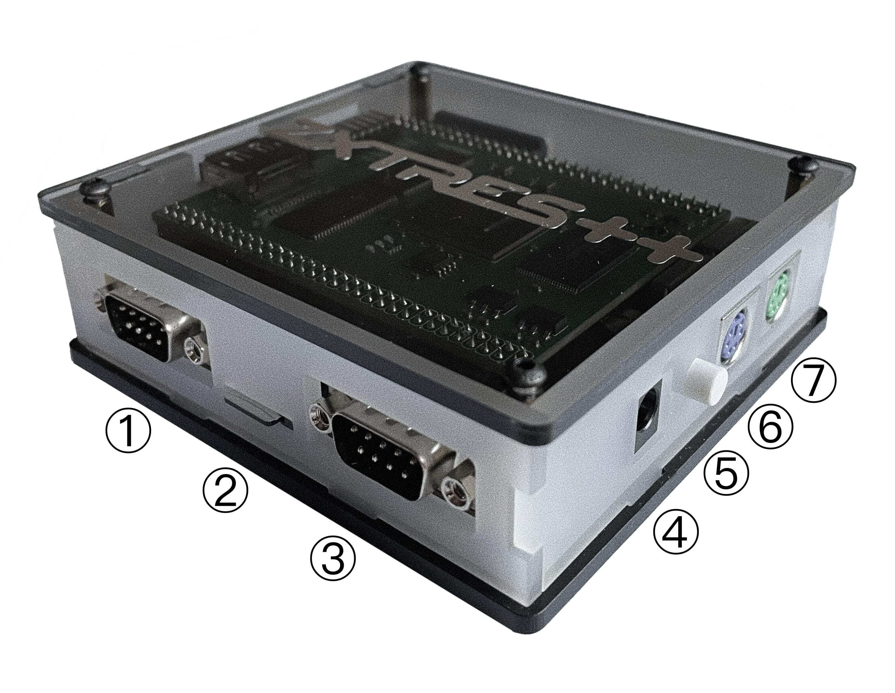
1 |
Puerto de Mando Izquierdo |
2 |
Ranura microSD |
3 |
Puerto de Mando Derecho |
4 |
Enchufe de Alimentación |
5 |
Interruptor |
6 |
Puerto de Teclado PS/2 |
7 |
Puerto de Ratón PS/2 |
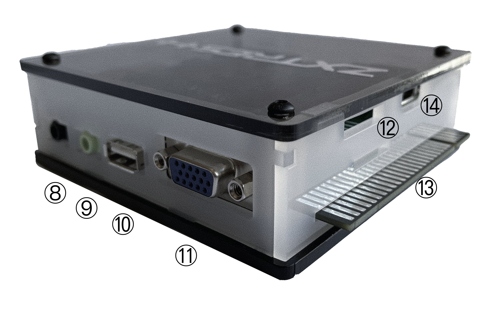
8 |
Entrada de Sonido |
9 |
Salida de Sonido |
10 |
Puerto USB (sólo utilizable con Tarjeta intermedia instalada) |
11 |
Salida RGB/VGA |
12 |
Acceso a JTAG |
13 |
Puerto de expansión |
14 |
Salida DisplayPort |
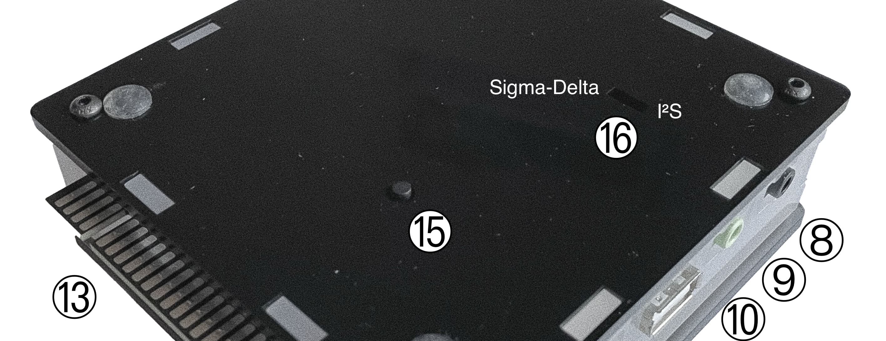
15 |
Botón BOOTSEL para tarjeta intermedia |
16 |
Interruptor selector de sonido (Sigma-Delta o I2S) |
Configuración Inicial
Para poder poner en marcha un ZXTRES hace falta, al menos, lo siguiente:
-
Un cargador USB, una TV u otro dispositivo que ofrezca alimentación USB (5VDC y, al menos, 1A). El conector es un jack de barril de 5,5mm en el exterior y 2,1mm en el interior, con polaridad positiva (el exterior positivo y el interior negativo)
-
Un cable y un monitor o TV con DisplayPort, VGA o RGB (la conexión RGB también se puede utilizar con un adaptador VGA a SCART y conectarse a TV compatibles)
-
Un teclado PS/2
|
Es importante que la fuente tenga un voltaje estable y suficiente intensidad, o es posible que ocurran comportamientos erráticos (fallo del teclado, DisplayPort, etc.). Algunos teclados y periféricos podrían requerir el uso de una fuente de alimentación similar pero que ofrezca 2 amperios o más. 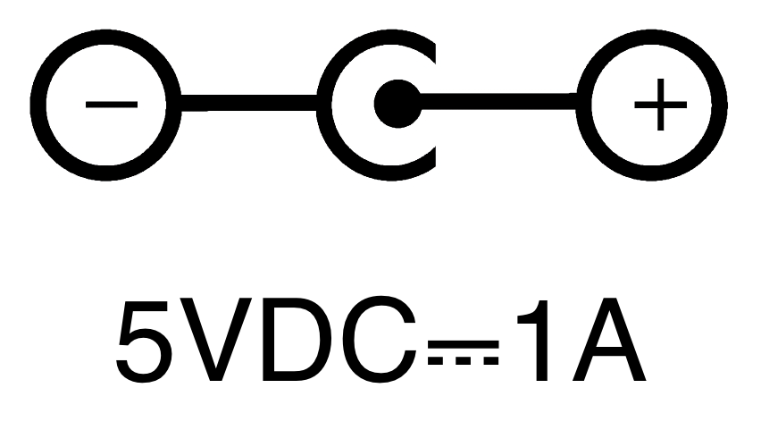 |
Para poder aprovechar todo su potencial, es útil tener también:
-
Una tarjeta microSD, de 32GB de capacidad o menos
-
Unos altavoces de PC para conectar a la salida de audio, o un cable jack-stereo a dos conectores RCA rojo/blanco para conectar a la TV
-
Al menos un mando norma Atari, como por ejemplo, un gamepad DB9 de Megadrive
-
Un ratón PS/2
-
Un cable con un jack estéreo de 3,5 mm en un extremo y los dos canales de sonido divididos en dos salidas mono en el otro, si se quiere usar algún dispositivo de reproducción y/o grabación de audio, como por ejemplo un Miniduino (ver la sección correspondiente más adelante), un PC/Mac/Raspberry PI, etc. o un reproductor/grabador de cassette. El canal derecho se utiliza como entrada (EAR) y el canal izquierdo se puede usar como salida de grabación (MIC).
|
Si se utiliza un adaptador VGA a Euroconector o SCART activo, este emplea pines no utilizados del puerto VGA para transmitir el audio, pero sólo si no hay nada conectado al puerto jack de 3,5 mm de salida de sonido. |
Formato de la tarjeta microSD
La siguiente tabla resume los requisitos particulares de los distintos cores que utilizan la tarjeta microSD.
| Core | FAT16 | FAT32 | +3e | Tipo de Partición Primaria | Particiones Extra | Tipo de Acceso | Notas |
|---|---|---|---|---|---|---|---|
ZX Spectrum EXP |
Sí |
Sí |
Sí |
Cualquiera |
Sí |
Completo |
Utiliza esxdos de SPI Flash |
Amiga |
No |
Sí |
No |
Cualquiera |
No |
ROMs, imágenes de disco |
Necesita ROM |
Amstrad CPC 464 |
No |
No |
No |
Ninguna |
No |
No |
No utiliza la SD |
Amstrad CPC 6128 |
Sí |
Sí |
No |
Cualquiera |
No |
ROMs, Imágenes de disco ( |
Necesita ROMs |
Arcade |
Sí |
Sí |
No |
Cualquiera |
No |
Sólo ROMs ( |
|
Atari 2600 |
Sí |
Sí |
No |
Cualquiera |
No |
Sólo ROMs ( |
|
ColecoVision |
Sí |
Sí |
No |
Cualquiera |
No |
Sólo ROMs ( |
|
Jupiter ACE |
No |
No |
No |
Ninguna |
No |
No |
No utiliza la SD |
Enterprise |
Sí |
Sí |
No |
Cualquiera |
No |
Imágenes de disco ( |
Necesita ROM |
Neo-Geo |
Sí |
Sí |
No |
Cualquiera |
No |
Sólo imágenes ( |
Necesita BIOS |
PC XT |
Sí |
Sí |
No |
Cualquiera |
No |
Imágenes de disco ( |
Necesita BIOS |
ZX81 |
Sí |
Sí |
No |
Cualquiera |
No |
Sólo imágenes ( |
|
zxp3 |
Sí |
Sí |
Si |
Cualquiera |
No |
Imágenes de disco ( |
Necesita ROM |
ZX Spectrum Next |
Sí |
Sí |
No |
Cualquiera |
Sí |
Completo |
Puede utilizar esxdos en la microSD |
|
El tamaño máximo de una partición FAT16 son 4GB |
|
A la hora de poner el nombre a una partición que se vaya a utilizar con esxdos, es importante no utilizar el mismo que el de cualquiera de los directorios dentro, o se producirá un error de acceso a ese directorio. (Ej: No llamar a la partición |
|
Para el core de Spectrum, también es posible tener una primera partición en formato +3DOS y luego otra(s) en formato FAT16 o FAT32, para su uso con una ROM de +3e. |
Windows
Para configuraciones sencillas, y tarjetas del tamaño adecuado (2GB o menos para FAT16 y 32GB o menos para FAT32), se puede utilizar la herramienta de formato oficial de la SD Association.
Para otras configuraciones, y según la versión de sistema operativo de que se disponga, se podrá utilizar la herramienta de línea de comandos diskpart o bien la interfaz gráfica de administración de discos del sistema.
Por ejemplo, en Windows, para formatear una tarjeta con una única partición FAT16 (si la tarjeta es de 4GB o menos de tamaño), que figura como disco 6 al ejecutar list disk desde diskpart:
select disk 6
clean
create part primary
active
format FS=FAT label=ZXTRES
exitPara crear dos primeras particiones FAT16 de 4GB (por ejemplo, para usar con el core de MSX) y usar el resto del espacio con otra más en formato FAT32 (para tarjetas de más de 8GB):
select disk 6
clean
create part primary size=4000
set id = 06
active
format fs=FAT label=ZXTRES quick
create part primary size=4000
format fs=FAT label=EXTRA quick
create part primary
format fs=FAT32 label=DATA quick
exitPara crear una partición FAT32 de 4GB (por ejemplo, para usar con el core de Amstrad CPC 6128) y usar el resto del espacio con otra más en formato FAT32 (para tarjetas de más de 4GB de tamaño):
select disk 6
clean
create part primary size=4000
set id = 0b
active
format fs=FAT32 label=ZXTRES unit=4k quick
create part primary
format fs=FAT32 label=EXTRA quick
exitmacOS
Para configuraciones sencillas, y tarjetas del tamaño adecuado (2GB o menos para FAT16 y 32GB o menos para FAT32), se puede utilizar la herramienta de formato oficial de la SD Association o la Utilidad de Discos incluida con el sistema operativo.
Para configuraciones más complejas, será necesario utilizar la línea de comandos.
Por ejemplo, en macOS, para formatear una tarjeta con una única partición FAT16 (si la tarjeta es de 2GB o menos de tamaño), que figura como disk6 en la lista de dispositivos:
diskutil unmountDisk /dev/disk6
diskutil partitionDisk /dev/disk6 MBR "MS-DOS FAT16" ZXTRES RPara dividirla en dos particiones iguales (si la tarjeta es de 4GB o menos de tamaño):
diskutil unmountDisk /dev/disk6
diskutil partitionDisk /dev/disk6 MBR "MS-DOS FAT16" ZXTRES 50% "MS-DOS FAT16" EXTRA 50%Para crear dos primeras particiones FAT16 de 4GB (por ejemplo, para usar con el core de MSX) y usar el resto del espacio con otra más en formato FAT32 (para tarjetas de más de 8GB):
diskutil unmountDisk /dev/disk6
diskutil partitionDisk /dev/disk6 MBR %DOS_FAT_16% ZXTRES 4G %DOS_FAT_16% EXTRA 4G "MS-DOS FAT32" DATA R
sudo newfs_msdos -F 16 -v ZXTRES -c 128 /dev/rdisk6s1
sudo newfs_msdos -F 16 -v EXTRA -c 128 /dev/rdisk6s2|
El comando |
Para crear una partición FAT32 de 4GB (por ejemplo, para usar con el core de Amstrad CPC 6128) y usar el resto del espacio con otra más en formato FAT32 (para tarjetas de más de 4GB de tamaño):
diskutil unmountDisk /dev/disk6
diskutil partitionDisk /dev/disk6 MBR "MS-DOS FAT32" ZXTRES 4G "MS-DOS FAT32" EXTRA R|
Para el core de Amstrad CPC, en este caso, al elegir exactamente un tamaño de partición de 4G, macOS elegirá por defecto un tamaño de cluster de 4096. Para un tamaño inferior, podría ser necesario volver a formatear la primera partición con unos comandos similares a estos: |
|
Por defecto, macOS indexa y guarda información extra en archivos de los discos externos. Esto se puede minimizar usando estos comandos (suponiendo que la partición de la microSD se llama |
Linux
Existen multitud de herramientas en Linux que permiten formatear y particionar el contenido de una tarjeta microSD (como fdisk, parted, cfdisk, sfdisk o GParted). Sólo se ha de tener en cuenta que el esquema de particiones a utilizar siempre ha de ser MBR, y la primera partición (la que se utilizará para esxdos) ha de ser primaria.
Por ejemplo, para formatear una tarjeta con una única partición FAT16 (si la tarjeta es de 4GB o menos de tamaño), que figura como sdc en la lista de dispositivos:
sudo fdisk --compatibility=dos /dev/sdc(...)
Command (m for help): n
Partition type
p primary (0 primary, 0 extended, 4 free)
e extended (container for logical partitions)
Select (default p): p
Partition number (1-4, default 1): 1
First sector (62-31116288, default 62):
Last sector, +/-sectors or +/-size{K,M,G,T,P} (128-31116288, default 31116288):
Created a new partition 1 of type 'Linux'
Command (m for help): t
Selected partition 1
Hex code (type L to list all codes): 6
Changed type of partition 'Linux' to 'FAT16'.
Command (m for help): a
Partition number (1, default 1): 1
The bootable flag on partition 1 is enabled now.
Command (m for help): p
Disk /dev/sdc
Disklabel type: dos
Disk identifier
Device Boot Start End Sectors Size Id Type
/dev/sdc1 62 31116288 31116288 984,9M 6 FAT16Formatear la partición FAT (requiere permisos de root)
sudo mkfs.fat -F 16 -n ZXTRES -s 128 /dev/sdc1Teclado
Teclado PS/2
El mapa de un teclado conectado al puerto PS/2 (asignación de las teclas físicas del teclado con las pulsaciones que se presentan a los distintos cores) se cambia desde el menú Advanced de la BIOS. Existen tres mapas distintos a elegir: Español (por defecto), inglés, y Spectrum (avanzado).
También se puede cambiar con la utilidad keymap. Dentro de /bin hay que crear un directorio llamado keymaps y ahí copiar los mapas de teclado se desee usar. Por ejemplo, para cambiar al mapa US hay que escribir .keymap us desde esxdos.
Para que el mapa se conserve después de un master reset, hay que tener seleccionado Default en la configuración de BIOS.
Para más información, consultar este mensaje en el foro de ZX-Uno.
|
SE Basic IV utiliza su propio sistema nativo para configurar el mapa de teclado y también tiene mapas propios. |
Español
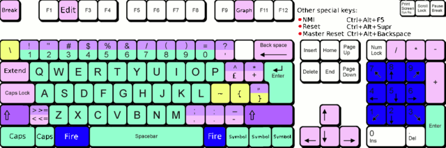
Inglés
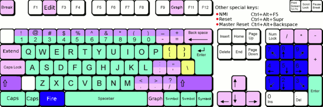
Spectrum
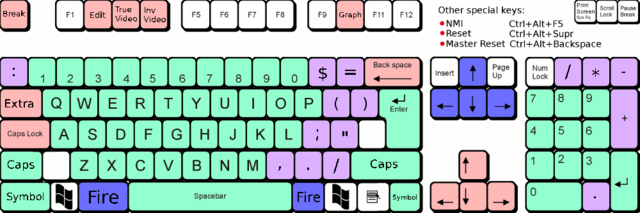
Teclas especiales y botones
Teclas especiales durante el arranque:
-
F2Entrar en la BIOS -
Bloq. MayúsoCursor abajoo, si hay un mando conectado, pulsar la dirección hacia abajo: Menú de selección de cores -
Esco, si hay un mando de dos o más botones conectado, pulsar el botón de disparo 2: Menú de selección de ROMS del core de ZX Spectrum -
R: Carga la rom del core de ZX Spectrum en modo "real" deshabilitando esxdos, nuevos modos gráficos, etc. -
/(del teclado numérico): Carga la ROM por defecto del core de ZX Spectrum en modo "root" -
Número del
1al9: Cargar el core en la ubicación de la Flash correspondiente a dicho número. En las versiones más recientes de BIOS, la tecla9carga el core del slot temporal utilizado por el plugin ZX3.
Teclas especiales que se pueden utilizar durante la ejecución del core principal (ZX Spectrum):
-
Esc: BREAK -
F2: Edit -
F5: NMI -
F7: Reproducir o Pausa en la reproducción de archivos .PZX -
F8: Rebobinar el archivo .PZX hasta la marca anterior -
F10: Graph -
F12: Turbo Boost. Pone a la CPU a 28 MHz -
Ctrl+Alt+Supr: Soft Reset (reinicia el Core). -
Ctrl+Alt+Backspace: Hard reset (reinicia la FPGA). Backspace es la tecla de borrar hacia atrás, encima deEnter -
Bloq. Despl.: cambia de modo vídeo RGB a VGA y viceversa (DisplayPort está siempre activo) -
Inicio: Alterna entre los distintos modos de gestión del desentrelazado en DisplayPort (Blend, Off, Auto y On). Esta opción sólo está disponible en los cores para ZXTRES+ y ZXTRES++ -
Fin: Activa los distintos modos de color monocromo
esxdos
esxdos es un firmware para la interfaz the DivIDE/DivMMC, que el ZXTRES implementa, y que permite el acceso a dispositivos de almacenamiento como la tarjeta microSD. Incluye comandos similares a los de UNIX, aunque para usarlos hay que precederlos con un punto, por ejemplo .ls, .cd, .mv, etc.
Para poder utilizarlo es necesario incluir los ficheros correspondientes en la primera partición de la tarjeta microSD.
En el momento de escribir este documento, la versión incluida con ZXTRES es la 0.8.9, y se puede descargar desde la página oficial en este enlace.
Una vez descargado y descomprimido, se han de copiar, a la raíz de la tarjeta, los directorios BIN, SYS y TMP con todo su contenido.
Si todo se ha hecho correctamente, al encender el core Spectrum de ZXTRES se verá cómo esxdos detecta la tarjeta y carga los componentes necesarios para funcionar.
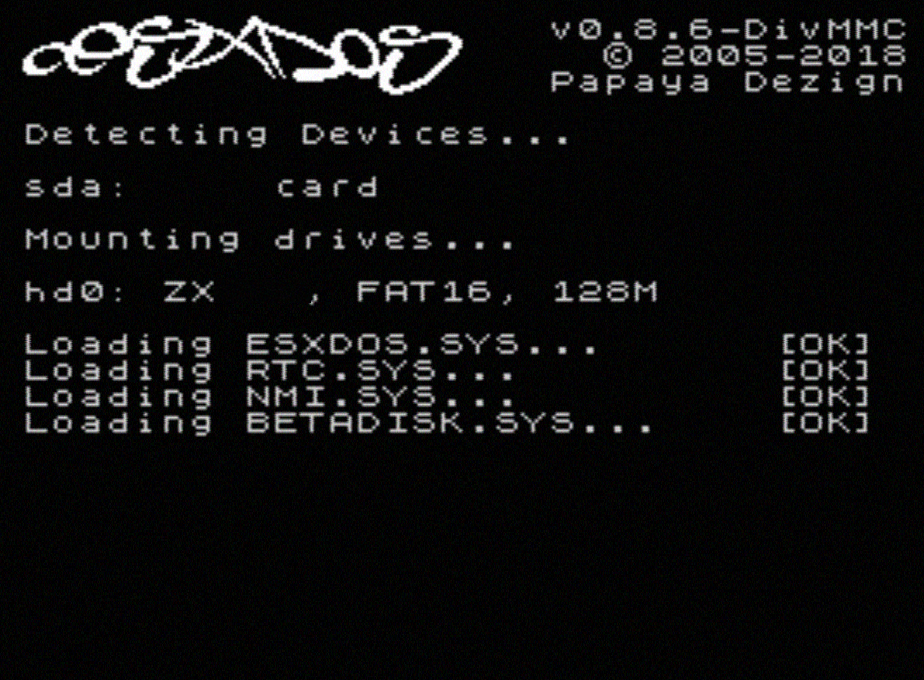
Es recomendable, además, añadir los comandos esxdos específicos para ZXTRES. Estos se pueden obtener en la página con el código fuente del proyecto (aquí, aquí, y aquí), y son los siguientes:
back16m backzx2 backzx3 backzxd core corebios dmaplayw esprst iwconfig joyconf keymap loadpzx loadtap playmid playrmov romsback romsupgr upgr16m upgrzx2 upgrzx3 upgrzxd zxuc zxunocfg
Más adelante se explica lo que hace cada uno de ellos.
BIOS
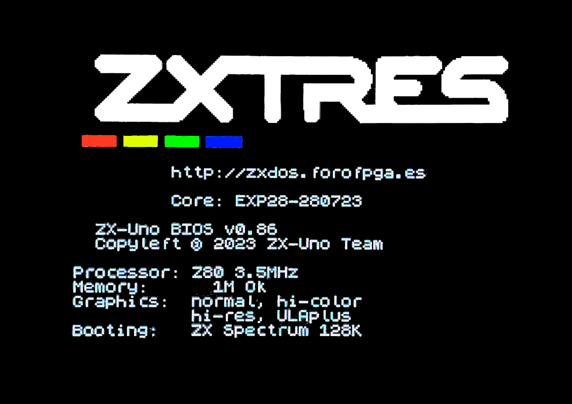
Si se pulsa la tecla F2 durante el arranque, se tendrá acceso a la configuración de BIOS. El firmware de BIOS es el primer programa que se ejecuta cuando se enciende el ZXTRES. El propósito fundamental del software de BIOS es iniciar y probar el hardware y cargar uno de los cores instalados.
Usando las teclas de cursor izquierda y derecha, se puede navegar por las pantallas de configuración de la BIOS. Con las teclas arriba y abajo se pueden elegir los distintos elementos de cada pantalla y, con la tecla Enter, es posible activar y elegir las opciones de cada una de estas. La tecla Esc sirve para cerrar las ventanas de opciones abiertas sin aplicar ninguna acción.
Otras teclas que se pueden pulsar durante el arranque de la BIOS son:
-
Bloq. MayúsoCursor abajo, oCaps Shif+6oCaps Shift+2o, si hay un mando conectado, pulsar la dirección hacia abajo: Menú de selección de cores -
EscoCaps Shift+Espacio, o si hay un mando de dos o más botones conectado, pulsar el botón de disparo 2: Menú de selección de ROMS del core de ZX Spectrum -
R: Carga la rom del core de ZX Spectrum en modo "real" deshabilitando esxdos, nuevos modos gráficos, etc. (combinado conEsca continuación permite elegir otra ROM distinta) -
/(del teclado numérico) oSymbol Shift+V: Carga la ROM por defecto del core de ZX Spectrum en modo "root" (combinado conEsca continuación permite elegir otra ROM distinta) -
Número del
1al9: Cargar el core en la ubicación de la Flash correspondiente a dicho número. En las versiones más recientes de BIOS, la tecla9carga el core del slot temporal utilizado por el plugin ZX3.
Main
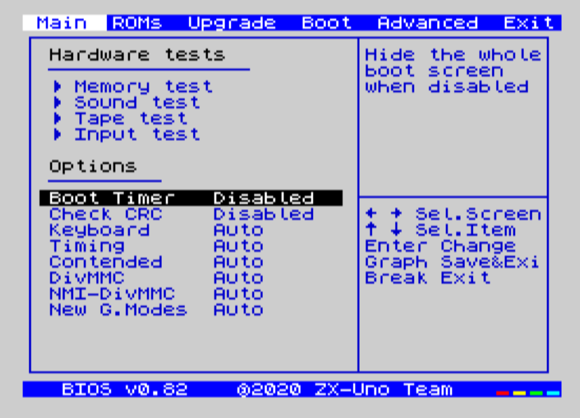
En la primera pantalla de configuración, además de poder ejecutar distintas pruebas, se puede definir el comportamiento por defecto para lo siguiente:
-
Espera en el arranque (Boot Timer): Indica el tiempo que está la pantalla de arranque disponible (o la oculta por completo)
-
Comprobar CRC de las ROMs (Check CRC): Para comprobar la integridad de las ROMs al cargarlas (más seguro) u omitirla (más rápido)
-
Tipo de teclado (Keyboard)
-
Timing: Para definir el comportamiento de la ULA (Modo 48K, Modo 128K, Modo Pentagon)
-
Contención de memoria (Contended)
-
DivMMC
-
Soporte NMI para DivMMC
-
Soporte para nuevos modos gráficos (ULAPlus, Timex, Radastan)
Se puede consultar información más técnica en la Wiki de ZX-Uno.
ROMs
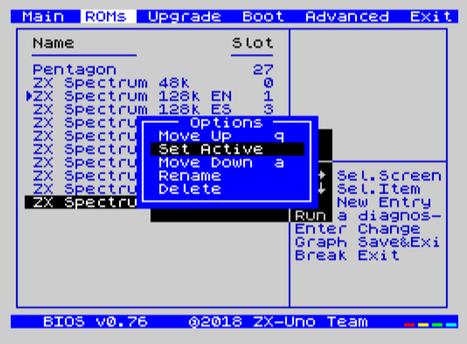
La segunda pantalla muestra las ROMs de ZX Spectrum instaladas y permite reordenar (Move Up, Move Down), renombrar (Rename) o borrar (Delete) cada una de ellas, así como elegir la que se cargará por defecto en el arranque (Set Active).
Upgrade
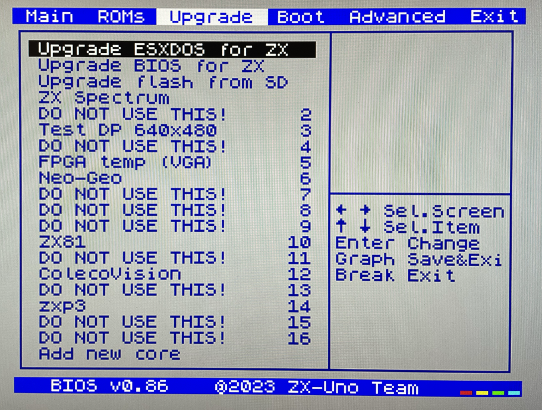
La pantalla Upgrade se utiliza para realizar las distintas actualizaciones del contenido de la memoria Flash: esxdos, BIOS, Cores, etc. (véase el apartado correspondiente a actualizaciones para más información).
Boot
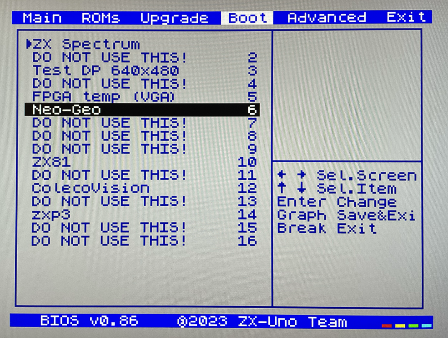
En la pantalla Boot se puede elegir qué core de los instalados se desea que cargue por defecto en el arranque.
Advanced
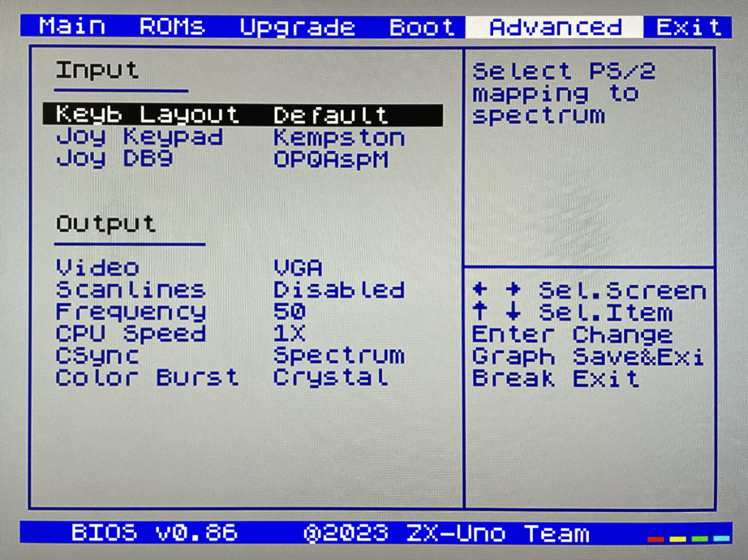
La pantalla de configuración avanzada sirve para modificar los siguientes ajustes:
-
Distribución del teclado (Keyb Layout): Ver el apartado correspondiente para más información)
-
Comportamiento de un mando conectado al puerto de mando derecho, y también del mando emulado con el teclado numérico (Joy Keypad): Kempston, Sinclair Joystick 1, Sinclair Joystick 2, Protek, Fuller o simular las teclas
Q,A,O,P,EspacioyM -
Comportamiento de un mando conectado al puerto de mando izquierdo (Joy DB9): Kempston, Sinclair Joystick 1, Sinclair Joystick 2, Protek, Fuller o simular las teclas
Q,A,O,P,EspacioyM -
Salida de vídeo (Video): PAL, NTSC o VGA (DisplayPort está siempre activo)
-
Simulación de línea de exploración (Scanlines): Activas (Enabled) o inactivas (Disabled)
-
Frecuencia horizontal de VGA (Frequency): 50, 51, etc.
-
Velocidad de la CPU: Normal (1x) o acelerada (2X, 3X, etc.)
-
Csync: Spectrum o PAL
Exit
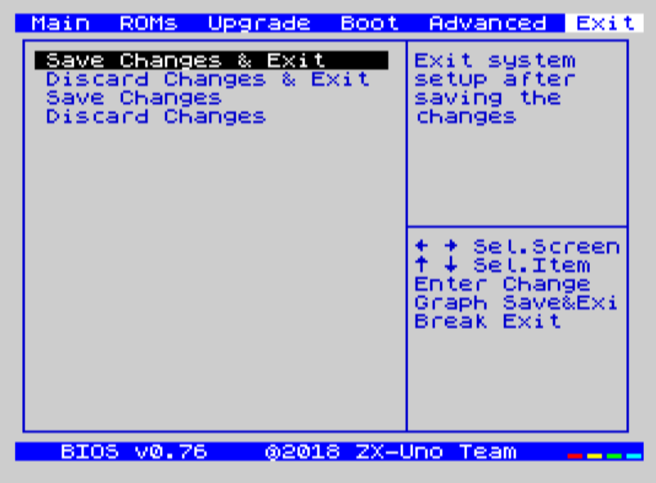
Finalmente, desde la última pantalla se puede:
-
Salir de la configuración de BIOS guardando los cambios (Save Changes & Exit)
-
Descartar los cambios y salir (Discard Changes & Exit)
-
Guardar los cambios sin salir (Save Changes)
-
Descartar los cambios (Discard Changes)
ZX Spectrum
El core principal es el que implementa un ordenador ZX Spectrum. Este core es especial, y no se puede sustituir por otro que no sea de ZX Spectrum, ya que el ZXTRES lo utiliza para su funcionamiento.
Estas son algunas de sus principales características:
-
Implementación ZX Spectrum 48K, 128K, Pentagon y Chloe 280SE
-
ULA con modos ULAplus, Timex y modo Radastan (incluyendo scroll por hardware y grupo de paleta seleccionable)
-
Posibilidad de desactivar la contención de memoria (para compatibilidad con Pentagon 128)
-
Posibilidad de elegir el comportamiento del teclado (issue 2 o issue 3)
-
Posibilidad de elegir el timing de la ULA (48K, 128K o Pentagon)
-
Control del encuadre de pantalla configurable para tipo de timing, y posibilidad de elegir entre sincronismos originales de Spectrum o sincronismos estándar PAL progresivo.
-
Soporte de la MMU horizontal del Timex con bancos HOME, DOC y EXT en RAM.
-
Interrupción ráster programable en número de línea, para cualquier linea de TV.
-
Posibilidad de activar/desactivar los registros de manejo de bancos de memoria, para mejor compatibilidad con cada modelo implementado
-
Posibilidad de activar/desactivar los dispositivos incorporados al core para mejorar la compatibilidad con ciertos programas
-
Soporte ZXMMC y DIVMMC para para +3e, esxdos y firmwares compatibles
-
Soporte Turbo Sound
-
Soporte de SpecDrum
-
Cada canal A,B,C de los dos chips AY-3-8912, beeper y SpecDrum pueden dirigirse a las salidas izquierda, derecha, ambas o ninguna, permitiendo la implementación de configuraciones tales como ACB, ABC, etc.
-
Soporte de mando real y mando emulado en teclado con protocolo de joystick Kempston, Sinclair 1 y 2, Cursor, Fuller y QAOPSpcM.
-
Soporte de modo turbo a 7 MHz, 14 MHz, 28 MHz
-
Soporte de teclado con protocolo PS/2 y mapa del mismo configurable desde el propio Spectrum.
-
Soporte de ratón PS/2 emulando el protocolo Kempston Mouse.
-
Posibilidad de salida de vídeo en modo RGB 15 kHz, VGA y DisplayPort
-
Frecuencia de refresco vertical seleccionable para la compatibilidad con monitores VGA
-
Soporte de arranque multicore: desde el Spectrum se puede seleccionar una dirección de la SPI Flash y la FPGA cargará un core desde ahí
-
Modos de color incluyendo monocromo o fósforo verde/naranja
-
Salida de audio I2S y Sigma-Delta
-
Soporte Wi-Fi (UART) vía tarjeta intermedia
-
Soporte MIDI (General MIDI) vía tarjeta intermedia
-
Soporte RTC (reloj en tiempo real) vía tarjeta intermedia
-
Carga de ficheros
PZXdesde la SD simulando carga de cinta -
Varios modos de gestión del desentrelazado en la salida DisplayPort incluyendo una opción para mezclar (blend) los colores. Esto sólo está disponible en los cores para ZXTRES+ y ZXTRES++
ROMs
El core de ZX Spectrum tiene la capacidad de inicializar utilizando diferentes versiones de ROM (48K, 128K, Plus 2, etc.). Estas se almacenan en la memoria flash del ZXTRES, y se puede elegir cuál cargar, pulsando la tecla Esc durante el arranque. También es posible definir desde la configuración de BIOS, cuál es la ROM que se desea que se cargue por defecto.
Véase el apartado de actualizaciones para más información sobre cómo ampliar o modificar las ROMs almacenadas en la memoria flash.
DerbyPro
DerbyPro o Derby++ es una ROM mejorada para el ZX Spectrum, basada en la versión 1.4 de la ROM de desarrollo Derby. El Spectrum 128 (nombre en código "Derby") fue una máquina española, encargada por Investronica y lanzada en 1985. Incluía un teclado aparte que añadía varias teclas de edición extra. En 1986 se lanzó la versión para Reino Unido con una versión simplificada de 128 BASIC y sin teclado extra. Derby++ se basa en la ROM española para incluir lo mejor de las dos versiones, sin sus inconvenientes, y con soporte para nuevo hardware.
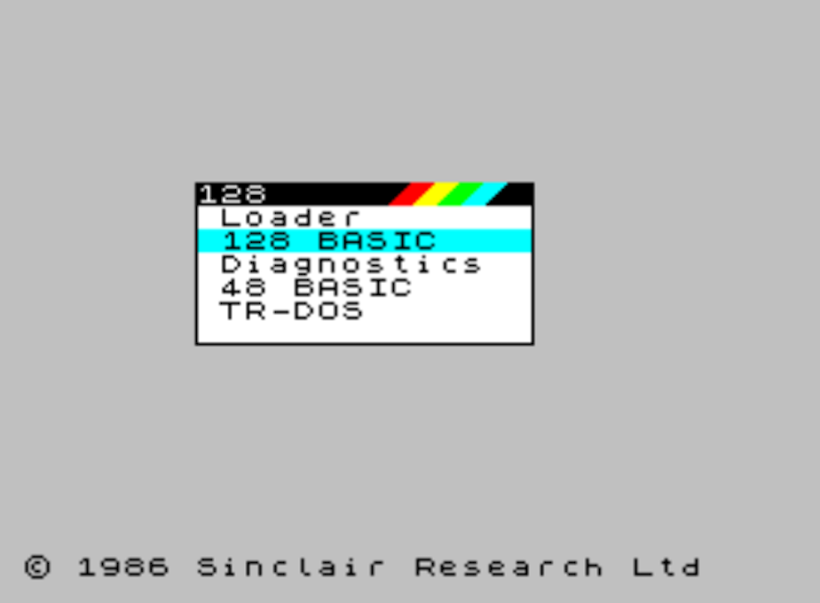
Algunas de sus características incluyen:
-
Modo 48K con compatibilidad binaria al 100%
-
Comando PLAY con soporte para 6 canales
-
Acceso al navegador NMI de esxDOS desde el menú de arranque
-
128 BASIC con correcciones, comandos adicionales y editor de texto a pantalla completa
-
Soporte para esxDOS en 128 BASIC
-
Acceso vía menú a TR-DOS
-
Comando PALETTE para ULAplus
-
Ejecución de la mayor parte del software para Spectrum sin tener que hacer un cambio de configuración en la BIOS
Se puede descargar la ROM, un manual de usuario y otros ficheros del grupo público oficial de Facebook.
Como es una ROM de 64K con soporte para nuevo hardware, se pueden usar estas opciones al añadirla a la SPI flash:
| Ajuste | Significado |
|---|---|
|
Habilitar DivMMC |
|
Habilitar NMI DivMMC (menú de esxdos) |
|
Usar timings de 128K |
CargandoLeches
CargandoLeches es un conjunto de ROMs de ZX Spectrum originalmente pensadas para cargar juegos a una velocidad de 15 a 20 veces superior a lo normal. En lugar de una cinta se requiere una fuente de audio digital como un ordenador, un dispositivo móvil, un reproductor MP3, etc. También tiene una rutina que detecta el método de carga y si no se trata de una carga ultrarrápida, ejecuta el código de la ROM original. En cargas que no sean CargandoLeches no se nota por tanto la diferencia entre usar esta ROM y la ROM original.
Desde la versión 2.0, el proyecto pasó de ser una única ROM a varias, cada una con distintas opciones. Así, es posible elegir diferentes combinaciones que pueden incluir:
-
Carga ultrarrápida
-
Reset & Play (es decir, que al hacer un reset automáticamente se ponga en modo carga de cinta)
-
Introducción de POKEs
-
Desactivar o activar la expansión de tokens (palabras clave) de Sinclair BASIC
El conjunto completo de ROMs está disponible para descargar desde el repositorio en GitHub aquí.
Dependiendo de la ROM elegida, los ajustes a indicar cuando se añada a la SPI flash pueden variar. Por ejemplo, para la ROM 48le_ea_re_po (que tiene habilitadas todas las opciones), se pueden usar estos ajustes (no hay que habilitar NMI DivMMC porque el editor de POKEs ya lo utiliza):
| Ajuste | Significado |
|---|---|
|
Habilitar DivMMC |
|
Deshabilitar bit alto de ROM (bitd 2 de 1FFD) |
|
Deshabilitar bit bajo de ROM (bit 4 de 7FFD) |
|
Deshabilitar modo Timex |
POKEs
En el caso de usar una ROM con la opción de introducir POKEs, se hace de la siguiente manera:
-
Una vez el juego ha cargado, pulsando NMI (
F5), aparecerá un campo en la parte superior izquierda de la pantlla -
Escribir la dirección del POKE a introducir y pulsar
Enter -
Escribir el valor del POKE y pulsar
Enter -
Repetir los pasos 2. y 3. todas las veces que se desee. Para terminar y volver al juego, pulsar
Enterdos veces seguidas
Preparación de cintas de carga ultrarrápida
Las ROMs con la opción de carga ultrarrápida necesitan archivos de cinta especiales que se generan desde ficheros TAP de carga normal, de juegos que no tengan protección de carga o modo turbo.
Para crear una cinta de carga ultrarrápida se necesitan las utilidades de línea de comandos leches y CgLeches. Estas se pueden conseguir, para Windows, en el repositorio oficial. Para macOS es posible descargar una versión no oficial en este otro repositorio.
En otro caso, es posible compilar desde el código fuente disponible en el repositorio oficial. Por ejemplo, para compilar en Linux usando gcc basta con usar estos comandos:
gcc leches.c -o leches
gcc CgLeches.c -o CgLechesPara generar una cinta de carga ultarrápida se ha de invocar desde una consola al comando CgLeches indicando, al menos, el fichero TAP de origen, y el fichero (WAV o TZX) de destino. Existen otros parámetros como el nivel de velocidad de la carga, entre 0 y 7 (donde 0 es la más rápida pero posiblemente más incompatible), si se desea un fichero mono, estéreo, etc. (en el caso de WAV) y más.
Así, para producir un fichero WAV de audio con una cinta de carga ultrarrápida desde el fichero de cinta Valley.tap con velocidad de carga 5, se haría así:
(...) CgLeches Valley.tap Valley.wav 5Ahora el fichero Valley.wav se puede reproducir desde un ordenador u otro dispositivo y cargarlo usando la ROM (véase la sección dedicada a la carga desde cinta para más detalles).
SE Basic IV
SE Basic IV es un intérprete de Microsoft BASIC, gratuito y de código abierto para la arquitectura Z80. Aunque aspira a tener un alto grado de compatibilidad con Microsoft BASIC, hay algunas diferencias. Se ha diseñado para funcionar en un Chloe 280SE pero también es compatible con el core de ZX Spectrum del ZXTRES.
SE Basic comenzó en 1999 como firmware para el ZX Spectrum SE, el antecesor al Chloe 280SE. Las primeras versiones eran modificaciones aplicadas sobre la ROM original del ZX Spectrum. Desde la versión 1 utiliza su propio fichero ensamblador. Desde la versión 2, soporta ULAplus.
La versión 3, también conocida como OpenSE BASIC reemplazó el código ROM original con una versión de código abierto derivada de las ROMs del ZX81 y el SAM Coupé. Todavía se mantiene como un firmware de código abierto para el Spectrum y se incluye, por ejemplo, en el repositorio principal de Debian para su uso en emuladores.
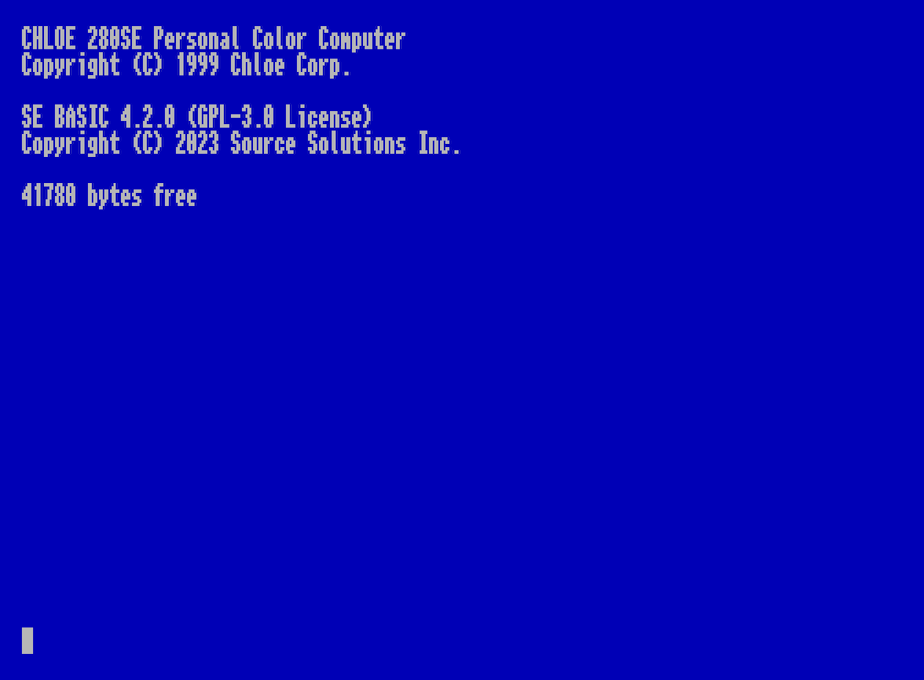
La versión 4.0 añadió soporte para un modo de 80 columnas. La versión 4.1 fue un intento fallido de refactorizar el código. A partir de 2019, la última versión (4.2 Cordelia) se reconstruyó desde cero para aprovechar al completo el core de ZX Spectrum del ZX-Uno (y ZXTRES). Aunque las versiones anteriores mantenían un gran nivel de compatibilidad con Sinclair BASIC y otro software, esta nueva versión ya no tiene soporte para software de Sinclair y es mucho más parecida en sintaxis a Atari BASIC.
La versión 4.2 requiere que divMMC esté activo con esxDOS o UnoDOS 3 instalado. Sin embargo, ni los comandos "DOT" ni el navegador NMI están soportados.
Algunas de sus características son:
-
Modos de vídeo con paleta de 40 columnas (16 colores) y 80 column (2 colores)
-
Evaluación de expresiones siempre activa (uso de variables como nombres de fichero)
-
Formato de empaquetado de aplicaciones con soporte para convertir programas BASIC en apps
-
Tipos automáticos de datos
-
Lógica a nivel de bit (AND, NOT, OR, XOR).
-
Sistema de ayuda incorporado
-
Troceado de cadenas a elegir entre Microsoft (LEFT$, MID$, RIGHT$) o Sinclair (TO)
-
Caracteres compuestos (soporta Vietnamita).
-
Sistema de archivos basado en discos (nada de cintas).
-
Gestión de errores (ON ERROR…, TRACE).
-
Control de flujo (IF…THEN…ELSE, WHILE…WEND).
-
Acceso aleatorio completo a ficheros desde BASIC (OPEN, CLOSE, SEEK).
-
Soporte para teclado de tamaño completo (Supr, Inicio, Fin y demás).
-
Modos gráficos en el modo de 40 columnas (CIRCLE, DRAW, PLOT).
-
Traducción de conjuntos de caracteres, mensajes de error y mapas de teclado
-
Nombres de variable largos
-
Notación de números estilo Motorola (%; binario, @; octal, $; hexadecimal)
-
BREAK NMI
-
Validación de sintaxis según se introduce
-
Comando PLAY con soporte para PSG de 6 canales y MIDI
-
Funciones recursivas definidas por el usuario
-
Actualizaciones inteligentes de firmware
-
Abreviación de tokens y atajos (&; AND, ~; NOT; |; OR, ?; PRINT, '; REM')
-
Capacidad para deshacer NEW (OLD).
-
Canales definidos por el usuario
-
Conjuntos de caracteres definidos por el usuario (256 caracteres)
-
Macros definidas por el usuario
-
Modos de pantalla definidos por el usuario
|
Para que la opción de actualización de firmware funcion, se ha de instalar SE Basic IV en los slot 2 y 3 |
|
El uso de la actualización de firmware reemplaza la versión de esxDOS con la última versión de UnoDOS 3 |
Otras ROMs
Estos son algunos ajustes válidos para añadir a la SPI flash algunas otras ROM personalizadas:
| Nombre de la ROM | Ajustes |
|---|---|
Gosh Wonderful ROM v1.33 |
dnhl17x |
Looking Glass 1.07 |
dnhl17x |
ZX82 by Daniel A. Nagy |
dnhl17 |
ZX85 by Daniel A. Nagy |
dntmh1 |
Arcade Game Designer 0.1 |
thl17x |
Formato avanzado de la tarjeta microSD (+3e)
Una de las ROM que se pueden cargar con el core de ZX Spectrum es la de ZX Spectrum +3e, que es una versión mejorada del Sinclair ZX Spectrum +3, y que soporta el uso de discos duros o tarjetas de memoria.
El +3e usa su propio esquema de particionado (llamado IDEDOS) para dividir el disco duro en diferentes particiones donde se pueden almacenar datos. Se necesita una version 1.28 o superior de la ROM para poder compartir particiones IDEDOS con particiones MBR. En otro caso, se ha dedicar la tarjeta completa al particionado IDEDOS.
|
El esquema de particionado que se presentará a continuación sólo se podrá utilizar con el core de Spectrum. Otros cores que necesiten acceso a la tarjeta SD posiblemente fallen o no se inicien correctamente, si se encuentra insertada una SD con este formato. |
|
En IDEDOS, cada partición puede tener un tamaño entre 1 y 16 Megabytes (16 millones de bytes), y cada disco puede tener entre 1 y 65535 particiones. Por tanto, lo máximo que se puede ocupar de una tarjeta será alrededor de 1 TB de espacio. |
A continuación se explica una forma de dividir una tarjeta en dos o tres partes, con la primera partición IDEDOS (1GB de tamaño), la segunda FAT16 (4GB) y la tercera FAT32 (resto del espacio de la tarjeta).
En la segunda partición se puede instalar, tal y como se explicó anteriormente exsdos y otros programas.
Windows
Se puede utilizar el administrador de discos de Windows. Los pasos a seguir serían:
-
Eliminar todas las particiones de la tarjeta
-
Crear una partición extendida, del tamaño que se quiera utilizar para IDEDOS
-
Crear una partición primaria de 4GB y formatear como FAT16
-
Opcionalmente, crear otra partición primaria ocupando el resto del espacio y formatear como FAT32
macOS
Será necesario utilizar la línea de comandos. Lo primero es determinar el disco a formatear:
diskutil listEn este ejemplo sería el disco 6:
(...)
/dev/disk6 (external, physical):
#: TYPE NAME SIZE IDENTIFIER
0: FDisk_partition_scheme *15.9 GB disk6
1: DOS_FAT_32 UNKNOWN 15.9 GB disk6s1Pasos a seguir:
-
Expulsar el disco y editar el esquema de particiones (el segundo paso requiere permisos de administrador):
diskutil unmountDisk /dev/disk6
sudo fdisk -e /dev/rdisk6fdisk: could not open MBR file /usr/standalone/i386/boot0: No such file or directory
Enter 'help' for information
fdisk: 1> erase
fdisk:*1> edit 1
Partition id ('0' to disable) [0 - FF]: [0] (? for help) 7F
Do you wish to edit in CHS mode? [n]
Partition offset [0 - 31116288]: [63] 128
Partition size [1 - 31116287]: [31116287] 2017152
fdisk:*1> edit 2
Partition id ('0' to disable) [0 - FF]: [0] (? for help) 06
Do you wish to edit in CHS mode? [n]
Partition offset [0 - 31116288]: [2017280]
Partition size [1 - 29099135]: [29099135] 7812504
fdisk:*1> flag 2fdisk:*1> edit 3
Partition id ('0' to disable) [0 - FF]: [0] (? for help) 0B
Do you wish to edit in CHS mode? [n]
Partition offset [0 - 31116288]: [9829784]
Partition size [1 - 21286504]: [21286504]
fdisk:*1> print
Starting Ending
#: id cyl hd sec - cyl hd sec [ start - size]
------------------------------------------------------------------------
1: 7F 1023 254 63 - 1023 254 63 [ 128 - 2017152] <Unknown ID>
2: 06 1023 254 63 - 1023 254 63 [ 2017280 - 7812504] DOS > 32MB
3: 0B 1023 254 63 - 1023 254 63 [ 9829784 - 21286504] Win95 FAT-32
4: 00 0 0 0 - 0 0 0 [ 0 - 0] unused
fdisk:*1> write
fdisk: 1> quit-
Formatear las particiones FAT (requiere permisos de administrador)
diskutil unmountDisk /dev/disk6
sudo newfs_msdos -F 16 -v ZXTRES -c 128 /dev/rdisk6s2
sudo newfs_msdos -F 32 -v EXTRA -b 4096 -c 128 /dev/rdisk6s3-
Comprobar cómo el esquema de particiones ha cambiado y ya es el que se deseaba:
diskutil list(...)
/dev/disk6 (external, physical):
#: TYPE NAME SIZE IDENTIFIER
0: FDisk_partition_scheme *15.9 GB disk6
1: 0x7F 1.0 GB disk6s1
2: DOS_FAT_16 ZXTRES 4.0 GB disk6s2
3: DOS_FAT_32 EXTRA 10.9 GB disk6s3Linux
Será necesario utilizar la línea de comandos. Lo primero es determinar el disco a formatear:
lsblkEn este ejemplo sería sdc:
NAME MAJ:MIN RM SIZE RO TYPE MOUNTPOINT
(..)
sdc 179:0 0 15,8G 0 disk
└─sdc1 179:1 0 15,8G 0 partPasos a seguir:
-
Comprobar que no está montado y editar el esquema de particiones (este paso requiere permisos de root):
sudo fdisk --compatibility=dos /dev/sdcWelcome to fdisk
Changes will remain in memory only, until you decide to write them.
Be careful before using the write command.
Command (m for help): n
Partition type
p primary (0 primary, 0 extended, 4 free)
e extended (container for logical partitions)
Select (default p): p
Partition number (1-4, default 1): 1
First sector (62-31116288, default 62): 128
Last sector, +/-sectors or +/-size{K,M,G,T,P} (128-31116288, default 31116288): 2017152
Created a new partition 1 of type 'Linux'
Command (m for help): t
Selected partition 1
Hex code (type L to list all codes): 7f
Changed type of partition 'Linux' to 'unknown'.
Command (m for help): n
Partition type
p primary (1 primary, 0 extended, 3 free)
e extended (container for logical partitions)
Select (default p): p
Partition number (2-4, default 2):
First sector (45-31116288, default 45): 2017280 .
Last sector, +/-sectors or +/-size{K,M,G,T,P} (2017153-31116288, default 31116288): 7812504
Created a new partition 2 of type 'Linux'
Command (m for help): t
Partition number (1,2, default 2): 2
Hex code (type L to list all codes): 6
Changed type of partition 'Linux' to 'FAT16'.
Command (m for help): a
Partition number (1,2, default 2): 2
The bootable flag on partition 2 is enabled now.
Command (m for help): n
Partition type
p primary (2 primary, 0 extended, 2 free)
e extended (container for logical partitions)
Select (default p): p
Partition number (3-4, default 3): 3
First sector (45-31116288, default 45): 9829784 .
Last sector, +/-sectors or +/-size{K,M,G,T,P} (2017153-31116288, default 31116288): 31116288
Created a new partition 3 of type 'Linux'
Command (m for help): t
Partition number (1-4, default 3): 3
Hex code (type L to list all codes): b
Changed type of partition 'Linux' to 'W95 FAT32'.
Command (m for help): p
Disk /dev/sdc
Disklabel type: dos
Disk identifier
Device Boot Start End Sectors Size Id Type
/dev/sdc1 128 2017152 2017025 984,9M 7f unknown
/dev/sdc2 * 2017280 7626751 7812504 2,7G b FAT16
/dev/sdc3 9829784 7626751 21286504 21G b W95 FAT32-
Formatear las particiones FAT (requiere permisos de root)
sudo mkfs.fat -F 16 -n ZXTRES -s 128 /dev/sdc2
sudo mkfs.fat -F 32 -n EXTRA -s 128 /dev/sdc3-
Verificar que el esquema de particiones ha cambiado y ya es el que se quería:
lsblkNAME MAJ:MIN RM SIZE RO TYPE MOUNTPOINT
(...)
sda 179:0 0 15,8G 0 disk
├─sda1 179:1 0 1G 0 part
├─sda2 179:2 0 4G 0 part
├─sda3 179:3 0 10,8G 0 part+3e
Una vez preparada la tarjeta para su uso, se puede arrancar el core de Spectrum con una ROM de +3e, y formatear la parte de IDEDOS según se desee.
El primer paso consiste en determinar la geometría de la microSD. Con la tarjeta insertada en el ZXTRES, desde el core de Spectrum con la ROM de +3e, ejecutar el comando:
CAT TABEsto devoverá un resultado indicando el número de cilindros, cabezales y sectores.
Teniendo esto en cuenta, calculamos el espacio que ocupa nuestra partición, en cilindros. Por ejemplo, si el número de cilindros obtenido es de 32768, y queremos utilizar 1GB de una tarjeta de 16GB, el número de cilindros que se necesitarían son 32768/16=2048. Por tanto, podemos formatear la partición IDEDOS usando ese número:
FORMAT TO 0,100,2048El primer valor (0) indica el disco a utilizar (el primero), el segundo valor es el número máximo de particiones IDEDOS que se podrán usar, y el tercer valor es el número de cilindros a utilizar.
Una vez hecho el formato, ya será posible crear nuevas particiones. Por ejemplo, para crear una partición llamada "Software" de 16MB, una llamada "Swap1", de 4MB (para usar como espacio swap) y otra llamada "Utils" de 8MB:
NEW DATA "Software",16
NEW EXP "Swap1",4
NEW DATA "Utils",8Para más información sobre el uso de los distintos comandos de +3e para acceso al disco, se puede visitar esta página en World of Spectrum.
Comandos de esxdos
Guía básica
Existen dos tipos diferentes de comandos de esxdos, los llamados comandos "DOT", que, como su nombre indica, comienzan por un punto, y las extensiones de la funcionalidad de comandos existentes en BASIC.
Los principales comandos "DOT" commands son los siguientes:
-
128: Para pasar al modo 128K desde el modo 48K. -
cd: Cambiar el directorio actual de trabajo. -
chmod: Cambiar los atributos de los ficheros de la tarjeta microSD. -
cp: Copiar un archivo. -
divideo: Reproduce un archivo de vídeo Divideo (.DVO). -
drives: Mostrar las unidades disponibles. -
dskprobe: Utilidad para ver el contenido a bajo nivel de un dispositivo de almacenamiento. -
dumpmem: Permite volcar contenido de la memoria RAM a un fichero. -
file: Intenta determinar el tipo de un fichero por su contenido (como el comando de UNIX). -
gramon: Monitor para buscar gráficos, sprites, fuentes de texto, etc. en la memoria RAM. -
hexdump: Muestra el contenido de un fichero usando notación hexadecimal. -
hexview: Permite ver y navegar por el contenido de un fichero usando notación hexadecimal. -
launcher: Crea un atajo (launcher) para abrir directamente un fichero TAP. -
ls: Ver el contenido de un directorio. -
lstap: Ver el contenido de un fichero .TAP -
mkdir: Crear un directorio. -
mktrd: Crear un fichero imagen de disquete .TRD -
more: Ver el contenido de un archivo de texto. -
mv: Mover un archivo. -
partinfo: Muestra información sobre las particiones de un dispositivo de almacenamiento. -
playpt3: Reproducir un archivo musical .PT3. -
playsqt: Reproducir un archivo musical .SQT. -
playstc: Reproducir un archivo musical .STC. -
playtfm: Reproducir un archivo musical .TFC. -
playwav: Reproducir un archivo de audio .WAV. -
rm: Borrar un archivo o directorio. -
snapload: Carga ficheros snapshot. -
speakcz: Reproduces texto usando pronunciación checa. -
tapein: Montar un archivo .TAP para poder ser utilizado luego desde BASIC con la sentencia LOAD -
tapeout: Montar un archivo .TAP para poder ser utilizado luego desde BASIC con la sentencia SAVE -
vdisk: Monta una unidad de disquete .TRD para usar en el entorno TR-DOS (Una vez montadas todas las unidades deseadas, se puede entrar en el emulador de TR-DOS escribiendo:RANDOMIZE USR 15616)
Algunos comandos extendidos de BASIC son:
-
GO TOpara cambiar de unidad y/o directorio (ej:GO TO hd1oGO TO hd0"juegos") -
CATpara mostrar el contenido de una unidad -
LOADpara cargar un fichero desde una unidad (programa en BASIC, pantalla, código, etc. por ejemploLOAD *"Pantalla.scr" SCREEN$) -
SAVEpara guardar datos en un fichero (Ej:SAVE *"Programa.bas") -
ERASEpara borrar un fichero
Además, esxdos incluye un gestor NMI, es decir, una aplicación que se carga cuando se pulsa NMI (F5) y que facilita la navegación por la tarjeta microSD y la carga de algunos tipos de archivo (TAP, Z80, TRD, etc.). Pulsando la tecla "H" se accede a una pantalla de ayuda, en la que se indican todas las teclas disponibles.
|
El gestor de esxdos muestra las entradas de archivos y directorios en el orden de la tabla FAT interna, y no de manera alfabética. Si se desea ver esta información ordenada, se debe reorganizar la estructura de la tarjeta con una utilidad como FAT Sorter para Windows, FATsort para Linux y macOS, YAFS, SDSorter u otros. |
|
En el caso de utilizarse también la tarjeta con un core de PC XT, no se debe utilizar ninguna utilidad de reordenación de FAT ya que esto puede provocar que deje de arrancar correctamente DOS en dicho core. |
Comandos para ZXTRES
Tal y como se ha explicado en la parte de instalación, existe una serie de comandos que son exclusivos para ZXTRES, y que se describen a continuación:
-
back16m: Copia a un ficheroFLASH.ZX1en el directorio raíz de la tarjeta microSD el contenido de una memoria SPI Flash de 16 megas. Se debe ejecutar desde una ROM en modo "root". Tras terminar su ejecución hay que ejecutar el comando.lspara que se termine de grabar la cache en la tarjeta. -
backzx3,backzx2obackzxd: Genera un ficheroFLASH_32.ZX3,FLASH_32.ZX2oFLASH_32.ZXDen el directorio raíz de la tarjeta microSD el contenido de una memoria SPI Flash de 32 megas. Se debe ejecutar desde una ROM en modo "root". Cuando termine hay que ejecutar el comando.lspara que se termine de grabar la cache en la tarjeta microSD. Si no se hace, la longitud del archivo se quedará en 0 de forma errónea. -
core: Reinicia la FPGA cargando el core especificado de la SPI Flash -
corebios: Para hacer una actualización conjunta del core de ZX Spectrum y de la BIOS. -
dmaplayw: Reproduce un archivo de audio .WAV, que debe ser de 8 bits, sin signo y muestreado a 15625 Hz. -
esprst: Resetea el módulo WiFi ESP8266(ESP-12). -
iwconfig: Configura el módulo WiFi. -
joyconf: Configura y prueba los mandos de teclado y DB9. -
keymap: Sirve para cargar una definición de teclado diferente. -
loadpzx: Para cargar un archivo de imagen de cinta .PZX. -
loadtap: Para cargar un archivo de imagen de cinta usando la integración con .PZX. -
playmid: Reproduce archivos musicales .MID con la tarjeta intermedia -
playrmov: Reproduce vídeos en formato radastaniano (ficheros.RDM). Este comando no funciona en modo 48K. -
romsupgr: Copia el contenido de un fichero RomPack, llamadoROMS.ZX1, en el directorio raíz de la tarjeta microSD con todas las ROMS para el core ZX Spectrum a la memoria SPI Flash. Se debe ejecutar desde una ROM en modo "root". -
upgr16m: Copia el contenido de un ficheroFLASH.ZX1en el directorio raíz de la tarjeta microSD a una memoria SPI Flash de 16 megas. Se debe ejecutar desde una ROM en modo "root". -
upgrzx3,upgrzx2oupgrzxd: Copia el contenido de un ficheroFLASH_32.ZX3,FLASH_32.ZX2oFLASH_32.ZXDa una memoria SPI Flash de 32 megas.Versión del comando upgrade exclusivo para memorias SPI Flash de 32 Megas. Se debe ejecutar desde una ROM en modo "root".
-
zxuc: Configura todas las opciones de la BIOS, permitiendo grabar en la microSD las opciones seleccionadas en archivos de configuración que pueden posteriormente ser cargados (se puede obtener en el repositorio de Utodev). -
zxunocfg: Configura determinados aspectos del funcionamiento del ZX-Uno como los timings, la contención, el tipo de teclado, la velocidad de la CPU, el tipo y frecuencia vertical del vídeo.
|
El comando |
|
La mayoría de estos comandos se pueden obtener en el repositorio oficial de ZXTRES o el de ZX-Uno. |
Wi-Fi
La tarjeta intermedia opcional (o Middle Board) tiene incorporado un módulo ESP-12 con un chip Wi-Fi ESP8266, que se puede utilizar fácilmente con un core de ZX Spectrum (por ejemplo, el core EXP28 290723) que tenga sintetizado un dispositivo UART, que permite la comunicacion con el módulo.
Para configurar de forma básica el acceso al módulo, existen dos comandos "DOT" que se pueden obtener desde el repositorio oficial en GitHub:
-
esprst, que sirve para reiniciar el módulo -
iwconfig, que se utiliza para indicar el identificador (SSID) y la contraseña de la red Wi-Fi a la que conectarse, que quedarán almacenados en el fichero/sys/config/iw.cfgpara que puedan usarlos otros programas.
Por ejemplo:
.iwconfig miwifi miclavedeacceso|
Todo el software de Wi-Fi que se indica a contiuación está disponible con las distribuciones para ZX-Uno de desubikado |
Network tools for ZX-Uno
Se trata de un conjunto de programas para ZX Spectrum, desarrollados por Nihirash algunos de los cuales se pueden ver en su web.
-
netman: Utilidad sencilla para configurar la conexión Wi-Fi para el resto de programas. No funciona en modo 48K. Disponible para descarga en GitHub. -
Moon Rabbit: Cliente de Gopher. No funciona en modo 48K. Disponible para descarga en GitHub -
irc: Cliente de Internet Relay Chat. Funciona mejor a 14 MHz. -
wget: Utilidad para descargar ficheros vía HTTP (no funciona con HTTPS). -
platoUNO: Cliente de PLATO. También funciona mejor a 14 MHz. Para más información sobre el uso moderno de PLATO, es interesante ver los artículos en el foro de ZX-Uno así como la web de IRATA.ONLINE.
FTP-Uno
Cliente de FTP desarrollado para ZX Spectrum por Yombo, disponible en GitHub.
Para utilizarlo, se deben seguir los siguientes pasos:
-
Editar el archivo
FTP.CFGcon los datos necesarios (Wi-Fi, servidor FTP al que conectar, etc.) -
Copiar
FTP.CFGen/SYS/CONFIG/en la tarjeta microSD -
Copiar también
ftpUno.tapal lugar que desee de la tarjeta -
Iniciar el ZXTRES y cargar el archivo de cinta
ftpUno.tap
UART Terminal
Se trata de un programa de ejemplo para ZX Spectrum incluido con la biblioteca de funciones C ZXYLib desarrollada por yombo, y que permite enviar directamente pulsaciones de teclado a través del UART, y ver el resultado. Se puede descargar en este enlace.
Una vez copiado el fichero de cinta UARTTERM.tap y cargado, se pueden teclear distintos comandos específicos para el chip ESP8266. Por ejemplo:
-
AT. Para verificar si hay comunicación con el chipo. El resultado normal, si todo está bien, seríaOK -
AT+RST. Para reiniciar el chip. Es exactamente lo mismo que hace el comandoesprst -
AT+GMR. Para ver información relativa al chip, versión de firmware instalado, etc -
AT+CWMODE_CUR=1. Para configurar el chip en modo cliente Wi-Fi de forma temporal, hasta el próximo reinicio -
AT+CWMODE_DEF=1. Para configurar el chip en modo cliente Wi-Fi y guardar el ajuste como opción por defecto -
AT+CWJAP_CUR="<RedWiFi>","<ContraseñaWiFi>", donde<RedWiFi>es el ID de a red Wi-Fi donde conectar, y<ContraseñaWiFi>la contraseña de acceso, conecta temporalente a la red indicada -
AT+CWJAP_DEF="<RedWiFi>","<ContraseñaWiFi>", conecta a la red indicada, y la guarda como red por defecto en la memoria del chip -
AT+CWAUTOCONN=1configura el chip para conectarse a la red Wi-Fi por defecto al encenderse (AT+CWAUTOCONN=0desactiva esta opción)
Se pueden consultar todos los comandos disponibles en la documentación oficial del fabricante.
MIDI
La tarjeta intermedia opcional (o Middle Board) tiene tiene incorporado un microcontrolador RP2040 programado para funcionar como sintetizador GM-MIDI, y que se puede utilizar fácilmente con un core de ZX Spectrum (por ejemplo, el core EXP28 290723) que tenga sintetizado un dispositivo que permita la comunicacion con el módulo.
Para utilizarlo se puede usar el comando "DOT" .playmid.
|
Puede ocurrir que Para paliarlo, se puede cambiar la velocidad de la CPU del ZXTRES con el comando |
También es posible probarlo desde BASIC de ZX Spectrum 128 (habiendo desahabilitado previamente el acceso a la tarjeta SD - por ejemplo con el comando "DOT" .zxuc), por ejemplo, con este comando que toca una escala musical con el sonido de un piano:
PLAY "T160","","","Y1Z192Z0V15O5cdefgabC"|
Cambiar |
Navegador de Bob Fossil
Para poder utilizar el navegador de Bob Fossil para reproducir MIDI:
-
El comando "DOT"
.playmidinstalado -
La última versión estable
-
El plugin MID para el navegador
Se ha de copiar el fichero .MID correspondiente en el lugar que se desee de la tarjeta microSD, así como el plugin MID adecuado (en la carpeta BIN/BPLUGINS) y el fichero del comando "DOT" playmid (en la carpeta BIN).
-
Iniciar el core ZX Spectrum de ZXTRES.
-
Pulsar
F5para abrir el navegador de Bob Fossil y luego navegar hasta la ubicación del fichero con extensión.MID, seleccionarlo y pulsarEnter`.
Se puede pulsar Espacio para detener la reproducción en cualquier momento.
ZX MIDI player
Este programa para ZX Spectrum ha sido desarrollado por Eugene Lozovoy y tiene las siguientes características:
-
Compatible con los formatos de archivo MID(SMF) tipo 0, tipo 1 y RMI;
-
Soporta archivos de hasta 64Kb
-
Soporte de hasta 60 pistas en archivo (para archivos más pesados, es deseable una frecuencia de CPU turbo)
-
Soporte para varias frecuencias de CPU - 3.5 MHz, 3.54 MHz, 7 MHz, 14 MHz, 28 MHz
-
Soporte para divMMC (y derivados), ZXMMC, Z-Controller
-
Compatibilidad con el sistema de archivos FAT32
RTC
Creación de vídeos RDM (RaDastan Movie)
El comando PLAYRMOV reproduce vídeos en formato radastaniano. Para poder convertir nuestros propios vídeos, se debe obtener la utilidad makevideoradas desde el Repositorio SVN.
En el caso de Windows, en el propio repositorio hay un ejecutable (makevideoras.exe) ya preparado. Para Linux o macOS, será necesario tener las herramientas de desarrollo correspondientes y compilarlo.
gcc makevideoradas.c -o makevideoradasUna vez dispongamos de makevideoradas, necesitaremos otras dos herramientas: ffmpeg e imagemagick. Estas se pueden instalar con el gestor de paquetes corespondiente (apt, yum, pacmam, brew, etc.) o descargando el código fuente y compilándolo también.
Ahora, el primer paso para convertir nuestro vídeo (por ejemplo, mivideo.mp4), es exportar los fotogramas como imágenes BMP de 128x96 píxeles de tamaño. Crearemos un directorio temporal (img en este ejemplo), donde guardar dichas imágenes.
mkdir img
(...)/ffmpeg -i mivideo.mp4 -vf "scale=128:96,fps=25" -sws_flags lanczos -sws_dither ed -pix_fmt rgb4 -start_number 0 img/output%05d.bmpAhora transformaremos los ficheros BMP a BMP (v3) de 16 colores.
(...)/magick mogrify -colors 16 -format bmp -define bmp:format=bmp3 img/*.bmpFinalmente, creamos el fichero .RDM (en este ejemplo mivideo.rdm) y borramos las imágenes y el directorio temporal.
(...)/makevideoradas img/output
mv img/output.rdm ../mivideo.rdm
rm -rf imgEn este hilo del foro Zona de Pruebas hay más información sobre todo este proceso.
Actualizaciones
BIOS
Para actualizar BIOS se ha de obtener un fichero llamado FIRMWARE.ZX3. La última versión de los ficheros de firmware se puede descargar desde el repositorio oficial
|
Actualizar el firmware (BIOS) es delicado, no se debe hacer si no es necesario. En el caso de hacerlo, procurar que el ZXTRES tenga alimentación ininterumpida (como un SAI o un USB de portatil con batería). |
Copiar el fichero en la raíz de la tarjeta MicroSD, encender y pulsar F2 para entrar en la BIOS, seleccionar Upgrade, elegir "Upgrade BIOS for ZX", y luego "SDfile". El sistema leerá el fichero FIRMWARE… y avisará cuando esté actualizado.
ROMs
La memoria flash del ZXTRES dispone de 64 "slots", de 16K cada uno, para almacenar imágenes ROM de ZX Spectrum y compatibles. Así, la ROM del ZX Spectrum original (16K) ocuparía un slot del almacenamiento, la del ZX Spectrum 128K (32K) ocuparía dos slots, y la del ZX Spectrum +2A (64K) ocuparía 4 slots.
Se puede añadir una nueva ROM desde la pantalla ROMs de la BIOS, pulsando la tecla N, conectando un cable de audio a la entrada de sonido de la placa, y reproduciendo una cinta de carga de ROM. Las cintas de carga de ROM se pueden crear desde un archivo .tap generado con la utilidad GenRom, disponible en el repositorio de código de ZX-Uno.
Para actualizar las ROM instaladas para ZX Spectrum de forma masiva, se ha de obtener un fichero RomPack con el nombre ROMS.ZX1, y se tiene que copiar en la tarjeta MicroSD. Arrancar el ZXTRES usando una ROM en modo "root", y entonces bastará con introducir el comando .romsupgr. Esto grabará todas las ROM, que quedarán disponibles para su uso.
|
Recordar que, si se inicia el ZXTRES pulsando la tecla |
Para hacer el proceso contrario (guardar las ROMs en un fichero RomPack llamado ROMS.ZX1), se puede usar el comando .romsback.
|
La versión actual de |
Los ficheros RomPack se pueden editar fácilmente con la utilidad ZX1RomPack. Aunque es un programa de Windows, funciona perfectamente, por ejemplo, usando Wine o programas similares, tanto en macOS como en Linux.
Cores
Un core consiste en la información necesaria para que la FPGA se comporte como el sistema a implementar (ZX Spectrum, etc.). En ZXTRES, esta información se puede cargar desde varios lugares distintos: la memoria SPI Flash incorporada, una tarjeta microSD, o desde algún dispositivo externo (PC, etc.) utilizando un cable programador especial (JTAG). Para ello, existen varios tipos de fichero:
-
Fichero BIT generado desde una herramienta de síntesis. Normalmente se distribuye con la extensión
.BITy se puede cargar en la FPGA con un programador, o desde la microSD, si se dispone de una tarjeta intermedia opcional (o Middle Board) usando el plugin BIT de esxdos. -
Fichero BIN (generado desde un fichero BIT). Normalmente se distribuye con la extensión
.ZX3, y se puede cargar en la FPGA utilizando el plugin ZX3 de esxdos, usando temporalmente la SPI Flash. -
Fichero BIN expandido, y posiblemente en varios trozos de 1,2MiB (exactamente 1179648 bytes), con la extensión
.ZX3y que se puede grabar, usando la BIOS, en memoria SPI Flash para luego cargarse desde dicha SPI flash a la FPGA.
|
El plugin BIT no funciona correctamente si el core de Spectrum está configurado con una velocidad superior a los 3,5MHz |
|
Los ficheros BIN se pueden renombrar con la extensión |
Tarjeta microSD
Carga desde el core de ZX Spectrum
Desde el core principal de ZX Spectrum es posible cargar otros cores
Navegador de Bob Fossil
Para poder utilizar el navegador de Bob Fossil para cargar cores, se necesita lo siguiente:
-
La última versión estable (http://www.thefossilrecord.co.uk/wp-content/uploads/zx/BROWSE_latest.zip)
-
El plugin ZX3 para poder cargar Cores en formato ZX3 https://github.com/zxdos/zxuno/blob/master/SD/BIN/BPLUGINS/ZX3
-
Un fichero BIN completo (sin dividir en trozos), con la extensión
.ZX3
Se ha de copiar el fichero .ZX3 (fichero .BIN completo) correspondiente en el lugar que se desee de la tarjeta microSD, así como el plugin ZX3 adecuado (en la carpeta BIN/BPLUGINS`).
-
Iniciar el core Spectrum de ZXTRES.
-
Pulsar
F5para abrir el navegador y luego navegar hasta la ubicación del Core con extensión.ZX3, seleccionarlo y pulsar ENTER.
Si todo va bien, en la parte inferior de la pantalla se indicará el progreso de grabación en la SPI Flash (se graba en un slot temporal).
Navegador de Bob Fossil (con tarjeta intermedia)
La tarjeta intermedia opcional (o Middle Board) tiene incorporado un microcontrolador RP2040 programado para poder leer desde la microSD y realizar la carga directa de cores en la FPGA.
Para poder utilizar el navegador de Bob Fossil para este tipo de carga, se necesita lo siguiente:
-
La última versión estable
-
El plugin BIT para poder cargar Cores en formato BIT https://github.com/zxdos/zxuno/blob/master/SD/BIN/BPLUGINS/BIT
-
Un fichero de core en formato .BIN o .BIT, con la extensión
.BIT.
Se ha de copiar el fichero con la extensión .BIT en el lugar que se desee de la tarjeta microSD, así como el fichero del plugin BIT (en la carpeta BIN/BPLUGINS`).
-
Iniciar el core Spectrum de ZXTRES.
-
Pulsar
F5para abrir el navegador y luego navegar hasta la ubicación del Core con extensión.BIT, seleccionarlo y pulsar ENTER.
Si todo va bien, tras unos pocos segundos, se realizará la carga del core en la FPGA y luego se reiniciará esta para lanzarlo.
|
Con algunos dispositivos conectados a los puertos de los mandos, puede aparecer un borde rojo parpadeante al iniciar el navegador. Esto se soluciona desactivando el joystick Kempston en su configuración (con el comando "DOT" 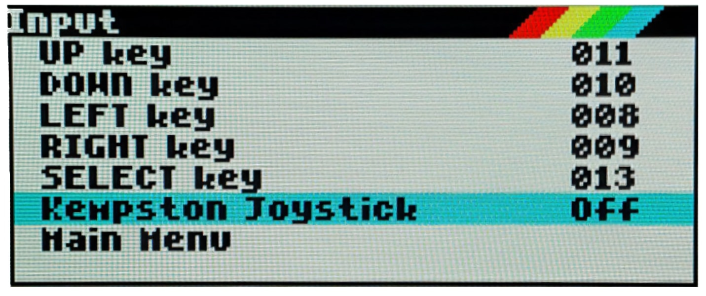 |
Memoria SPI Flash
Hay 27 espacios de 1,2MiB (exactamente 1179648 bytes) disponibles para almacenar cores, estando reservados los primeros espacios para el de ZX Spectrum principal (esto no impide tener más cores de ZX Spectrum en otros espacios además de los primeros).
Los cores oficiales están disponibles para descargar en el repositorio en GitHub.
Para actualizar o instalar un nuevo core en la SPI Flash hay varias alternativas.
La primera forma consiste en obtener la última versión de los ficheros que lo definen. Si el tamaño que ocupa es superior a 1179648 bytes, se tendrá que trocear adecuadamente. Cada uno de los trozos será ahora un fichero de ese tamañp, al que hay que renombrar como COREXXy.ZX3, donde XX siempre es un número de dos digitos. La parte y del nombre se ignora, así que se pueden usar nombres más largos y descriptivos (por ejemplo CORE04_ejemplo_parte1.ZX3).
|
La utilidad de comandos Bit2Bin_zx3, disponible en los repositorios de GitHub de ZXTRES, puede crear trozos adecuados desde un fichero BIT o BIN completo. |
Copiar los ficheros en la raíz de la tarjeta microSD, encender y pulsar F2 para entrar en la BIOS. Elegir Upgrade, seleccionar la fila correspondiente al número de espacio elegido (por ejemplo, la 4), pulsar enter y luego "SD file". El sistema leerá el fichero COREnn… y avisará cuando esté actualizado, aunque antes preguntará el nombre (con el que se verá en la lista para elegir en el arranque y en el listado de la BIOS). Habitualmente, en el caso de cores que ocupan varios espacios se reserva el nombre de core para la primera parte y el resto de partes se registran con un mensaje recordando que no se deben utilizar. Una vez instalado, se podrá utilizar al arrancar, seleccionando siempre el primero de los espacios que use el core.
|
La actualización del core principal de ZX Spectrum es exactamente igual que los otros cores, pero en lugar del fichero |
esxdos
Para actualizar esxdos a una nueva versión, se ha de obtener la distribución desde la página oficial.
Una vez descargado y descomprimido, se ha de copiar, a la raíz de la tarjeta, el contenido de los directorios BIN y SYS sobreescribiendo los existentes (para preservar los comandos exclusivos de ZXTRES).
Copiar ESXMMC.BIN (o ESXMMC.ROM, según la versión) en la raíz de la tarjeta microSD.
Iniciar el ZXTRES con la tarjeta insertada y pulsar F2 para acceder a la configuración de BIOS. Seleccionar el menú Upgrade y elegir "Upgrade esxdos for ZX". En el diálogo que aparece elegir "SD file" y, cuando pregunte "Load from SD" contestar "Yes" a la pregunta "Are you sure?". Se leerá el contenido del fichero ESXDOS…, se grabará en la flash y avisará cuando esté actualizado.
Realizar un Hard-reset, o apagar y encender.
Si todo se ha hecho correctamente, al encender el ZXTRES se verá cómo esxdos detecta la tarjeta y carga los componentes necesarios para funcionar, mostrando la nueva versión en la parte superior.
Memoria Flash
También es posible actualizar la memoria flash de la FPGA. Por el momento desde el menú de la BIOS sólo es posible utilizar imágenes de 16MiB. Para poder usar una imagen de 32MiB, se ha de usar el comando UPGRZX3 de esxdos y un fichero con el nombre FLASH_32.ZX3.
Copiar el archivo de imagen (de 16MiB) FLASH.ZX3 en la raíz de la tarjeta microSD.
Iniciar el ZXTRES con la tarjeta insertada y pulsar F2 para acceder a la configuración de BIOS. Seleccionar el menú Upgrade y elegir "Upgrade flash from SD". En el diálogo que pregunta "Load from SD" contestar "Yes" a la pregunta "Are you sure?". Se leerá el contenido del fichero FLASH…, .
Realizar un Hard-reset, o apagar y encender.
|
Este proceso sustituye todos los cores instalados, la BIOS, así como las ROMs de ZX Spectrum y la configuración por lo que haya en la imagen, y no se puede deshacer. |
Otros cores
Amiga minimig AGA
Commodore Amiga fue un ordenador personal comercializado por Commodore International entre 1985 y 1994. Debido a su precio y sus capacidades multimedia obtuvo una gran popularidad. Su sistema tiene la particularidad que fuese el primer ordenador multitarea y multimedia orientado al gran público.
La versión para ZXTRES está basada en minimig (abreviatura de Mini Amiga), que es una reimplementación de código abierto cuyo autor original es Dennis van Weeren. La variante AGA ha sido actualizada con capacidades de chipset AGA, lo que le permite emular modelos más recientes de Amiga.
Algunas de las características del core son:
-
Salida de vídeo VGA emulando PAL/NTSC
-
Soporte para ratones PS/2
-
Sólo audio Sigma-Delta
-
Variantes de chipset : OCS, ECS, AGA
-
ChipRAM : 0.5MB - 2.0MB, SlowRAM : 0.0MB - 1.5MB y fastRAM : 0,0MB - 24MB
-
CPU : 68000, 68010, 68020
-
Soporte para kickstart : 1.2 - 3.1
-
HRTmon
-
1-4 disquetes con velocidades normal y turbo
-
1-2 imágenes de disco duro
Formato de Tarjeta microSD
Se debe de utilizar una tarjeta microSD, con la primera partición en formato FAT32, para almacenar todos los ficheros necesarios. Para el funcionamiento correcto del core se ha de copiar a la raíz de la tarjeta microSD, al menos, el fichero 832OSDAD.BIN disponible en el repositorio de cores de ZXTRES, junto con un fichero ROM de Kickstart de Amiga, con el nombre KICK.ROM.
Opcionalmente, para que se muestre una animación en el inicio del core, se pueden copiar también a la raíz los ficheros minimig.art,minimig.bal y minimig.cop que se pueden obtener de la página oficial de Minimig AGA para Turbo Chameleon 64.
También es interesante copiar al lugar que se desee de la microSD, los ficheros de imagen de disquete (ADF) o de disco duro virtual de WinUAE (HDF) que se quieran utilizar.
Si no estuviera ya, instalar o ejecutar el core de Amiga (minimig) en el ZXTRES.
Teclado
Teclas especiales y botones
Durante la ejecución del core:
-
F12: mostrar y ocultar el menú de control del core -
Bloq. Num.: Encenter o apagar el uso del teclado numérico como ratón
Guía básica
Al pulsar F12, se mostrará el menú con las distintas opciones del Core. Se puede navegar utilizando las teclas de cursor. Enter selecciona un elemento.
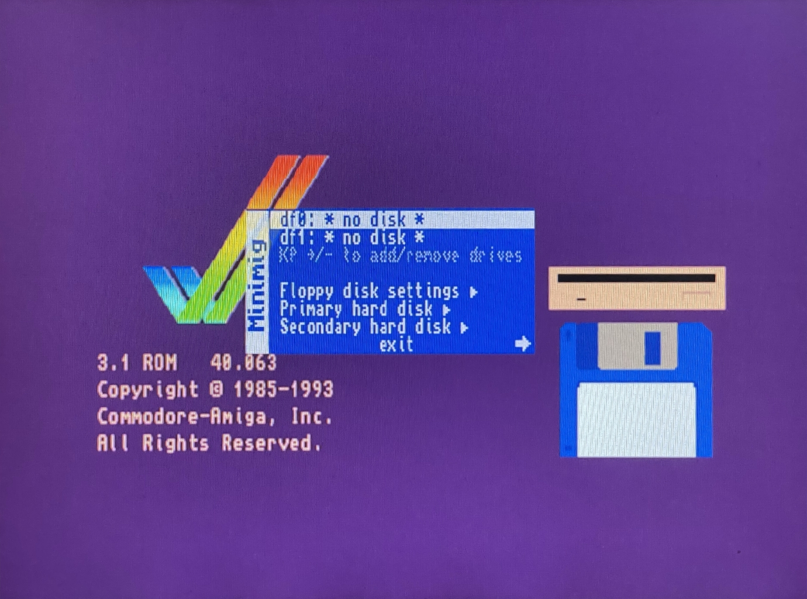
Estas son las principales:
-
df0,df1, etc.: Para seleccionar una imagen de disqueteADF. -
Floppy Disk Settings: Para configurar el número de disqueteras y otras opciones -
Primary Hard Disk: Para poder configurar dónde están los datos del disco primario (normalmente un ficheroHDF) -
Secondary Hard Disk: Para poder configurar dónde están los datos del disco secundario -
Exit: Sale del menú de configuración
Usando las flechas de cursor del teclado se puede acceder a más opciones de configuración:
-
Load Configuration: Para cargar los datos de una configuración -
Save Configuration: Para guardar la configuración actual. Si se hace en el espacio por defecto (default), es la que se utilizará cada vez que se inicie el core -
Chipset Settings: Aquí se puede elegir la CPU, modo turbo, tipo de vídeo (PAL o NTSC), Chipset a simular -
Memory Settings: Para configurar las distintas cantidades de memoria RAM, así como el fichero de ROM a utilizar -
Video Settings: Para activar o desactivar filtros de vídeo, desentrelazado, etc. -
Reset: Reinicia el core con las opciones por defecto -
RebootReinicia el core con la configuración actual
Amstrad CPC 464
El Amstrad CPC 464 fue un ordenador doméstico creado y comercializado por la empresa británica Amstrad Consumer Plc a partir del año 1984.
La versión para ZXTRES ha sido desarrollado por McLeod, partiendo de la versión original para ZX-Uno, principalmente como un ejemplo documentado de cómo portar cores a ZXTRES.
Características del core:
-
Salida de vídeo DisplaPort
-
Salida de vídeo VGA (50 Hz)
-
Salida de vídeo RGB PAL (utilizando el puerto VGA)
-
Soporte para carga desde dispositivos de audio externo
-
64KB de RAM
-
32Kb de ROM
-
Soporte para un mando
-
Chip de sonido AY-3-8912
-
Audio I2S y Sigma-Delta
Formato de Tarjeta microSD
Este core no utiliza la tarjeta SD.
Si no estuviera ya, instalar o ejecutar el core de Amstrad CPC en el ZXTRES.
Teclado
Teclas especiales y botones
Durante la ejecución del core:
-
Supr:CLR. -
Impr. PantoWindows Izquierda:COPY -
Inicio: Scanlines on/off -
Fin: Activa los distintos modos de color monocromo -
Bloq. Despl.: cambia de modo vídeo RGB (PAL) a VGA y viceversa (DisplayPort está siempre activo) -
Ctrl+Alt+Supr: Soft Reset (reinicia el Core) -
Ctrl+Alt+Backspace: Hard reset (reinicia la FPGA). Backspace es la tecla de borrar hacia atrás, encima deEnter
Guía básica
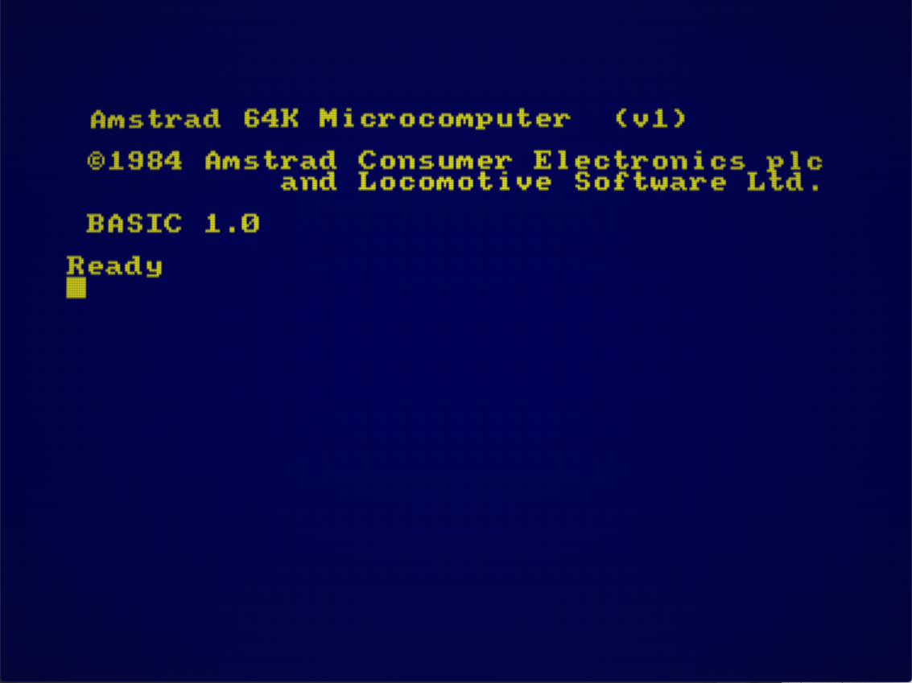
Desde BASIC, se puede cargar desde una cinta (u otro dispositivo externo de audio) con el comando RUN". Al contrario que en la máquina original, durante la reproducción se puede escuchar el audio de la cinta.
Amstrad CPC 6128
El Amstrad CPC 6128 fue el ordenador sucesor del CPC 464. Como novedad, aparte de tener más memoria RAM, incorporaba unidad de disco.
La versión para ZXTRES ha sido desarrollada por MicroJack, partiendo de la versión para ZX-Uno del core de Amstrad CPC 464, creada por McLeod.
Algunas de sus características son:
-
Salida de vídeo VGA
-
Salida de vídeo RGB PAL (utilizando el puerto VGA)
-
Soporte para imágenes de disco desde la microSD
-
Soporte para carga desde dispositivos de audio externo
-
128KB de RAM
-
Soporte para un mando
-
Audio I2S y Sigma-Delta
-
Modo de color y monocromo (fósforo verde)
Formato de Tarjeta microSD
Se debe de utilizar una tarjeta microSD con la primera partición en formato FAT16 o FAT32.
Además son necesarios los ficheros ROM siguientes (se pueden obtener en la wiki oficial de otro proyecto más antiguo o en su repositorio de GitHub:
-
OS6128.ROM -
BASIC1-1.ROM -
AMSDOS.ROM
También es interesante disponer de uno o más ficheros con imágenes de disco (DSK) con el software que se quiera ejecutar.
Copiar los ficheros ROM a un directorio llamado AMSTRAD en la raíz de la tarjeta SD. Copiar también los ficheros DSK al lugar que se desee dentro de la tarjeta.
|
Los tipos de fichero de imágenes de disco soportados son:
Aún no hay soporte para imágenes protegidas contra copia. |
Teclado
Teclas especiales y botones
Durante la ejecución del core:
-
F12mostrar y ocultar el menú de selección de imágenes de disco -
Bloq. Despl.: para cambiar entre modo de vídeo RGB y VGA -
Fin: Alterna entre los modos de color y monocromo fósforo verde -
Ctrl+Alt+Supr: Soft Reset (reinicia el Core) -
Ctrl+Alt+Backspace: Hard reset (reinicia la FPGA). Backspace es la tecla de borrar hacia atrás, encima deEnter
Guía básica
Al pulsar F12, se mostrará el menú que permite asignar ficheros DSK a las unidades de disco. Se puede navegar utilizando las teclas de cursor. Enter selecciona un elemento.
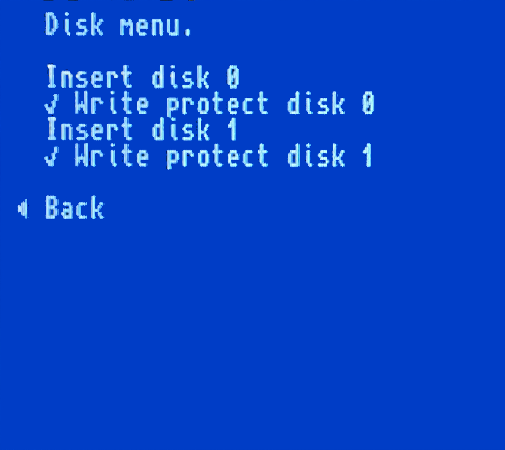
Una vez seleccionada una imagen, escribir el comando CAT para ver el contenido del fichero DSK cargado actualmente.
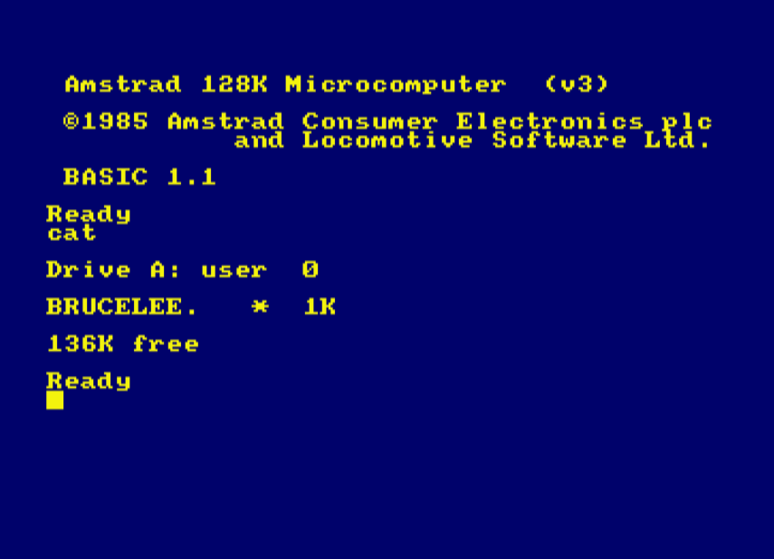
Escribir el comando RUN"<nombre> para cargar un programa del disco
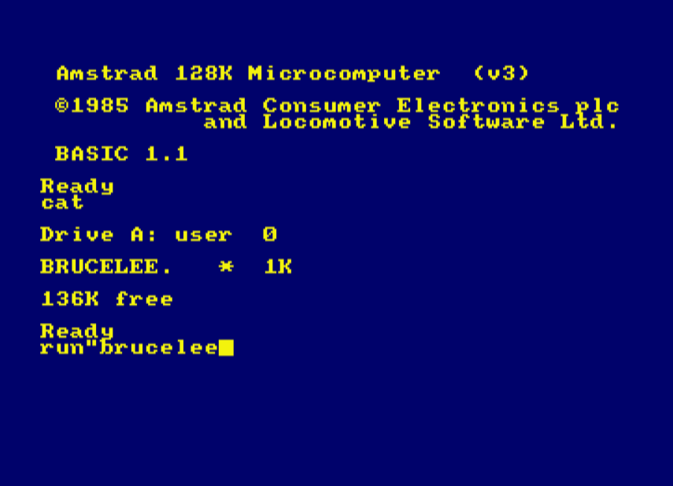
Usar los comandos |b y |a para seleccionar las unidades de disco B: y A: respectivamente (el símbolo | se obtiene pulsando Mayúsculas y la tecla situada a la derecha de la P).
También es posible cargar desde una cinta (u otro dispositivo externo de audio) escribiendo primero el comando |TAP. A continuación, usar el comando RUN" para comenzar la carga.
Arcade (1942)
1942 es un videojuego, lanzado para máquinas recreativas en 1984.
La versión para ZXTRES ha sido desarrollada por somhic, adaptando de la ttps://github.com/jotego/jtcores/tree/master/cores/1942[versión original de Jotego].
Algunas de sus características son:
-
Salida de vídeo VGA
-
Salida de vídeo RGB (utilizando el puerto VGA)
-
Soporte de mando real y mando emulado en teclado
Formato de Tarjeta microSD
El core necesita para funcionar ficheros con las imagenes ROM de los chips de la maquina arcade original, agregados dentro de un unico fichero .ROM, junto con un fichero .ARC que contiene el nombre del fichero ROM a cargar, así como la configuración de los interruptores DIP de la maquina original.
Tanto los ficheros ROM como los ficheros ARC se pueden crear utilizando MRA Tool, tomando como referencia los ficheros MRA disponibles en el repositorio del core original.
Los ficheros ARC y ROM se pueden alojar en cualquier lugar de la tarjeta microSD, pero si se crea un directorio JOTEGO en la raíz, y se deja el fichero ARC con el nombre JT1942.ARC, junto con el fichero ROM correspondiente, ambos se cargarán de forma automática al inicio del core.
|
El core se inicia por defecto utilizando la salida VGA. Si se desea que sea la salida RGB a 15KHz, se ha de crear en la raíz de la tarjeta un fichero con el nombre |
Teclado
Teclas especiales y botones
-
F12mostrar el menú de control del core -
Cursor o el mando 1: Controles de dirección del jugador uno
-
Ctrlo botón A del mando 1: Botón del jugador uno -
R,F,G,Do mando 2: Movimiento del jugador dos -
Ao botón A del mando 2: Botón del jugador dos -
1y2: Iniciar partida jugador 1 o jugador 2 -
5y6: Insertar una moneda -
F12(pulsación larga): Alterna entre el modo RGB y VGA
Guía básica
Al pulsar F12, se mostrará el menú con las distintas opciones del Core. Se puede navegar utilizando las teclas de cursor o un mando. Enter o el botón B del mando selecciona un elemento.
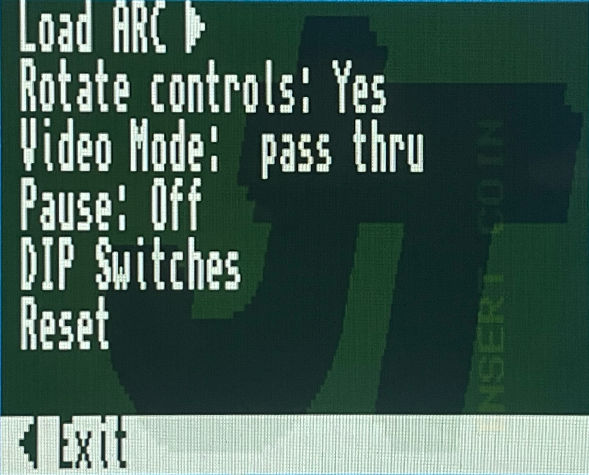
Estas son las principales:
-
Load ARC: Para cargar desde la tarjeta microSD un fichero .ARC -
Video Mode: Sólo en el caso de salida de vídeo VGA, para aplicar distintos filtros a la imagen -
Pause: Para detener el core -
DIP Switches: Accede a ver y modificar el estado de los interruptores DIP que haya definidos en el fichero ARC -
Reset: Soft Reset (reinicia el Core) -
Exit: Cierra el menú de opciones
Arcade (Atari Tetris)
La máquina recreativa de Tetris, licenciada y distribuida por Atari, en 1988.
La versión para ZXTRES ha sido desarrollada por somhic, adaptando la versión original para MiSTer.
Algunas de sus características son:
-
Salida de vídeo VGA
-
Salida de vídeo RGB (utilizando el puerto VGA)
-
Soporte de mando real y mando emulado en teclado
Formato de Tarjeta microSD
El core necesita para funcionar ficheros con las imagenes ROM de los chips de la maquina arcade original, agregados dentro de un unico fichero .ROM, junto con un fichero .ARC que contiene el nombre del fichero ROM a cargar, así como la configuración de los interruptores DIP de la maquina original.
Tanto los ficheros ROM como los ficheros ARC se pueden crear utilizando MRA Tool, tomando como referencia los ficheros MRA disponibles en el repositorio del core original.
Los ficheros ARC y ROM se pueden alojar en cualquier lugar de la tarjeta microSD, pero si se crea un directorio JOTEGO en la raíz, y se deja el fichero ARC con el nombre TETRIS.ARC, junto con el fichero ROM correspondiente, ambos se cargarán de forma automática al inicio del core.
|
El core se inicia por defecto utilizando la salida VGA. Si se desea que sea la salida RGB a 15KHz, se ha de crear en la raíz de la tarjeta un fichero con el nombre |
Teclado
Teclas especiales y botones
-
F12mostrar el menú de control del core -
Cursor o el mando 1: Controles de dirección del jugador uno
-
Ctrlo botón A del mando 1: Botón del jugador uno -
R,F,G,Do mando 2: Movimiento del jugador dos -
Ao botón A del mando 2: Botón del jugador dos -
1y2: Iniciar partida jugador 1 o jugador 2 -
5y6: Insertar una moneda -
F12(pulsación larga): Alterna entre el modo RGB y VGA
Guía básica
Al pulsar F12, se mostrará el menú con las distintas opciones del Core. Se puede navegar utilizando las teclas de cursor o un mando. Enter o el botón B del mando selecciona un elemento.
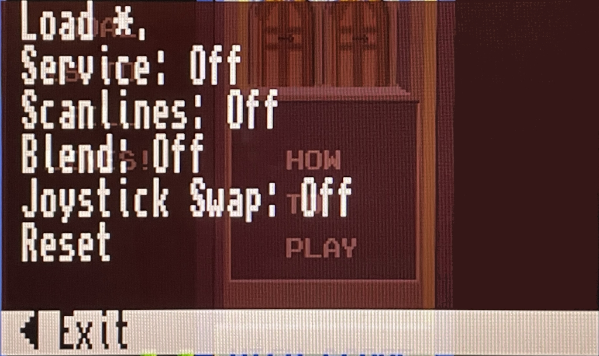
Estas son las principales:
-
Load *.: Para cargar desde la tarjeta microSD un fichero .ARC -
Service: Activa o desactiva el modo de mantenimiento -
Scanlines: Sólo en el caso de salida de vídeo VGA, para configurar líneas de exploración (scanlines) -
Blend: Para aplicar un filtro que suaviza la imagen -
Joystick swap: Permite intercambiar el orden de los mandos conectados -
Reset: Soft Reset (reinicia el Core) -
Exit: Cierra el menú de opciones
Arcade (Capcom Play System 1)
CP System, CPS-1, o Capcom Play System 1 es una placa arcade hecha por Capcom, que se utilizó para múltiples máquinas recreativas.
La versión para ZXTRES ha sido desarrollada por somhic, adaptando de la versión original de Jotego.
Algunas de sus características son:
-
Salida de vídeo VGA
-
Salida de vídeo RGB (utilizando el puerto VGA)
-
Soporte de mando real y mando emulado en teclado
Formato de Tarjeta microSD
El core necesita para funcionar unos ficheros con las imagenes ROM de los chips de la maquina arcade original, agregados dentro de un unico fichero .ROM, junto con, al menos, un fichero .ARC que contiene el nombre del fichero ROM a cargar, así como la configuración de los interruptores DIP de la maquina original.
Tanto los ficheros ROM como los ficheros ARC se pueden crear utilizando MRA Tool, tomando como referencia los ficheros MRA disponibles en el repositorio del creador del core original.
Los ficheros ARC y ROM se pueden alojar en cualquier lugar de la tarjeta microSD.
|
El core se inicia por defecto utilizando la salida VGA. Si se desea que sea la salida RGB a 15KHz, se ha de crear en la raíz de la tarjeta un fichero con el nombre |
Teclado
Teclas especiales y botones
-
F12mostrar el menú de control del core -
Cursor o el mando 1: Controles de dirección del jugador uno
-
Ctrl,AltyEspacioo botones A, B, C el mando 1: Botones 1, 2 y 3 del jugador uno -
Z,X,Co botones X, Y, Z del mando 1: Botones 4, 5, 6 del jugador uno -
R,F,G,Do mando 2: Movimiento del jugador dos -
A,SyQo botones A, B, C del mando 2: Botones 1, 2 y 3 del jugador dos -
W,I,Ko botones X, Y, Z del mando 2: Botones 4, 5, 6 del jugador dos -
1y2: para iniciar partida jugador 1 o jugador 2 -
5y6para insertar una moneda -
P : Pausa -
F3: Soft Reset (reinicia el Core) -
F12(pulsación larga): Alterna entre el modo RGB y VGA
Guía básica
Al pulsar F12, se mostrará el menú con las distintas opciones del Core. Se puede navegar utilizando las teclas de cursor o un mando. Enter o el botón B del mando selecciona un elemento.
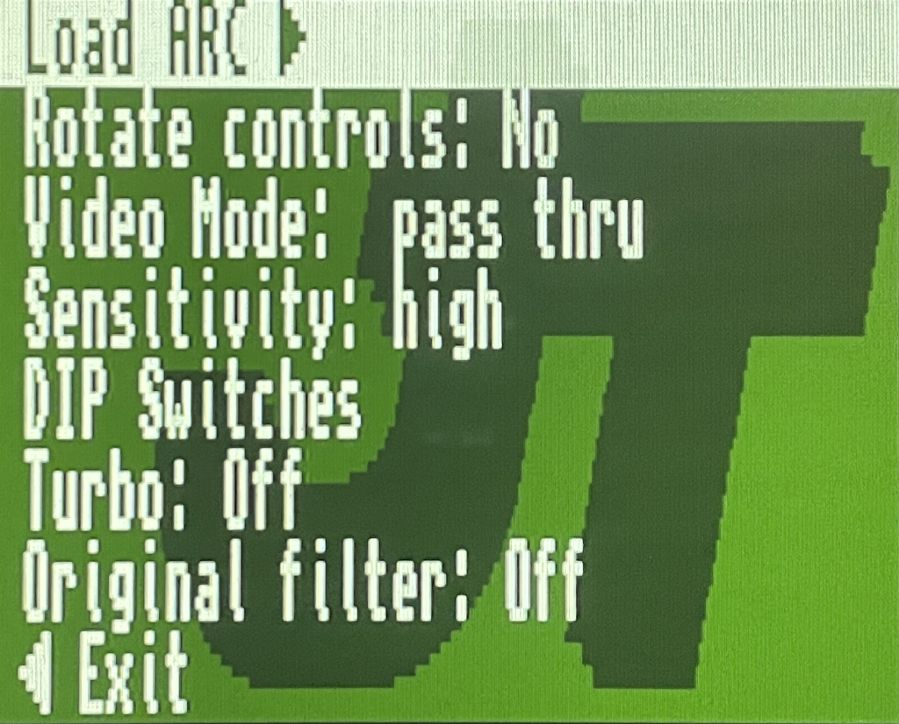
Estas son las principales:
-
Load ARC: Para cargar desde la tarjeta microSD un fichero .ARC -
Rotate Controls: Para girar el texto del menú de opciones, así como el comportamiento de los controles de dirección -
Video Mode: Sólo en el caso de salida de vídeo VGA, para aplicar distintos filtros a la imagen -
Sensitivity: Ajusta la sensibilidad -
DIP Switches: Accede a ver y modificar el estado de los interruptores DIP que haya definidos en el fichero ARC -
Turbo: Activa o desactiva el modo turbo -
Original Filter: Aplica (si estuviera definido) el filtro original de las ROMs en uso en ese momento -
Reset: Soft Reset (reinicia el Core) -
Exit: Cierra el menú de opciones
Arcade (Capcom Play System 1.5)
Capcom Play System 1.5 o CP System Dash es una revisión mejorada de CPS-1.
La versión para ZXTRES ha sido desarrollada por somhic, adaptando de la versión original de Jotego.
Algunas de sus características son:
-
Salida de vídeo VGA
-
Salida de vídeo RGB (utilizando el puerto VGA)
-
Soporte de mando real y mando emulado en teclado
Formato de Tarjeta microSD
El core necesita para funcionar unos ficheros con las imagenes ROM de los chips de la maquina arcade original, agregados dentro de un unico fichero .ROM, junto con, al menos, un fichero .ARC que contiene el nombre del fichero ROM a cargar, así como la configuración de los interruptores DIP de la maquina original.
Tanto los ficheros ROM como los ficheros ARC se pueden crear utilizando MRA Tool, tomando como referencia los ficheros MRA disponibles en el repositorio del creador del core original.
Los ficheros ARC y ROM se pueden alojar en cualquier lugar de la tarjeta microSD.
|
El core se inicia por defecto utilizando la salida VGA. Si se desea que sea la salida RGB a 15KHz, se ha de crear en la raíz de la tarjeta un fichero con el nombre |
Teclado
Teclas especiales y botones
-
F12mostrar el menú de control del core -
Cursor o el mando 1: Controles de dirección del jugador uno
-
Ctrl,AltyEspacioo botones A, B, C el mando 1: Botones 1, 2 y 3 del jugador uno -
Z,X,Co botones X, Y, Z del mando 1: Botones 4, 5, 6 del jugador uno -
R,F,G,Do mando 2: Movimiento del jugador dos -
A,SyQo botones A, B, C del mando 2: Botones 1, 2 y 3 del jugador dos -
W,I,Ko botones X, Y, Z del mando 2: Botones 4, 5, 6 del jugador dos -
1y2: para iniciar partida jugador 1 o jugador 2 -
5y6para insertar una moneda -
P : Pausa -
F3: Soft Reset (reinicia el Core) -
F12(pulsación larga): Alterna entre el modo RGB y VGA
Guía básica
Al pulsar F12, se mostrará el menú con las distintas opciones del Core. Se puede navegar utilizando las teclas de cursor o un mando. Enter o el botón B del mando selecciona un elemento.
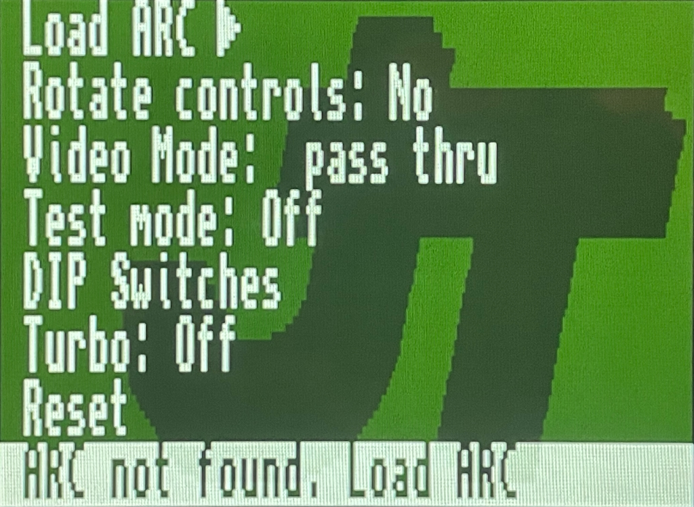
Estas son las principales:
-
Load ARC: Para cargar desde la tarjeta microSD un fichero .ARC -
Rotate Controls: Para girar el texto del menú de opciones, así como el comportamiento de los controles de dirección -
Video Mode: Sólo en el caso de salida de vídeo VGA, para aplicar distintos filtros a la imagen -
Test Mode: Activa o deactiva el modo de prueba -
DIP Switches: Accede a ver y modificar el estado de los interruptores DIP que haya definidos en el fichero ARC -
Turbo: Activa o desactiva el modo turbo -
Reset: Soft Reset (reinicia el Core) -
Exit: Cierra el menú de opciones
Arcade (Double Dragon)
Double Dragon es un videojuego lanzado para máquinas recreativas en 1987, desarrollado por Technos Japan.
La versión para ZXTRES ha sido desarrollada por somhic, adaptando la versión original de Jotego.
Algunas de sus características son:
-
Salida de vídeo VGA
-
Salida de vídeo RGB (utilizando el puerto VGA)
-
Soporte de mando real y mando emulado en teclado
Formato de Tarjeta microSD
El core necesita para funcionar ficheros con las imagenes ROM de los chips de la maquina arcade original, agregados dentro de un unico fichero .ROM, junto con un fichero .ARC que contiene el nombre del fichero ROM a cargar, así como la configuración de los interruptores DIP de la maquina original.
Tanto los ficheros ROM como los ficheros ARC se pueden crear utilizando MRA Tool, tomando como referencia los ficheros MRA disponibles en el repositorio del creador del core original.
Los ficheros ARC y ROM se pueden alojar en cualquier lugar de la tarjeta microSD, pero si se crea un directorio JOTEGO en la raíz, y se deja el fichero ARC con el nombre JTDD.ARC, junto con el fichero ROM correspondiente, ambos se cargarán de forma automática al inicio del core.
|
El core se inicia por defecto utilizando la salida VGA. Si se desea que sea la salida RGB a 15KHz, se ha de crear en la raíz de la tarjeta un fichero con el nombre |
Teclado
Teclas especiales y botones
-
F12mostrar el menú de control del core -
Cursor o el mando 1: Controles de dirección del jugador uno
-
Ctrl,AltyEspacioo botones A, B, C del mando 1: Botones 1, 2 y 3 del jugador uno -
R,F,G,Do mando 2: Movimiento del jugador dos -
A,SyQo botones A, B, C del mando 2: Botones 1, 2 y 3 del jugador dos -
1y2: Iniciar partida jugador 1 o jugador 2 -
5y6: Insertar una moneda -
P : Pausa -
F3: Soft Reset (reinicia el Core) -
F12(pulsación larga): Alterna entre el modo RGB y VGA
Guía básica
Al pulsar F12, se mostrará el menú con las distintas opciones del Core. Se puede navegar utilizando las teclas de cursor o un mando. Enter o el botón B del mando selecciona un elemento.
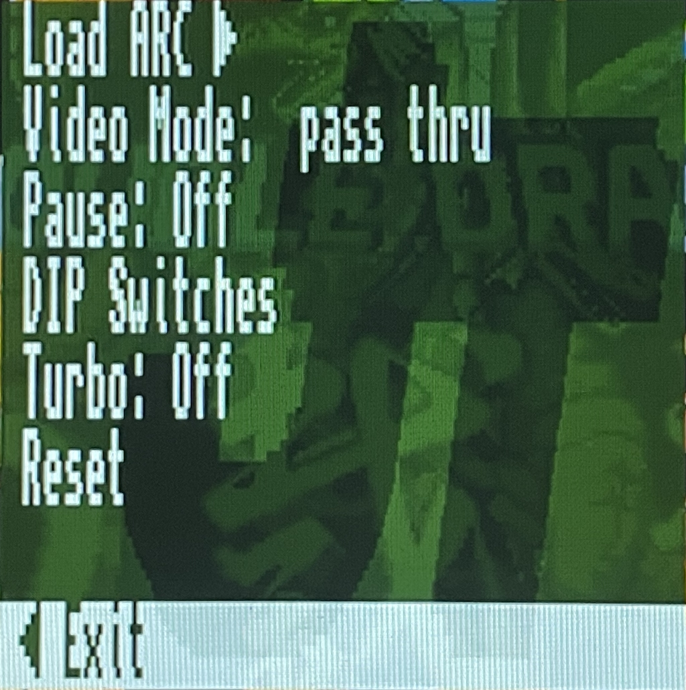
Estas son las principales:
-
Load ARC: Para cargar desde la tarjeta microSD un fichero .ARC -
Video Mode: Sólo en el caso de salida de vídeo VGA, para aplicar distintos filtros a la imagen -
Pause: Para detener el core -
DIP Switches: Accede a ver y modificar el estado de los interruptores DIP que haya definidos en el fichero ARC -
Turbo: Activa o desactiva el modo turbo -
Reset: Soft Reset (reinicia el Core) -
Exit: Cierra el menú de opciones
Arcade (Kicker)
Kicker (o Shao-lin’s Road) es un videojuego lanzado para máquinas recreativas en 1985, por Konami.
La versión para ZXTRES ha sido desarrollada por somhic, adaptando la versión original de Jotego.
Algunas de sus características son:
-
La salida de vídeo mantiene la rotación del original
-
Salida de vídeo VGA
-
Salida de vídeo RGB (utilizando el puerto VGA)
-
Soporte de mando real y mando emulado en teclado
Formato de Tarjeta microSD
El core necesita para funcionar ficheros con las imagenes ROM de los chips de la maquina arcade original, agregados dentro de un unico fichero .ROM, junto con un fichero .ARC que contiene el nombre del fichero ROM a cargar, así como la configuración de los interruptores DIP de la maquina original.
Tanto los ficheros ROM como los ficheros ARC se pueden crear utilizando MRA Tool, tomando como referencia los ficheros MRA disponibles en el repositorio del creador del core original.
Los ficheros ARC y ROM se pueden alojar en cualquier lugar de la tarjeta microSD, pero si se crea un directorio JOTEGO en la raíz, y se deja el fichero ARC con el nombre KICKER.ARC, junto con el fichero ROM correspondiente, ambos se cargarán de forma automática al inicio del core.
|
El core se inicia por defecto utilizando la salida VGA. Si se desea que sea la salida RGB a 15KHz, se ha de crear en la raíz de la tarjeta un fichero con el nombre |
Teclado
Teclas especiales y botones
-
F12mostrar el menú de control del core -
Cursor o el mando 1: Controles de dirección
-
Ctrl,AltyEspacioo botones A, B, C del mando 1: Botones 1, 2 y 3 -
1y2: Iniciar partida de 1 o 2 jugadores -
5y6: Insertar una moneda -
P : Pausa -
F3: Soft Reset (reinicia el Core) -
F12(pulsación larga): Alterna entre el modo RGB y VGA
Guía básica
Al pulsar F12, se mostrará el menú con las distintas opciones del Core. Se puede navegar utilizando las teclas de cursor o un mando. Enter o el botón B del mando selecciona un elemento.
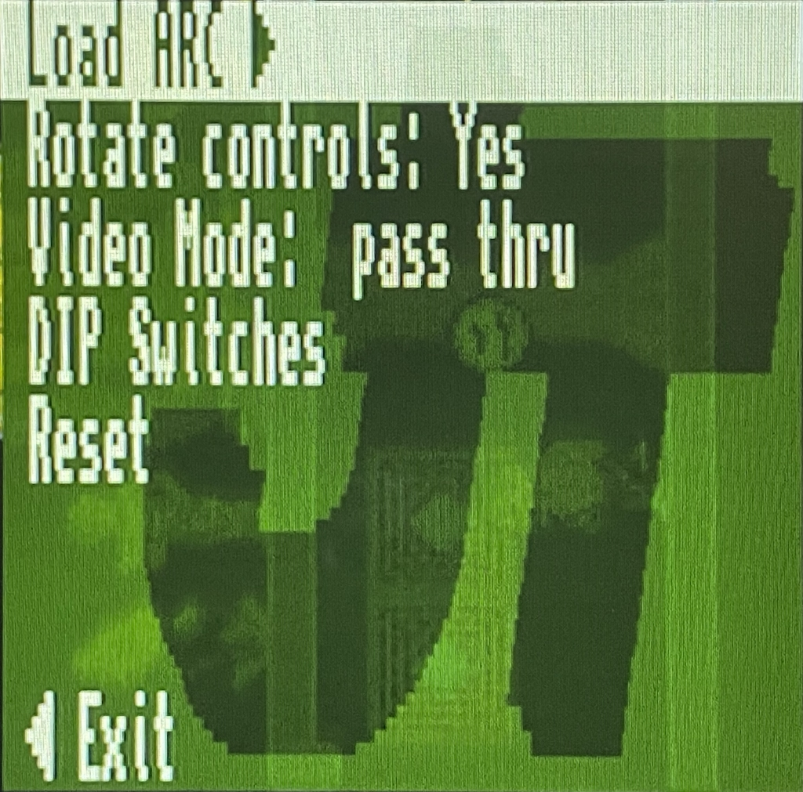
Estas son las principales:
-
Load ARC: Para cargar desde la tarjeta microSD un fichero .ARC -
Rotate Controls: Para girar el texto del menú de opciones, así como el comportamiento de los controles de dirección -
Video Mode: Sólo en el caso de salida de vídeo VGA, para aplicar distintos filtros a la imagen -
DIP Switches: Accede a ver y modificar el estado de los interruptores DIP que haya definidos en el fichero ARC -
Reset: Soft Reset (reinicia el Core) -
Exit: Cierra el menú de opciones
Arcade (Out Run)
Out Run es un videojuego de carreras publicado inicialmente para máquinas recreativas en 1986.
La versión para ZXTRES ha sido desarrollada por somhic, adaptando la versión original de Jotego.
Algunas de sus características son:
-
Salida de vídeo VGA
-
Salida de vídeo RGB (utilizando el puerto VGA)
-
Soporte de mando real y mando emulado en teclado
Formato de Tarjeta microSD
El core necesita para funcionar ficheros con las imagenes ROM de los chips de la maquina arcade original, agregados dentro de un unico fichero .ROM, junto con un fichero .ARC que contiene el nombre del fichero ROM a cargar, así como la configuración de los interruptores DIP de la maquina original.
Tanto los ficheros ROM como los ficheros ARC se pueden crear utilizando MRA Tool, tomando como referencia los ficheros MRA disponibles en el repositorio del creador del core original.
Los ficheros ARC y ROM se pueden alojar en cualquier lugar de la tarjeta microSD, pero si se crea un directorio JOTEGO en la raíz, y se deja el fichero ARC con el nombre JTOUTRUN.ARC, junto con el fichero ROM correspondiente, ambos se cargarán de forma automática al inicio del core.
|
El core se inicia por defecto utilizando la salida VGA. Si se desea que sea la salida RGB a 15KHz, se ha de crear en la raíz de la tarjeta un fichero con el nombre |
Teclado
Teclas especiales y botones
-
F12mostrar el menú de control del core -
Cursor o el mando 1: Controles de dirección
-
Ctrl, o el botón A del mando 1: Acelerador -
Alt, o el botón B del mando 1: Freno -
Espacioo el botón C del mando 1: Marcha baja -
1o el botón Y del mando 1: comienzo de partida -
5o el botón X del mando 1 para insertar una moneda -
F3: Soft Reset (reinicia el Core) -
F12(pulsación larga): Alterna entre el modo RGB y VGA
|
El cambio de marcha siempre se encuentra en la posición alta y, para cambiar a la posición baja, se debe mantener pulsado el botón correspondiente. En cuanto este se deja de pulsar, se vuelve de nuevo automáticamente a la posición alta. |
Guía básica
Al pulsar F12, se mostrará el menú con las distintas opciones del Core. Se puede navegar utilizando las teclas de cursor o un mando. Enter o el botón B del mando selecciona un elemento.
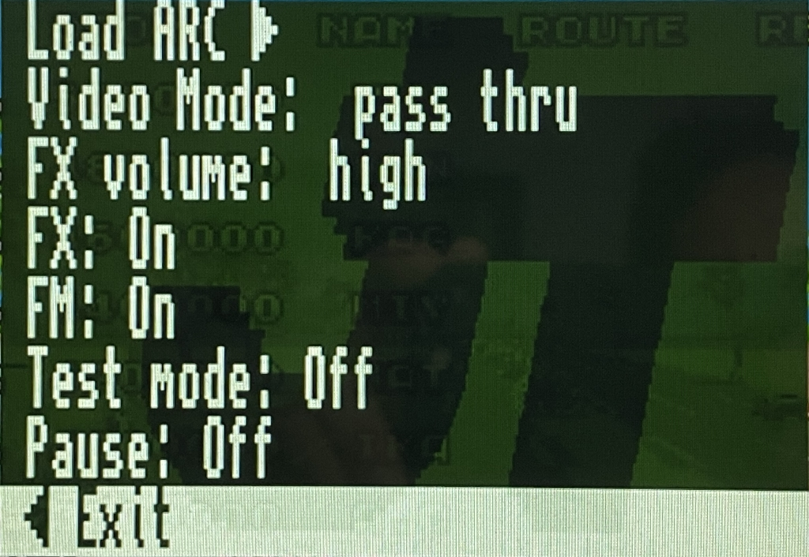
Estas son las principales:
-
Load ARC: Para cargar desde la tarjeta microSD un fichero .ARC -
Video Mode: Sólo en el caso de salida de vídeo VGA, para aplicar distintos filtros a la imagen -
FX Volume: Volumen de los efectos de sonido -
FX: Activar o desactivar efectos de sonido -
FM: Activar o desactivar efectos de sonido FM -
Test Mode: Activa o desactiva el modo de prueba -
Pause: Activa o desactiva la pausa -
DIP Switches: Accede a ver y modificar el estado de los interruptores DIP que haya definidos en el fichero ARC -
Reset: Soft Reset (reinicia el Core) -
Exit: Cierra el menú de opciones
Arcade (Pang)
La versión arcade de Pang, conocida como Pang! y Pomping World es un juego de uno o dos jugadores diseñado por Mitchell Corporation en 1989.
La versión para ZXTRES ha sido desarrollada por somhic, adaptando la versión original de Jotego.
Algunas de sus características son:
-
Salida de vídeo VGA
-
Salida de vídeo RGB (utilizando el puerto VGA)
-
Soporte de mando real y mando emulado en teclado
Formato de Tarjeta microSD
El core necesita para funcionar ficheros con las imagenes ROM de los chips de la maquina arcade original, agregados dentro de un unico fichero .ROM, junto con un fichero .ARC que contiene el nombre del fichero ROM a cargar, así como la configuración de los interruptores DIP de la maquina original.
Tanto los ficheros ROM como los ficheros ARC se pueden crear utilizando MRA Tool, tomando como referencia los ficheros MRA disponibles en el repositorio del creador del core original.
Los ficheros ARC y ROM se pueden alojar en cualquier lugar de la tarjeta microSD, pero si se crea un directorio JOTEGO en la raíz, y se deja el fichero ARC con el nombre JTPANG.ARC, junto con el fichero ROM correspondiente, ambos se cargarán de forma automática al inicio del core.
|
El core se inicia por defecto utilizando la salida VGA. Si se desea que sea la salida RGB a 15KHz, se ha de crear en la raíz de la tarjeta un fichero con el nombre |
Teclado
Teclas especiales y botones
-
F12mostrar el menú de control del core -
Cursor o el mando 1: Controles de dirección del jugador uno
-
Ctrl, o el botón A del mando 1: botón del jugador uno -
I,J,K,Lo mando 2: Movimiento del jugador dos -
Ao el botón A del mando 2: botón del jugador dos -
1y2: para partida de 1 o 2 jugadores -
5para insertar una moneda -
F3: Soft Reset (reinicia el Core) -
F12(pulsación larga): Alterna entre el modo RGB y VGA
Guía básica
Al pulsar F12, se mostrará el menú con las distintas opciones del Core. Se puede navegar utilizando las teclas de cursor o un mando. Enter o el botón B del mando selecciona un elemento.
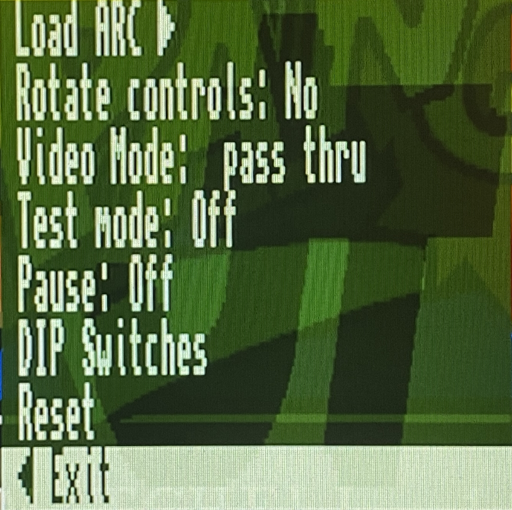
Estas son las principales:
-
Load ARC: Para cargar desde la tarjeta microSD un fichero .ARC -
Rotate Controls: Para girar el comportamiento de los controles de dirección -
Video Mode: Sólo en el caso de salida de vídeo VGA, para aplicar distintos filtros a la imagen -
Test Mode: Activa o desactiva el modo de prueba -
Pause: Activa o desactiva la pausa -
DIP Switches: Accede a ver y modificar el estado de los interruptores DIP que haya definidos en el fichero ARC -
Reset: Soft Reset (reinicia el Core) -
Exit: Cierra el menú de opciones
Arcade (Sega System 16B)
La Sega System 16B es la segunda variante de una placa de arcade lanzada en 1985 por Sega.
La versión para ZXTRES ha sido desarrollada por somhic, adaptando la versión original de Jotego.
Algunas de sus características son:
-
Salida de vídeo VGA
-
Salida de vídeo RGB (utilizando el puerto VGA)
-
Soporte de mando real y mando emulado en teclado
Formato de Tarjeta microSD
El core necesita para funcionar ficheros con las imagenes ROM de los chips de la maquina arcade original, agregados dentro de un unico fichero .ROM, junto con un fichero .ARC que contiene el nombre del fichero ROM a cargar, así como la configuración de los interruptores DIP de la maquina original.
Tanto los ficheros ROM como los ficheros ARC se pueden crear utilizando MRA Tool, tomando como referencia los ficheros MRA disponibles en el repositorio del creador del core original.
Los ficheros ARC y ROM se pueden alojar en cualquier lugar de la tarjeta microSD.
|
El core se inicia por defecto utilizando la salida VGA. Si se desea que sea la salida RGB a 15KHz, se ha de crear en la raíz de la tarjeta un fichero con el nombre |
Teclado
Teclas especiales y botones
-
F12mostrar el menú de control del core -
Cursor o el mando 1: Controles de dirección del jugador uno
-
Ctrl,AltyEspacioo botones A, B, C del mando 1: Botones 1, 2 y 3 del jugador uno -
R,F,G,Do mando 2: Movimiento del jugador dos -
A,SyQo botones A, B, C del mando 2: Botones 1, 2 y 3 del jugador dos -
1y2: Iniciar partida jugador 1 o jugador 2 -
5y6: Insertar una moneda -
P : Pausa -
F3: Soft Reset (reinicia el Core) -
F12(pulsación larga): Alterna entre el modo RGB y VGA
Guía básica
Al pulsar F12, se mostrará el menú con las distintas opciones del Core. Se puede navegar utilizando las teclas de cursor o un mando. Enter o el botón B del mando selecciona un elemento.
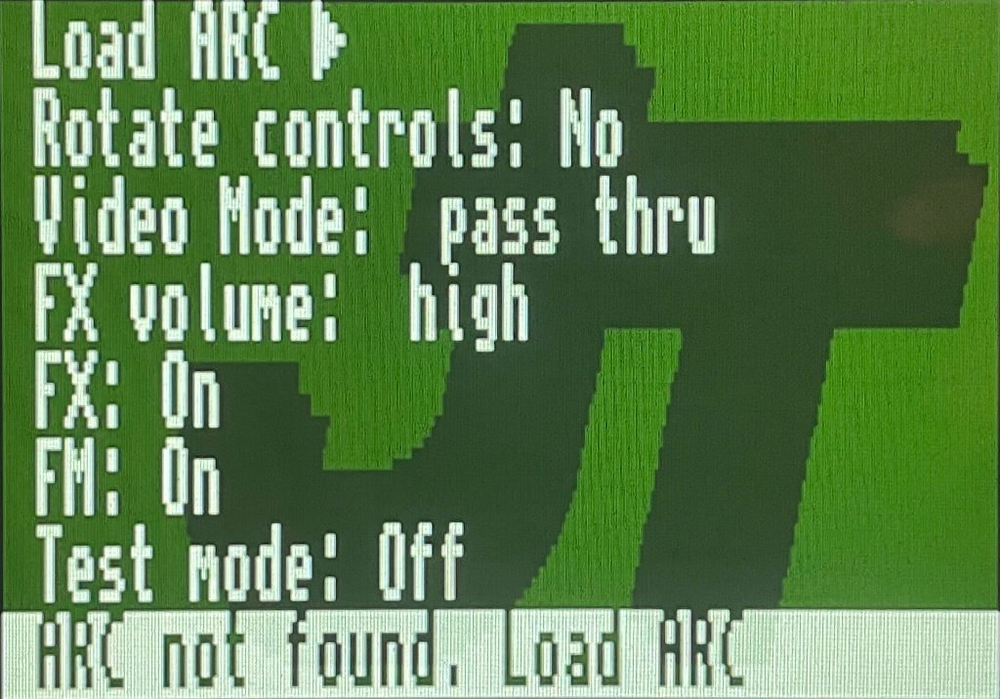
Estas son las principales:
-
Load ARC: Para cargar desde la tarjeta microSD un fichero .ARC -
Rotate Controls: Para girar el comportamiento de los controles de dirección -
Video Mode: Sólo en el caso de salida de vídeo VGA, para aplicar distintos filtros a la imagen -
FX Volume: Volumen de los efectos de sonido -
FX: Activar o desactivar efectos de sonido -
FM: Activar o desactivar efectos de sonido FM -
Test Mode: Activa o desactiva el modo de prueba -
Pause: Activa o desactiva la pausa -
DIP Switches: Accede a ver y modificar el estado de los interruptores DIP que haya definidos en el fichero ARC -
Reset: Soft Reset (reinicia el Core) -
Exit: Cierra el menú de opciones
Atari 2600
La Atari 2600 es una videoconsola lanzada al mercado bajo el nombre de Atari VCS (Video Computer System).
La versión para ZXTRES está desarrollada por avlixa.
Algunas de las características del core son:
-
Salida de vídeo VGA
-
Salida de vídeo RGB (utilizando el puerto VGA)
-
Compatible con joystick(s), teclado y ratón
-
Sólo audio Sigma-Delta
Formato de Tarjeta microSD
Se debe de utilizar una tarjeta microSD, con la primera partición en formato FAT16 o FAT32, para almacenar los ficheros con las imágenes ROM que se deseen cargar.
Si no estuviera ya, instalar o ejecutar el core de Atari 2600 en el ZXTRES.
Teclado
Teclas especiales y botones
Durante la ejecución del core:
-
Escmostrar el menú de control del core -
W,A,S,Do el joystick 1: Controles de dirección del jugador 1 -
Fo el botón de disparo del joystick 1: Disparo del jugador 1 -
I,J,K,Lo el joystick 2: Controles de dirección del jugador 2 -
Ho el botón de disparo del joystick 2: Disparo del jugador 2 -
Bloq. Despl.: para cambiar entre modo de vídeo RGB y VGA -
Ctrl+Alt+Backspace: Hard reset.
Guía básica
Pulsando Esc o el botón B del joystick se muestra el menú de configuración. Se usan las teclas de cursor y Enter para elegir y seleccionar en el menú.
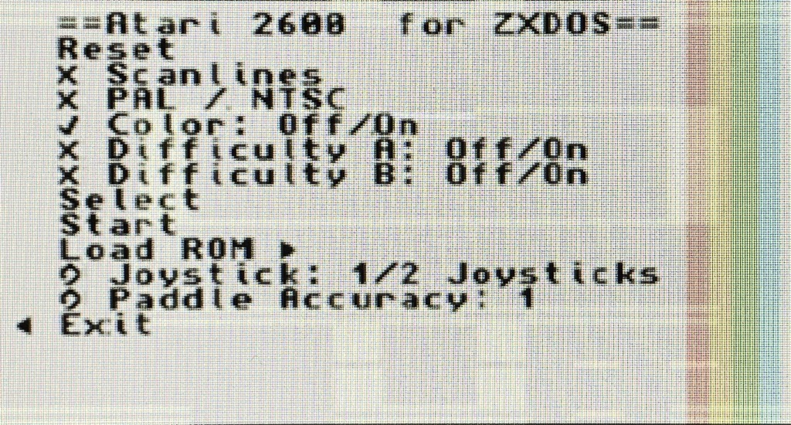
En él se pueden activar, desactivar o configurar las siguientes opciones:
-
Reiniciar el core (Reset)
-
Línea de exploración (Scanlines)
-
Modo RGB (PAL/NTSC)
-
Color (Color)
-
Dificultad A (Difficulty A)
-
Dificultad B (Difficulty B)
-
Select
-
Start
-
Cargar ROM (Load ROM)
-
Joystick
-
Precisión de paddle (Paddle Accuracy)
-
Salir del menú (Exit)
ColecoVision
ColecoVision es una consola de videojuegos lanzada al mercado por la empresa Coleco.
La versión para ZXTRES está basada en la versión para ZX-Uno de Fabio Belavenuto.
Algunas de las características del core son:
-
La ROM de la BIOS se carga desde la tarjeta microSD
-
Soporta ROM multicartucho, que también se carga desde la microSD
-
Salida de vídeo VGA
-
Sólo audio Sigma-Delta
Formato de Tarjeta microSD
Se debe de utilizar una tarjeta microSD, con la primera partición en formato FAT16 o FAT32, para almacenar los ficheros con las imágenes ROM y otros archivos necesarios. Los archivos se pueden descargar desde la web del proyecto original en GitHub.
Una vez copiados los ficheros en la tarjeta, se necesita además el fichero MULTCART.ROM que se puede obtener en https://t.me/zxtresfpga
Si no estuviera ya, instalar o ejecutar el core de ColecoVision en el ZXTRES.
Teclado
Teclas especiales y botones
Durante la ejecución del core:
-
Cursor o
Q,A,E,Ro el mando 1: Controles de dirección del jugador 1 -
Zo el botónAdel mando 1: Botón de disparo 1 del jugador 1 -
U,J,O,Po el mando 2: Controles de dirección del jugador 2 -
Mo el botónAdel mando 2: Botón de disparo 1 del jugador 2 -
Xo el botónBdel mando 1: Botón de disparo 2 del jugador 1 y del jugador 2 -
0a9: Botones del 0 al 9 del jugador 1 y el jugador 2 -
T: Botón '*' -
Y: Botón '#' -
Esc: Soft Reset (reinicia el Core).
Guía básica
Al iniciar, la ROM de la BIOS se carga desde la tarjeta microSD, así como la ROM multicartucho.
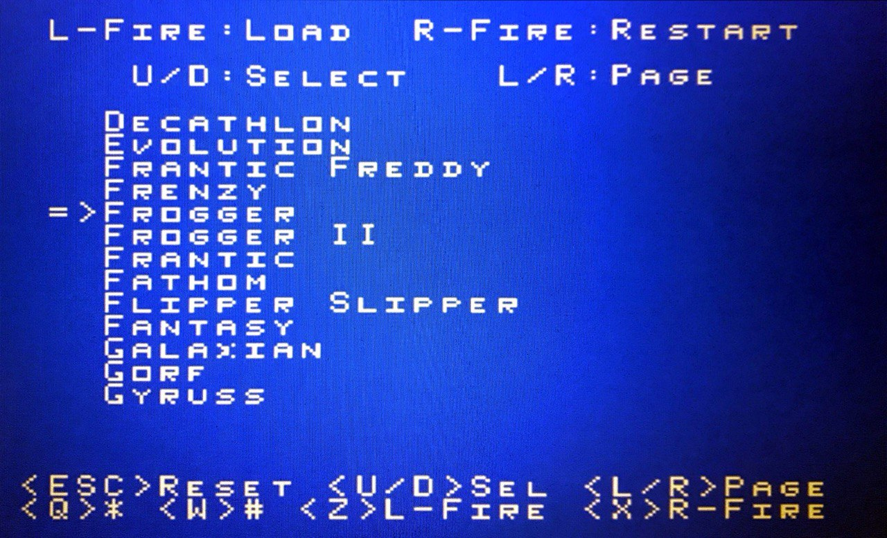
En el menú multicartucho, usar los controles de dirección para elegir la ROM a cargar, y luego el botón de disparo 1 para cargar la ROM elegida. Pulsando Esc se reinicia el core y se vuelve a cargar el menú de selección de ROM.
Elan Enterprise
El Enterprise fue un ordenador doméstico desarrollado por la empresa británica Intelligent Software y comercializado por Enterprise Computers a apartir de 1983.
La versión para ZXTRES ha sido desarrollada por Kyp069.
Algunas de las características del core son:
-
Salida de vídeo VGA
-
Salida de vídeo RGB (utilizando el puerto VGA)
-
Sólo audio Sigma-Delta
-
Implementa 1024 KB de RAM.
-
Soporte para cargar una imagen de disco virtual (fichero .vhd). En el arranque ya se carga automáticamente el fichero EP.VHD en caso de encontrarlo en el directorio raíz de la tarjeta SD
-
Salida de vídeo RGB (utilizando el puerto VGA)
-
Tiene implementado el joystick externo en el DB9 y el joystick interno en las teclas de cursor, con soporte para dos botones de disparo
Formato de Tarjeta microSD
Se debe de utilizar una tarjeta microSD, con la primera partición en formato FAT16 o FAT32, para almacenar el ficheros con la ROM y las imágenes de disco virtual que se desee utilizar.
El fichero ROM debe ser copiado en el directorio raíz de la SD como ep.rom. Además también está preparadp para trabajar con ficheros .VHD (imagen de disco), como por ejemplo el que está disponible con las distribuciones para ZX-Uno de desubikado,
Si no estuviera ya, instalar o ejecutar el core de Elan Enterprise en el ZXTRES.
Teclado
Teclas especiales y botones
Durante la ejecución del core:
-
F12: mostrar y ocultar el menú de control del core -
F1: Muestra el navegador de archivos si la unidad actual es la F:. Ya dentro del navegador de archivos se puede cambiar de partición con solo pulsar la letra de esta (F, G, H, etc). -
C+F9: Hace un Hard reset del core y vuelve a montar la unidad de discos virtual. -
F9oCtrl+Alt+Supr: Soft Reset (reinicia el Core) -
F11oCtrl+Alt+Backspace: Hard reset (reinicia la FPGA). Backspace es la tecla de borrar hacia atrás, encima deEnter -
F12(pulsación larga): Alterna entre el modo RGB y VGA
Guía básica
Al pulsar F12, se mostrará el menú con las distintas opciones del Core. Se puede navegar utilizando las teclas de cursor. Enter selecciona un elemento.
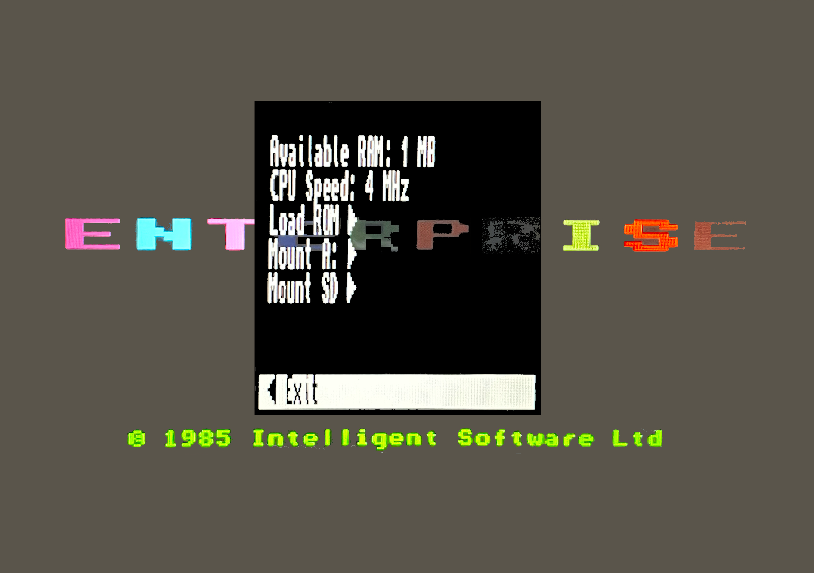
Estas son las principales:
-
Available RAM: Permite cambiar la cantidad de RAM disponible dentro del core -
CPU Speed: Para aumentar o dismunir la velocidad de la CPU -
Load ROM: Para cargar un fichero de ROM -
Mount A:: Para montar una imagen de discoDSK -
Mount SD: Para montar una imagen de discoVHD(se ha de hacer hard reset pulsandoC+F9para que el sistema la utilice)
Si hay una imagen de disco VHD montada, pulsando F1 o ejecutando el comando :FILE (: se obtiene pulsando ´) se accede al navegador de archivos. Si se pulsa la letra de otra unidad (G, H, etc) se cambia a esta.
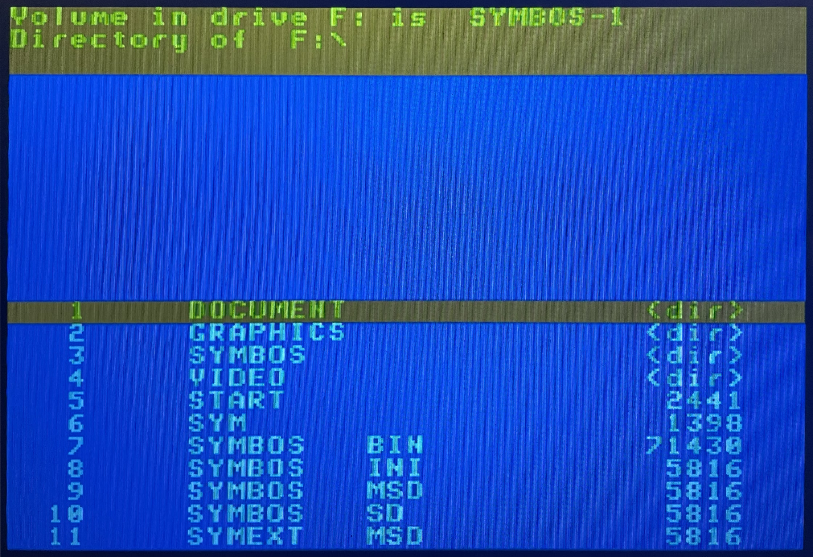
Los archivos ejecutables son COM`.
También es posible cargar programas sin usar el navegador. Un ejemplo:
:h:
:cd b
:cd bricky
:load bricky.comJupiter ACE
El Jupiter ACE fue un microordenador británico lanzado al mercado en 1982 por la empresa Jupiter Cantab.
El core para ZXTRES ha sido desarrollado por McLeod, partiendo de la versión original para ZX-Uno, principalmente como un ejemplo documentado de cómo portar cores a ZXTRES.
Tiene, entre otras, las siguientes características:
-
Salida de vídeo DisplaPort
-
Salida de vídeo VGA
-
Salida de vídeo RGBPAL (utilizando el puerto VGA)
-
Soporte para carga desde dispositivos de audio externo
-
51K de memoria de usuario
-
Memoria ROM de lectura/escritura (para poder instalar ROMs alternativas)
-
Módulo de color como el descrito en Electronics Today UK, ampliado con color de borde programable.
-
Chip de sonido AY-3-8912 en los puertos de E/S de 128K del ZX Spectrum
-
Audio I2S y Sigma-Delta
Formato de Tarjeta microSD
Este core no utiliza la tarjeta SD.
Si no estuviera ya, instalar o ejecutar el core de Jupiter ACE en el ZXTRES.
Teclado
Teclas especiales y botones
Durante la ejecución del core:
-
Inicio: Scanlines on/off -
Fin: Activa los distintos modos de color monocromo -
Bloq. Despl.: cambia de modo vídeo RGB (PAL) a VGA y viceversa (DisplayPort está siempre activo) -
Ctrl+Alt+Supr: Soft Reset (reinicia el Core) -
Ctrl+Alt+Backspace: Hard reset (reinicia la FPGA). Backspace es la tecla de borrar hacia atrás, encima deEnter
Guía básica
Desde Forth, se puede cargar desde una cinta (u otro dispositivo externo de audio) con el comando LOAD <nombre>.
|
Los ficheros |
Una vez la cinta ha cargado, escribir el comando necesario para iniciar el programa.
|
En lugar de BASIC como otros sistemas, el Jupiter ACE utiliza Forth. Para ver los comandos disponibles (incluyendo los que inician un programa cargado desde cinta), se tiene que utilizar |
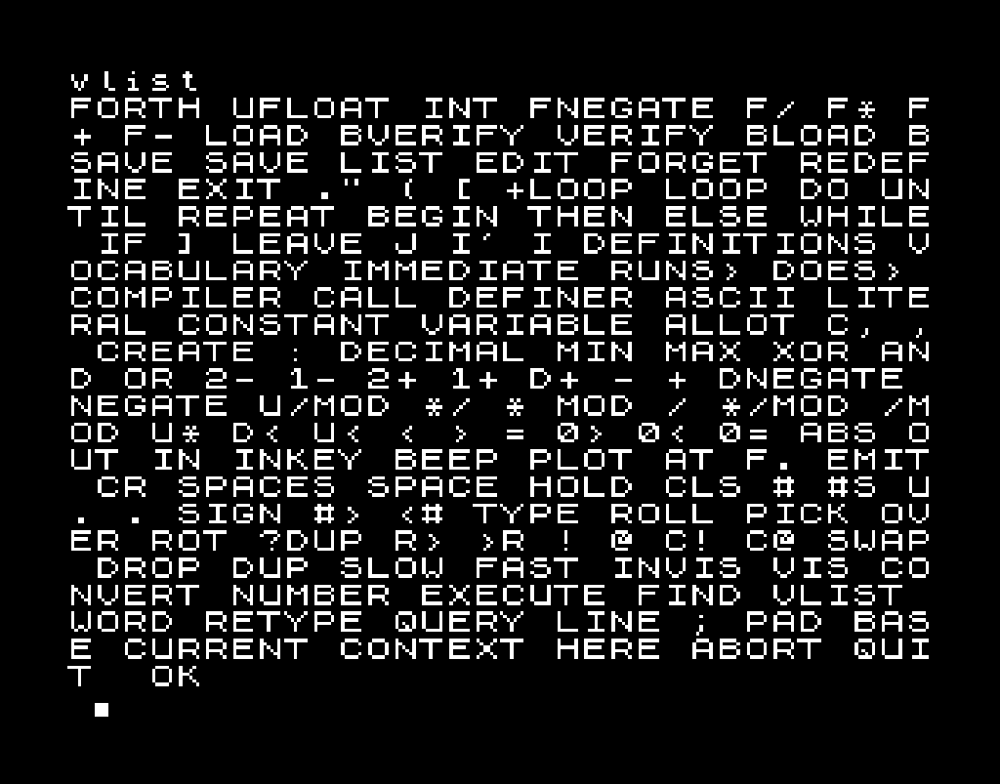
Neo-Geo
Neo-Geo es el nombre de un sistema de 16 bits basado en cartuchos para arcades así como videoconsolas para el hogar lanzado en 1990 por la compañía de videojuegos japonesa SNK. En un principio el sistema Neo-Geo se creó como plataforma para máquinas recreativas (MVS o Multi Video System), así como videoconsola doméstica (AES o Advanced Entertainment System).
La versión para ZXTRES (de somhi) está basada en la versión DeMiStificada de la versión original para MiSTer fpga.
Algunas de las características del core son:
-
Soporte para MVS y AES
-
Soporte para Universe BIOS
-
Compatible con ROMS (no cifradas) en formato .neo
-
Salida de vídeo RGB (utilizando el puerto VGA)
-
Compatible con mandos de MegaDrive
-
Audio I2S y Sigma-Delta
Formato de Tarjeta microSD
Se debe de utilizar una tarjeta microSD, con la primera partición en formato FAT16 o FAT32, para almacenar los ficheros con las imágenes ROM.
Una vez copiados los ficheros en la tarjeta, se necesita una BIOS (por ejemplo Universe BIOS), con el nombre neogeo.rom, en la raíz.
Si no estuviera ya, instalar o ejecutar el core de Neo-Geo en el ZXTRES.
Teclado
Teclas especiales y botones
Durante la ejecución del core:
-
F12mostrar el menú de control del core -
Cursor o un mando conectado al puerto izquierdo: Controles de dirección del jugador 1
-
Ctrl Dchao el botónAdel mando 1: Botón A del jugador 1 -
Alt Dchao el botónBdel mando 1: Botón B del jugador 1 -
Win Dchao el botónCdel mando 1: Botón C del jugador 1 -
Mayús. Dchao el botónDdel mando 1: Botón D del jugador 1 -
5: Insertar moneda jugador 1 (MVS) -
Enter: Botón Start del jugador 1 -
W,A,S,Do un mando conectado al puerto derecho: Controles de dirección del jugador 2 -
Ctrl Izdao el botónAdel mando 2: Botón A del jugador 2 -
Alt Izdao el botónBdel mando 2: Botón B del jugador 2 -
Win Izdao el botónCdel mando 2: Botón C del jugador 2 -
Mayús. Izdao el botónDdel mando 2: Botón D del jugador 2 -
6: Insertar moneda jugador 2 (MVS) -
Bloq. Mayús.: Botón Start del jugador 2
Guía básica
Si se han copiado los ficheros correctos en la tarjeta microSD y se inicia el core, aparecerá una pantalla en blanco. Al pulsar F12, se mostrará el menú con las distintas opciones del Core. Se puede navegar utilizando las teclas de cursor o un mando. Enter o el botón B del mando selecciona un elemento.
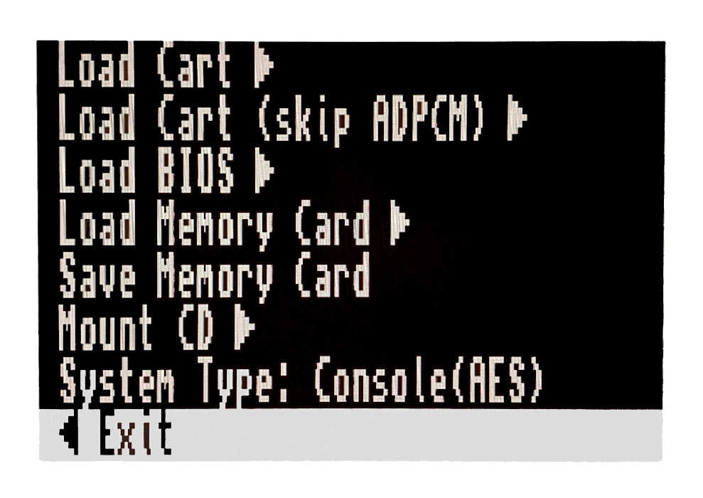
Estas son las principales:
-
Load Cart: Para cargar desde la tarjeta microSD un fichero .neo -
Load Cart (skip ADPCM)` -
Load BIOS`: Para cargar desde la tarjeta microSD un fichero BIOS distinto deneogeo.rom -
Load Memory Card -
Save Memory Card -
Mount CD: No disponible por el momento -
System Type: MVS o AES -
CD Speed: No disponible por el momento -
CD Region: No disponible por el momento -
CD lid: No disponible por el momento -
Video Mode: NTSC o PAL -
Scanlines: Para añadir, si se quiere, un efecto de líneas de exploración (scanlines) -
Blend: Para activar si se quier, un efecto de suavizado de la imagen -
Swap Joystick: Para intercambiar los controles del jugador 1 y el jugador 2 -
Input: No disponible por el momento -
[DIP]: No dispnible por el momento -
Exit: Cierra el menú
PC XT
El IBM Personal Computer XT o PC/XT fue el segundo modelo de la línea PC de IBM.
El core de ZXTRES ha sido implementado @somhi a partir del core PC XT para MiSTer FPGA de @spark2k06
Algunas de sus características son:
-
CPU 8088 a 4,77 MHz, 7,16 MHz, 9,54 MHz de y PC/AT 286 a 3,5 MHz equivalentes
-
Selección de BIOS (Tandy 1000 / PCXT). Selección de BIOS compatible (IBM5160, Yuko ST, pcxt31, Tandy, micro8088, XT-IDE, …)
-
Compatibilidad con XT-IDE
-
Soporte para IBM Tandy 1000
-
Soporte para IBM PCXT 5160 y clones
-
Memoria principal 640Kb + 384Kb de memoria UMB
-
Memoria EMS de hasta 2Mb
-
Salida de vídeo VGA
-
Salida de vídeo RGB 15 kHz (utilizando el puerto VGA)
-
Gráficos Tandy con 128Kb de VRAM compartida (no disponible en todos los puertos debido a los recursos de BRAM)
-
Gráficos CGA 32kB VRAM
-
MDA monocromo
-
Salida de vídeo compuesto (real)
-
Audio: Adlib, Tandy, Game Blaster, Altavoz
-
Soporte para joystick
-
Soporte para ratón en el puerto serie COM2, funciona como cualquier ratón Microsoft. Solo hace falta un driver para configurarlo, como CTMOUSE 1.9 (disponible en la carpeta hdd), con el comando CTMOUSE /s2
-
Audio I2S y Sigma-Delta
Formato de Tarjeta microSD
Se debe de utilizar una tarjeta microSD, con la primera partición en formato FAT16 o FAT32, para almacenar los ficheros de imagen de disco y BIOS que se deseen cargar.
Para que los archivos de BIOS se carguen de forma automática, han de estar en la la raíz de la tarjeta SD con los siguientes nombres:
-
PCXT.ROMpara la BIOS PCXT -
TANDY.ROMpara la BIOS TANDY 1000 -
XTIDE.ROMpara la BIOS XT-IDE (necesaria para cargar un sistema desde una imagenVHD)
Además también está preparadp para trabajar con ficheros .VHD (imagen de disco) formateado internamente en el sistema de ficheros DOS, como por ejemplo el que está disponible en el repositorio de código del core.
Al igual que los ficheros de BIOS, si se crean en la raiz de la tarjeta ficheros de imagen de disco con los nombres PCXT1.VHD (IDE primario) y PCXT2.VHD (IDE secundario), se cargarán automáticamente al iniciar el core, sin tener que recurrir al menú de configuración.
Si no estuviera ya, instalar o ejecutar el core de PC XT en el ZXTRES.
Teclado
Teclas especiales y botones
Durante la ejecución del core:
-
F12: mostrar u oculstar el menú de control del core -
F12(pulsación larga): Alterna entre el modo RGB y VGA
Guía Básica
Al pulsar F12, se mostrará el menú con las distintas opciones del Core. Se puede navegar utilizando las teclas de cursor o un mando. Enter o el botón B del mando selecciona un elemento.
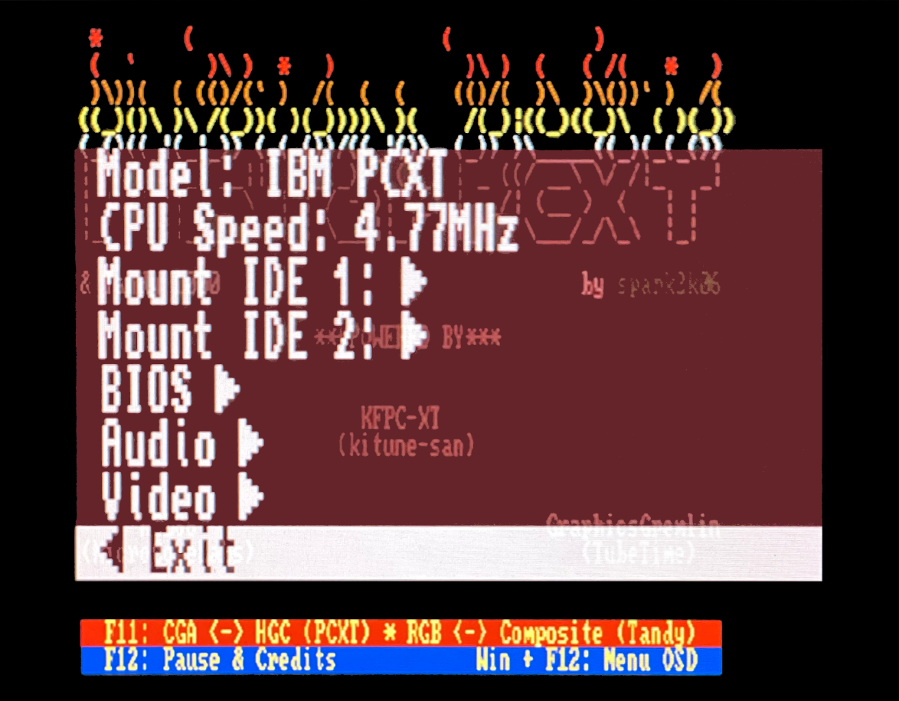
Estas son las principales:
-
Model: Para elegir entre PC XT y Tandy -
CPU Speed: Velocidad de la CPU. 4.77 MHz ofrece la mejor compatibilidad, 3.5 Mhz la mejor velocidad -
Mount IDE 1: Para montar un fichero VHD como disco primario -
Mount IDE 2:Para montar un fichero VHD como disco secundario -
BIOS: Para definir los distintos tipos de BIOS. La BIOS XT-IDE es necesaria para cargar el SO desde discos VHD -
Audio: Para indicar la emulación de audio a utilizar (Adlib, SB, etc.) así como el volumen -
Video: Para modificar las distintas opciones de vídeo -
Exit: Cierra el menú de opciones del core
SAM Coupé
El SAM Coupé fue un ordenador doméstico desarrollado y comercializado a partir de 1989 por Miles Gordon Technology, basado en el Sinclair ZX Spectrum.
El core de ZXTRES ha sido desarrollado por MicroJack, basándose en el core original para ZX-Uno de McLeod, y tiene las siguientes características:
-
Salida de vídeo VGA
-
Salida de vídeo RGB (utilizando el puerto VGA)
-
Simulación de línea de exploración (Scanlines)
-
Soporte para imágenes de disco desde la microSD
-
Soporte para carga desde dispositivos de audio externo
-
Soporte para un mando
-
Audio I2S y Sigma-Delta
Formato de Tarjeta SD
Se debe de utilizar una tarjeta microSD con la primera partición en formato FAT16 o FAT32.
Es interesante disponer de uno o más ficheros con imágenes de disco con el software que se quiera ejecutar.
|
Los ficheros de imágenes de disco soportados son en formato MGT, (819,200 bytes), así como DSK y SAD, siempre y cuando sean de ese mismo tamaño. No hay soporte para imágenes protegidas contra copia. |
Teclado
Teclas especiales y botones
Durante la ejecución del core:
-
F12: Mostrar y ocultar el menú de selección de imágenes de disco -
F5: Generar NMI -
Bloq. Despl.: para cambiar entre modo de vídeo RGB y VGA -
-del teclado numérico : Scanlines on/off -
Ctrl+Alt+Supr: Soft Reset (reinicia el Core) -
Ctrl+Alt+Backspace: Hard reset (reinicia la FPGA). Backspace es la tecla de borrar hacia atrás, encima deEnter
Guía básica
Al pulsar F12, se mostrará el menú que permite asignar ficheros DSK a las unidades de disco. Se puede navegar utilizando las teclas de cursor. Enter selecciona un elemento.
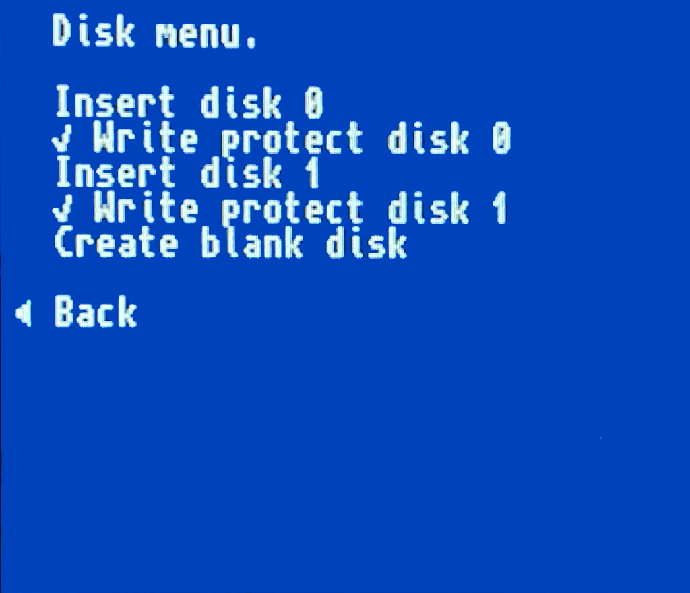
Una vez seleccionada una imagen, pulsar la tecla 9 del teclado numérico o escribir el comando BOOT para intentar iniciar automáticamente el contenido del disco.
|
Imágenes de disco en otros formatos puede que fallen con el mensaje de error Algunas de estas se pueden convertir con la utilidad samdisk para que funcionen. |
|
Algunas otras imágenes que fallan también se pueden iniciar con el siguiente método:
|
Test DP
Core alternativo, cuyo objetivo es probar el funcionamiento correcto de las salidas de vídeo VGA, RGB y DisplayPort, aplicando distintos efectos.
Sus características principales son:
-
Salida de vídeo DisplaPort
-
Salida de vídeo VGA
-
Salida de vídeo RGB a 15 kHz (utilizando el puerto VGA)
-
Scanlines
-
Modos de color fósforo verde, fósforo ambar, escala de grises y color
Formato de Tarjeta microSD
Este core no utiliza la tarjeta microSD.
Teclado
Teclas especiales y botones
Durante la ejecución del core:
-
1: Hace que la salida VGA cambia a RGB 15 kHz -
2: Activa y desactiva scanlines -
3: Cambia la pantalla entres los modos de color, fósforo verde, fósforo ambar y escala de grises
|
Los efectos antes mencionados con las teclas 2 y 3 no se ven en la salida original de 15 kHz. |
Guía básica
Cuando arranca el core, envia señal tanto por VGA como por DisplayPort. La frecuencia de refresco es de unos 64 Hz.
Los tres leds de la placa tienen el siguiente significado:
-
El que esta más cerca del borde debe lucir encendido todo el rato. Es el led de DONE, y lo maneja la propia FPGA, no el core.
-
El de en medio indica, cuando esta encendido, que hay enlace de transmision valido entre la FPGA y el monitor DisplayPort. Esto significa que el enlace está bien, que el entrenamiento ha sido exitoso, y que en este momento está enviando ya imagen de video al monitor. Si está apagado, significa que no se ha podido establecer el enlace (por ejemplo porque se ha quitado el cable, o está apagado el monitor, o quizás porque no está la entrada DisplayPort seleccionada en dicho monitor).
-
El del otro extremo debe lucir parpadeando, a razón de un parpadeo por segundo mas o menos. Es un "latido" del reloj de pixel que indica que tanto la salida VGA como la DisplayPort estan generando imagen. Si este led no parpadea, no se podrá ver imagen de ningun tipo ni por VGA ni por DisplayPort, tan sólo por RGB a 15 kHz. En circunstancias normales, tanto si hay enchufado un monitor DisplayPort como si no, este led debería estar parpadeando.
ZX81
El computador personal Sinclair ZX81, lanzado por Sinclair Research en 1981, fue el de menor precio de la época.
La versión para ZXTRES ha sido creada por avlixa, basada en la página de Grant Searle’s sobre el ZX80
Características:
-
Salida de vídeo VGA
-
Salida de vídeo RGB (utilizando el puerto VGA)
-
Se puede elegir entre ZX80 y ZX81 (ZX80 sólo con salida RGB por el momento)
-
16k/32k/48k RAM packs
-
8KB con addon CHR$128/UDG (sin probar)
-
QS CHRS (sin probar)
-
CHROMA81
-
Turbo en modo lento: NoWait, x2, x8
-
Chip de sonido YM2149 (compatible con ZON X-81)
-
Emulacion de múltiples joysticks con un mando (Cursor, Sinclar, ZX81, ZXpand)
-
Timings PAL y NTSC
-
Turbo carga de ficheros .o y .p
-
Carga de ROM alternativa
-
Carga de programas a través de la entrada de audio
-
Sólo audio Sigma-Delta
Formato de Tarjeta microSD
Se debe de utilizar una tarjeta microSD, con la primera partición en formato FAT16 o FAT32, para almacenar los ficheros con archivos de cinta o ROM que se deseen cargar.
Se puede copiar, si se desea, un fichero ZX8X.ROM (disponible the repositorio oficial en el directorio /zx81/roms: se trata de los ficheros ZX81 rom (8k) + ZX80 rom (4k) concatenados.
Si no estuviera ya, instalar o ejecutar el core de ZX81 en el ZXTRES.
Teclado
El teclado no está mapeado a la distribución PS/2 estándar, y mantiene la distribución de la máquina original. Así, por ejemplo, para obtener " se ha de pulsar Mayús+P o para borrar, Mayús+0.
ZX80
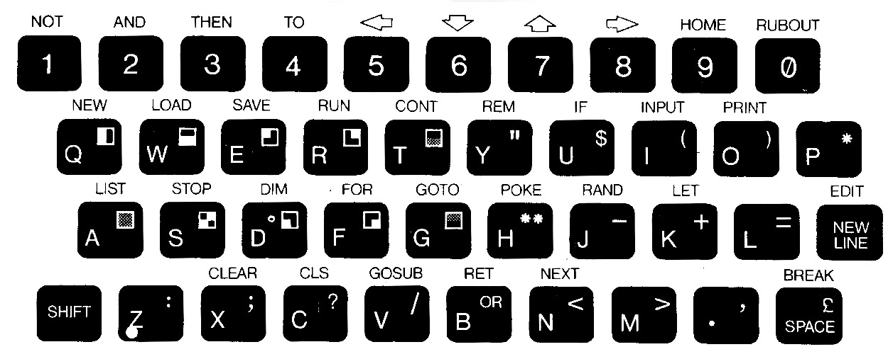
ZX81
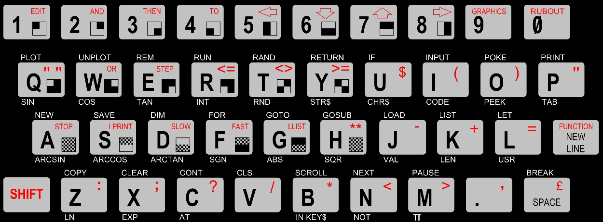
Teclas especiales y botones
Durante la ejecución del core:
-
F5o el botónBdel mando 1 para mostrar u ocultar el menú de configuración -
F1: Habilitar o deshabilitar los caracteres alternativos -
F9: Deshabilita o habilita la salida MIC al conector de audio, porque algunos juegos generan un ruido molesto -
F10: Habilita o deshabilita sonido de entrada por la salida de audio, para escuchar la cinta si se carga por audio -
Bloq. Despl.: para cambiar entre modo de vídeo RGB y VGA -
Ctrl+Alt+Supr: Soft Reset (reinicia el Core) -
Ctrl+Alt+Backspace: Hard reset (reinicia la FPGA). Backspace es la tecla de borrar hacia atrás, encima deEnter
Guía básica
Pulsando F5 o el botón B del mando 1 se muestra el menú de configuración. Se usan las teclas de cursor y Enter para elegir y seleccionar opciones del menú.
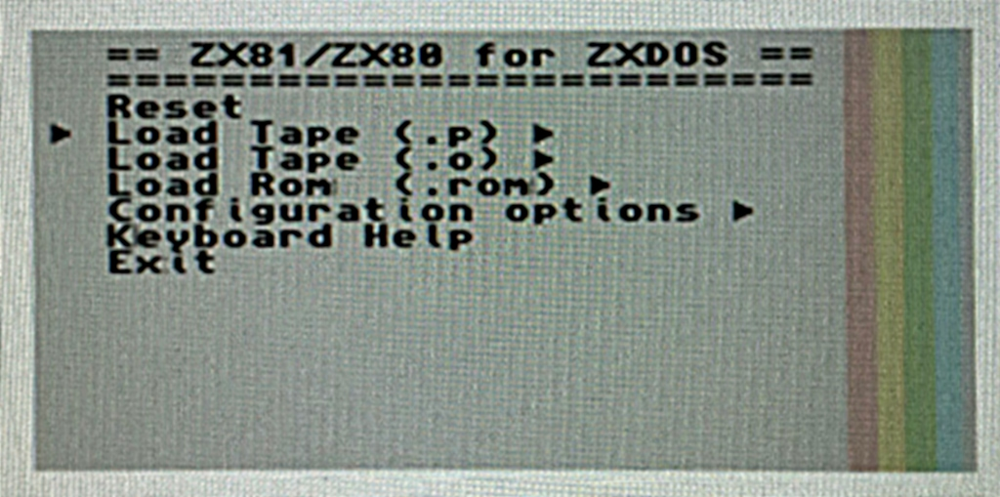
En él se pueden activar, desactivar o configurar las siguientes opciones:
-
Reiniciar el core (Reset)
-
Cargar un archivo de cinta (Load Tape)
-
Cargar una ROM alternativa (Load ROM)
-
Configurar opciones (Configuration Options)
-
Salir del menú (Exit)
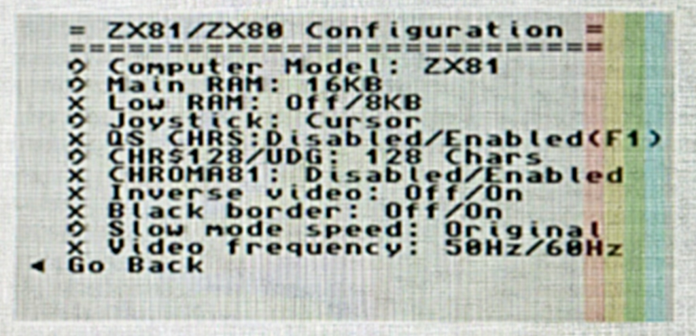
-
Elegir el modelo de computador (Computer Model): ZX80/ZX81
-
Tamaño de RAM (Main RAM): 16K/32K
-
RAM baja (Low RAM): Off/8KB
-
Joystick: Cursor/Sinclair/ZX81
-
Habilitar o deshabilitar QS CHRS
-
Configuración de CHR$128/UDG: 128 chars/64 chars/Disabled
-
Habilitar o deshabilitar Chroma81: Disabled/Enabled
-
Vídeo inverso (Inverse Video): Off/On
-
Borde negro (Black Border): Off/On
-
Modo de velocidad (Slow mode speed): Original/No Wait/x2
-
Frecuencia de vídeo (Video frequency): 50 Hz/60 Hz
Desde BASIC, se puede cargar desde un fichero de cinta, que se haya seleccionado desde el menú, con el comando LOAD"" y pulsando Enter.
|
Algunos monitores dejan de reproducir la entrada de audio si se desactiva la señal de vídeo. Se recomienda conectar unos auriculares o altavoces externos para poder oir el sonido durante la carga de una cinta. |
Se pueden cargar archivos .p con color y caracteres alternativos.
Para que funcione el coloreado, se debe activar CHROMA81 antes de la carga. Igualmente, para los caracteres alternativos, QS CHRS debería estar activo antes de cargar.
|
Las opciones recomendadas para la mayoría de los juegos son: Main RAM: 16KB Low RAM: 8KB CHR$128: 128 chars QS CHRS: enabled CHROMA81: enabled |
ZX Spectrum (zx)
Implementación de ZX Spectrum creada por kyp069, que busca la mayor fidelidad posible por encima de añadirle más funcionalidades.
Algunas de sus características son:
-
Salida de vídeo VGA
-
Salida de vídeo RGB (utilizando el puerto VGA)
-
ZX Spectrum 48K
-
ZX Spectrum 128K
-
DivMMC (esxdos 0.8.9)
-
Joystick Kempston usando el mando 1
-
Ratón Kempston
-
Audio I2S y Sigma-Delta
Formato de Tarjeta microSD
Se puede utilizar una tarjeta microSD, con la primera partición en formato FAT16 o FAT32, para utilizar con esxdos (verión 0.8.9).
Si no estuviera ya, instalar o ejecutar el core zx en el ZXTRES.
Teclado
El teclado no está completamente mapeado a la distribución PS/2 estándar, y mantiene la distribución de las máquinas originales, donde la tecla Ctrl se corresponde con Symbol Shift. Así, por ejemplo, para obtener " se ha de pulsar Ctrl+P.
Teclas especiales y botones
Durante la ejecución del core:
-
F1: Elegir el modelo 48K -
F2: Elegir el modelo 128K -
F4: Alternar entre early/late timings -
F5: NMI -
F6: Desactivar o activar automapper de DivMMC -
F7: Desactivar o activar la tarjeta microSD para DivMMC -
F8: Desactivar o activar el ratón Kempston -
Bloq. Despl.: Cambiar entre modo de vídeo RGB y VGA -
Ctrl+Alt+SuproF9: Soft Reset (reinicia el Core) -
Ctrl+Alt+BackspaceoF11: Hard reset (reinicia la FPGA). Backspace es la tecla de borrar hacia atrás, encima deEnter
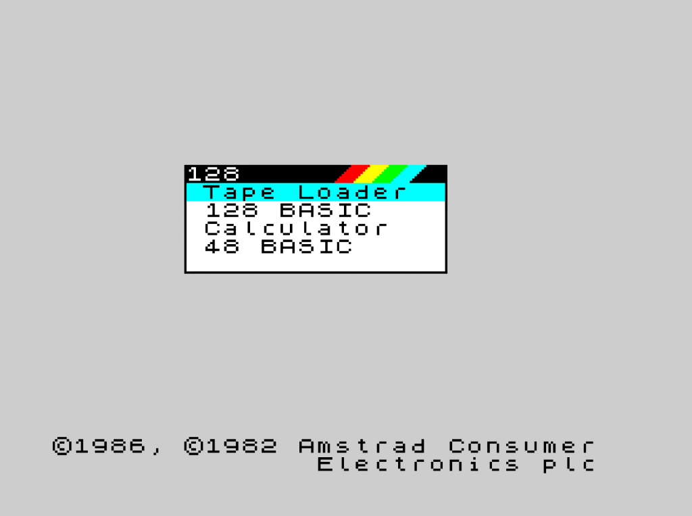
ZX Spectrum +3 (zxp3)
El ZX Spectrum +3 fue fabricado por Amstrad y salió al mercado en 1987. Ttenía un aspecto similar al +2 pero incorporaba una unidad de disquete de 3 pulgadas de la unidad de cinta, y tenía una carcasa negra. Fue el único Spectrum capaz de ejecutar el sistema operativo CP/M sin hardware adicional.
La versión para ZXTRES ha sido creada por kyp069.
Características:
-
Turbosound
-
Carga de cintas
-
Dos unidades de disquete
-
Soporte para imágenes de disco ZXMMC
-
Joystick Kempston con dos botones de disparo
-
Joysticks Interface 2
-
Salida de vídeo VGA
-
Salida de vídeo RGB a 50 Hz (utilizando el puerto VGA)
-
Soporta cualquier ROM compatible con +3, como la ROM estándar de Amstrad y la ROM +3e de Garry Lancaster
Formato de Tarjeta microSD
Se debe de utilizar una tarjeta microSD, con la primera partición en formato FAT16 o FAT32, para almacenar los ficheros de imagen de disco o ROM que se deseen cargar.
El fichero ROM por defecto debe ser copiado en el directorio raíz de la SD como zxp3.rom. Además también está preparadp para trabajar con un fichero .VHD (imagen de disco) formateado internamente en el sistema de ficheros +3DOS, como por ejemplo el que está disponible con las distribuciones para ZX-Uno de desubikado.
Si no estuviera ya, instalar o ejecutar el core zxp3 en el ZXTRES.
Teclado
El teclado no está mapeado a la distribución PS/2 estándar, y mantiene la distribución de la máquina original. Así, por ejemplo, para obtener " se ha de pulsar Mayús+P o para borrar, Mayús+0.
Teclas especiales y botones
Durante la ejecución del core:
-
F12para mostrar u ocultar el menú. -
Bloq. Despl.: Cambiar entre modo de vídeo RGB y VGA -
Ctrl+Alt+SuproF9: Soft Reset (reinicia el Core) -
Ctrl+Alt+BackspaceoF8: Hard reset (reinicia la FPGA). Backspace es la tecla de borrar hacia atrás, encima deEnter
Guía básica
Al pulsar F12, se mostrará el menú con las distintas opciones del Core. Se puede navegar utilizando las teclas de cursor. Enter selecciona un elemento.
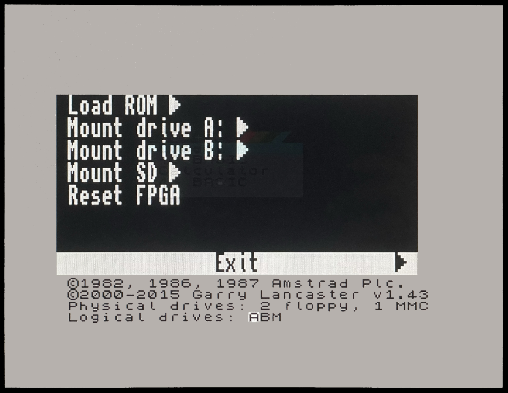
Estas son las principales:
-
Load ROM: Permite cambiar la ROM -
Mount drive A:: Para montar un fichero DSK en la primera unidad -
Mount drive B:: Para montar un fichero DSK en la segunda unidad -
Mount SD:: Para montar un fichero VHD como disco (se ha de hacer reset para que el sistema lo utilice), -
Reset FPGA: para reiniciar la FPGA
Por otra parte el mando 1 se comporta simultáneamente con protocolo Kempston (con dos botones de disparo) y Sinclair (1, 2, 3, 4, 5) con segundo botón de disparo (z). El mando conectado al puerto 2 se comporta con protocolo Sinclair (6, 7, 8, 9, 0) y segundo botón de disparo (x).
ZX Spectrum Next
ZX Spectrum Next es un proyecto, basado en FPGA, que aspira a ser la evolución de los ordenadores Sinclair ZX Spectrum, manteniendo la compatibilidad hardware y software con los modelos anteriores, pero añadiendo nuevas características.
Principalmente gracias a avlixa, existe una versión del core de ZX Spectrum Next sintetizada para usarse con ZXTRES.
El core para ZXTRES no tiene, por el momento, implementada ninguna de las siguientes caracteristicas:
-
Beeper interno
-
Conector de expansión EDGE
-
Módulo RTC
-
Teclado de membrana
-
Grabación de cores adicionales o actualización del propio core Next desde el core Next
-
Salida MIC
-
vídeo HDMI
-
Utilización de puerto de conexión joystick para comunicación UART
-
Soporte para Raspberry Pi
Por otra parte, dispone de las siguientes características, que no existen en el core original:
-
Modos de color incluyendo monocromo o fósforo verde/naranja
-
Sólo audio Sigma-Delta
El manual de uso se puede descargar desde la página oficial.
Formato de Tarjeta microSD
Se debe de utilizar una tarjeta microSD con la primera partición en formato FAT16 o FAT32, y que tenga instalada la distribución de esxdos correspondiente a la configuración actual de BIOS (ver el apartado correspondiente de esxdos para más información).
Obtener la distribución de NextZXOS en la página oficial.
Descomprimir el contenido de NextZXOS en la tarjeta microSD.
Si no estuviera ya, instalar o ejecutar el core de ZX Spectrum Next en el ZXTRES.
Teclado
El teclado no está mapeado a la distribución PS/2 estándar, y mantiene la distribución de la máquina original. Así, por ejemplo, para obtener " se ha de pulsar Ctrl+P o para activar el modo extendido, Mayús+Ctrl.
Teclas especiales y botones
Notar que no hay botón físico de Reset o Drive.
Durante la ejecución del core:
-
F4: Soft Reset -
F7: Activa los distintos modos de color monocromo -
F9: NMI -
Ctrl+Alt+Backspace: Hard reset (reinicia la FPGA). Backspace es la tecla de borrar hacia atrás, encima deEnter
Guía básica
Al iniciarse la primera vez, aparecerán una serie de pantallas de ayuda. Tras pulsar la tecla Espacio, se mostrará el menú de inicio de NextZXOS.
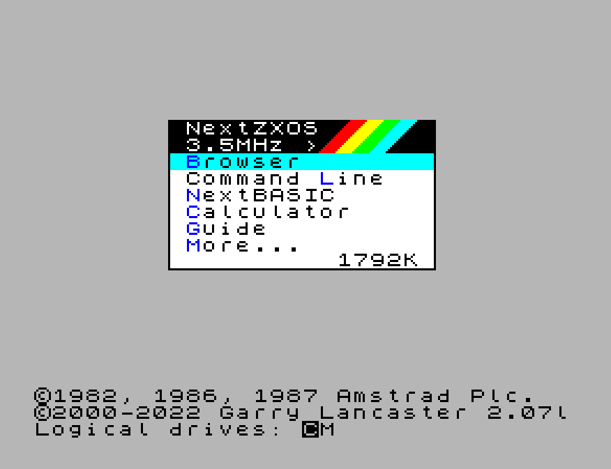
Se puede navegar utilizando las teclas de cursor, las teclas 5, 6, 7 y 8, o un joystick (si se ha configurado en modo Kempston, MD o cursor). Enter o el botón del joystick selecciona un elemento.
|
Durante el arranque, se puede forzar la salida de vídeo analógica a utilizar, pulsando |
La opción More… muestra un segundo menú con más opciones.
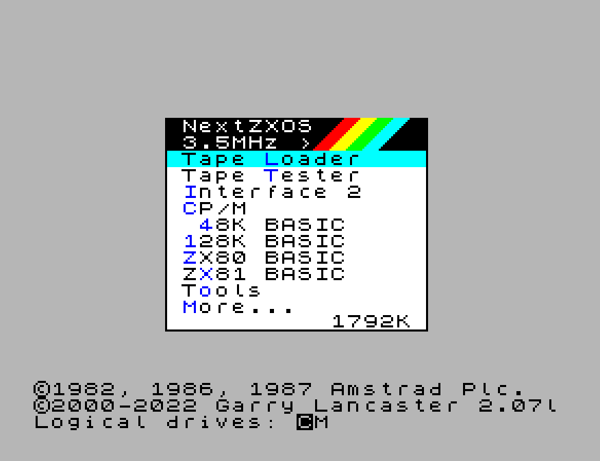
Si se elige Browser, se cargará el navegador de NextZXOS, desde el que es posible desplazarse viendo el contenido de la tarjeta microSD y cargar directamente diferentes tipos de archivo (TAP, NEX, DSK, SNA, SNX, Z80, Z8, etc.).
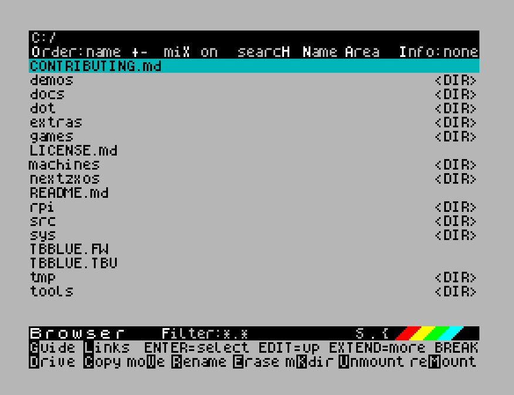
|
Por defecto, no es posible cargar ficheros TRD dede el navegador (se debe configurar NextZXOS para cargar una "personalidad" con esxdos). |
Para más información, consultar el manual de uso oficial.
Otro Hardware
Tarjeta intermedia (Middle Board)
Se puede instalar como componente opcional en un ZXTRES una tarjeta intermedia que expande las capacidades de hardware incluyendo soporte para:
-
MIDI (vía microcontrolador RP2040),
-
carga directa de cores desde la tarjeta microSD (vía microcontrolador RP2040)
-
Teclados y mandos USB (vía microcontrolador RP2040)
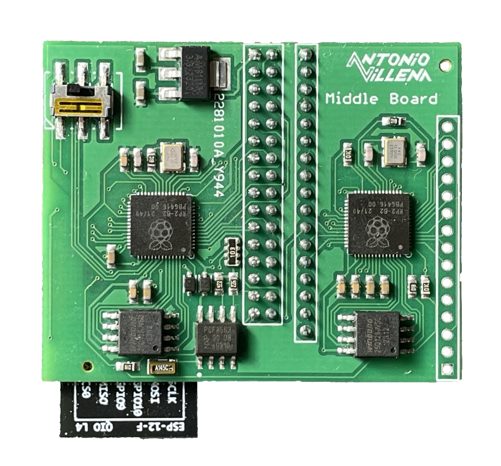
Recuperación vía USB
En algunas situaciones puede ser necesario reinstalar el firmaware de arranque (bootstrap) de algún microcontrolador RP2040 de la tarjeta.
Material necesario:
-
Ordenador con USB y compatible con Raspberry Pi Pico
-
Cable con un extremo USB-A (para conectar con el ZXTRES) y el otro extremo adecuado para conectar con el ordenador (USB-C, USB-A, etc.)
Software necesario:
-
Obtener el archivo UF2 adecuado para el microcontrolador a recuperar:
-
rp2s.uf2para tarjetas con un único microcontrolador -
rp2m-bootstrap.uf2para rp2040 MIDI (tarjetas con dos microcontroladores) -
rp2u-bootstrap.uf2para rp2040 USB (tarjetas con dos microcontroladores)
-
Pasos a seguir:
-
Apagar el ZXTRES si estuviera encendido, y conectar con el cable USB al ordenador
-
En el caso de tarjetas con dos microcontroladores, poner el interruptor en la posición adecuada para el rp2040 a recuperar, siendo la posición 1 para USB y la posición 2 para MIDI
-
Encender el ZXTRES mientras se pulsa el botón BOOTSEL de la parte inferior de la carcasa
-
Copiar el fichero UF2 correspondiente a la unidad de disco que aparecerá disponible en el ordenador
-
Finalmente, en el caso de tarjetas con dos microcontroladores, si fuera necesario, volver a poner el interruptor en la posición 1 (USB)
Carga desde cinta
Para algunos cores como, por ejemplo, el de Spectrum o el de MSX, es posible cargar, igual que se hacía en las máquinas originales, desde un dispositivo externo de audio como un reproductor de cassette u otro que lo simule.
Normalmente, se debe utilizar un cable adecuado para la entrada de sonido del ZXTRES, concretamente, ha de ser un cable con un jack estéreo de 3,5 mm en un extremo dos salidas mono en el otro (una para cada canal de audio), conectando el extremo del canal mono derecho al dispositivo de reproducción de cintas (esto no es necesario en Miniduino, ya que este automáticamente utiliza sólo el canal derecho de sonido al reproducir).
Reproductor de cassette
El funcionamiento es exactamente igual que se hacía con los equipos originales:
-
Conectar el cable de audio
-
Ejecutar en el equipo o elegir la opción correspondiente a la carga desde cinta. Por ejemplo, en ZX Spectrum 48K, pulsando
J, a continuación, dos veces,"y luegoEnterpara ejecutar el clásicoLOAD "" + Enter -
Iniciar la reproducción de la cinta (es posible que haya que hacer distintos intentos ajustando el volumen del reproductor)
Ordenador
Según el sistema operativo (Windows, macOS, Linux) existen múltiples alternativas de programas que pueden, o bien reproducir directamente un archivo de cinta (TAP, TZX, PZX, etc.) y emitir el sonido por la salida de auriculares, o bien crear un fichero de sonido (WAV, VOC, AU, etc.) que se puede reproducir también con programas de música o sonido.
PlayTZX
Este programa para Windows, macOS o Linux, permite reproducir un fichero de cinta TZX a través de la salida de sonido del ordenador.
Se puede descargar el fichero binario (por ejemplo, para Windows desde World of Spectrum Classic y para Mac desde este repositorio de GitHub) o compilar el código fuente como se explica a continuación.
-
Conectar el cable de audio entre la salida del ordenador y la entrada de audio del ZXTRES (recordar conectar únicamente el extremo del canal mono derecho al extremo del PC/Mac, etc.)
-
Ejecutar en el equipo o elegir la opción correspondiente a la carga desde cinta. Por ejemplo, en ZX Spectrum 48K pulsando
Ja continuación, dos veces,"y luegoEnterpara ejecutar el clásicoLOAD "" + Enter
-
Iniciar la reproducción de un fichero de cinta con el siguiente comando (es posible que haya que hacer distintos intentos ajustando el volumen de salida del equipo)
./playtzx <fichero de cinta>Si todo va bien, se irá viendo en la consola los distintos bloque de carga de la cinta, mientras el sonido se produce y el core del ZXTRES carga el programa.
|
En Linux, el programa utiliza como salida el dispositivo |
Compilar código fuente (macOS o Linux)
Verificar que están instaladas las herramientas de desarrollo, incluyendo un compilador de C (gcc, clang herramientas de desarrollaor de línea de comandos en Mac, etc.) y GNU Autotools.
Descargar el código fuente desde este repositorio), descomprimirlo y acceder en una consola al directorio, y ejecutar los comandos:
aclocal && autoconf && autoheader && automake --add-missing
./configure
makeSi todo se ha hecho correctamente, se habrá generado el fichero playtzx que se puede copiar a donde se desee en el disco duro y utilizar. Se puede borrar el directorio descomprimido donde se compiló.
Teléfono móvil, tableta, reproductor de sonido MP3, etc.
En general, existen muy pocas alternativas (o ninguna) alternativas de programas que puedan reproducir directamente un archivo de cinta en un dispositivo móvil, así que, normalmente, será necesario convertir a un fichero de audio el contenido de la cinta antes de intentar cargarla con uno de estos aparatos.
ZX Tape Player es una App para sistemas iOS y Android que es capaz de reproducir directamente a través de la salida de auriculares
PlayZX es otra App similar, pero sólo para sistemas Android.
|
Los dispositivos con salida de auriculares modernos, suelen estar pensados para manejar impedancias el orden de unas pocas decenas de ohmios. Esto, a veces, puede ser insuficiente para la entrada del ZXTRES. En esos casos, se recomienda (si es posible) desactivar las limitaciones de volumen máximo de auriculares y/o utilizar un dispositivo amplificador de auriculares, que eleve la impedancia. |
Los pasos a seguir en este caso son:
-
Conectar el cable de audio entre la salida del dispositivo móvil y la entrada de audio del ZXTRES (recordar conectar únicamente el extremo del canal mono derecho al extremo del PC/Mac, etc.)
-
Ejecutar en el equipo o elegir la opción correspondiente a la carga desde cinta. Por ejemplo, en ZX Spectrum 48K pulsando
Ja continuación, dos veces,"y luegoEnterpara ejecutar el clásicoLOAD "" + Enter -
Iniciar la reproducción del fichero de audio (o del fichero de cinta en el caso de PlayZX). Es posible que haya que hacer distintos intentos ajustando el volumen del reproductor/amplificador.
Conversión a fichero de audio
A continuación se indican algunos de los muchos programas que existen para distintos sistemas operativos, y que pueden exportar ficheros de cinta a ficheros de audio.
Tapir es un programa con interfaz gráfica para Windows (pero que se puede usar también con Wine en Linux o Mac) que permite cargar ficheros TZX y TAP y exportarlos como WAV de audio
tape2wav de Fuse Utilities es una utilidad de línea de comandos que exporta desde ficheros TZX PZX y TAP a WAV. Disponibles para muchos sistemas operativos distintos.
pzx2wav en PZX Tools es otra utilidad de comandos que exporta desde ficheros PZX a WAV. Disponible como ejecutable para Windows, y con el código fuente disponible para compilar en otros sistemas.
Miniduino
Miniduino es un sistema reproductor de archivos de cinta, basado en un microcontrolador STM32F103C8T6 o ATMega38P, y que trae instalado de serie el firmware Maxduino.
Maxduino permite la reproducción, de una forma similar a como se manejaban las cintas de cassette originales, de archivos digitales de cinta en múltiples formatos como TAP y TZX (ZX Spectrum), O (ZX80), P (ZX81), CDT (Amstrad CPC), CAS(MSX) TSX (MSX, Acorn, etc). También es posible reproducir como cinta archivos de sonido AY, para cargarlos en SpecAY desde ZX Spectrum.
Puertos y Botones
1 |
Alimentación |
2 |
Salida de sonido |
3 |
Botón de control |
4 |
Control de motor |
5 |
Ranura de tarjeta SD |
6 |
Pantalla |
Preparación
Se necesita una tarjeta SD para almacenar los archivos de cinta que se quiere reproducir. Se recomienda que no sea de alta velocidad (Clase 10 o superior) porque puede haber problemas durante la lectura, ni de alta capacidad (SDXC o superior).
La tarjeta debe estar formateada con con la primera partición en formato FAT16 o FAT32.
Además de la tarjeta, recordar utilizar un cable adecuado para la entrada de sonido, conectando el Miniduino.
Para los equipos que soporten control por motor, también se puede utilizar un cable con un jack de 2,6 mm.
En la primera partición de la tarjeta se han de copiar los archivos de cinta (TAP, TZX, O, P, CAS, TSX, etc), que se pueden organizar en carpetas o directorios.
|
El reproductor muestra las entradas de archivos y directorios en el orden de la tabla FAT interna, y no de manera alfabética. Si se desea ver esta información ordenada, se debe reorganizar la estructura de la tarjeta con una utilidad como FAT Sorter para Windows, FATsort para Linux y MacOS, YAFS, SDSorter u otros. |
Uso
Una vez insertada la tarjeta SD con ficheros de datos, el Miniduino se enciende conectando el cable de alimentación USB incluido.
Si se pulsa directamente el botón de control, se accede al menú de opciones que permite modificar lo siguiente:
-
Velocidad (Baud Rate): Para ajustar la velocidad turbo en bloques 4B en archivos de MSX (
CASyTSX) -
Control de motor (Motor Ctrl): Para indicar que se ha conectado un cable de control remoto a un equipo que lo soporte (Amstrad, CPC, MSX, etc.)
-
Conversión (TSXCzxpUEFWS): Activa la carga turbo para los archivos
.CASy.TSX, cambiar la polaridad de la señal de audio de los archivos para Spectrum y Amstrad CPC y/o cambiar la paridad en los archivos.UEFde Acorn Electron y BBC Micro -
Saltar bloques (Skip BLK)): Para deshabilitar (Skip ON) o habilitar la pausa automática al encontrar bloques del tipo 2A
Estando fuera del menú de opciones, el botón de control se utiliza como una palanca de control de cuatro direcciones, que se comporta de dos maneras distintas, según esté la reproducción detenida (Stop) o en pausa (Pause).
Con la reproducción detenida (navegación por archivos y directorios):
-
Arriba y abajo permiten desplazarse por la lista actual de ficheros y directorios
-
Izquierda (Stop) retrocede un nivel en el árbol de directorios
-
Derecha (Play/Pause) accede al contenido de un directorio o, si lo que hay seleccionado es un archivo, intenta reproducirlo
Una vez un archivo está en reproducción, el botón izquierda (Stop), la detiene, y el botón derecho (Play/Pause) la pone en pausa.
Con la reproducción en pausa (navegación por bloques de cinta):
-
Arriba y abajo permiten desplazarse por los bloques del archivo de cinta que ya hayan sido reproducidos (útil para juegos multicarga, para volver a cargar un bloque de un nivel, por ejemplo)
-
Izquierda (Stop) cancela la reproducción y entra de nuevo en el modo de navegación de archivos y directorios
-
Derecha (Play/Pause) reanuda la reproducción en el bloque seleccionado
-
Presionar directamente el botón de control permite activar o desactivar el modo turbo para MSX
|
Para obtener información mucho más detallada, se puede consultar el manual oficial del firmware Maxduino, disponible en el repositorio oficial. |
Creación de ficheros TZX o TSX desde otros formatos
Existen algunos formatos de cinta (Commodore, Camputers Lynx, etc.) que, por el momento, no están directamente soportados por Maxduino. No obstante, existen algunos programas que pueden permitir, con mayor o menor éxito, transformar ficheros de cinta desde formato de audio a TSX o TZX, y así poder utilizarlos con Miniduino.
MakeTSX
Para usar MakeTSX de NataliaPC y crear un fichero TSX con audio embebido, se ha de usar un comando como el siguiente:
...MakeTSX -b15 -wav fichero_audio.wav -tsx fichero_nuevo.tsxRetroConverter
Para utilizar RetroConverter de Jorge Fuertes, para crear un fichero TZX con audio embebido, usar un comando como:
...retroconv fichero_audio.wav fichero_nuevo.tzxActualización de firmware Maxduino
El firmware Maxduino es actualizado y mejorado periódicamente. Se puede hacer un seguimiento de los cambios y mejoras en el foro Va de Retro o bien en la página del proyecto en GitHub. Para poder aprovechar estas mejoras se ha de actualizar la memoria flash del Miniduino con la versión de firmware correspondiente.
Existen dos modelos de Miniduino, uno basado en el microcontrolador STM32, y otro basado en ATMega328P.
Modelo STM32
Para poder instalar el firmware, se ha de hacer desde un ordenador (Windows, Mac, Linux) con el entorno Arduino IDE.
Una vez instalado, se ha de añadir la biblioteca de software SDFat (1.1.4) eligiendo la opción de menú Programa→incluir librería→administrar bibliotecas
También se ha de añadir el soporte para el microcontrolador del Miniduino. Esto se hace en dos pasos:
Primero añadiendo soporte para procesadores ARXM Cortex M3 en el menú Herramientas → placa → gestor de tarjetas Instalar "Arduino SAM boards (Cortex-M3)"
A continuación se ha de añadir el soporte para microcontroladores STM32, descargando el fichero disponible en este enlace.
Descomprimir el contenido en la carpeta del usuario actual en
...Arduino/hardware/Arduino_STM32En Windows instalar el controlador USB ejecutando con privilegios elevados:
...\drivers\win\install_drivers.batEn Linux instalar con privilegios de root las reglas de udev necesarias:
...tools/linux/install.shEn MacOS, si no apareciese el Miniduino como dispositivo USB en Arduino IDE al conectarlo, puede que sea necesario instalar libusb.
Finalmente, en el caso de Mac o Linux, el fichero maple_upload dentro de Arduino_STM32 tiene que modificarse con un editor de texto. Estas líneas no funcionan bien:
if [ $# -eq 5 ]; then
dfuse_addr="--dfuse-address $5"
else
dfuse_addr=""
fiY se tienen que cambiar por
dfuse_addr=""Una vez preparado el entorno, descargar la versión deseada del proyecto desde el repositorio oficial en GitHub
|
El reproductor Miniduino con microcontrolador STM32 sólo está soportado a partir de la versión 1.65 |
Cargar el fichero del proyecto en Arduino IDE (por ejemplo MaxDuino_v1.69.ino).
Verificar en el fichero userSTM32Config.h que están comentadas todas las entradas de logo excepto la de Miniduino, y si no, cambiarlas.
...
//#define tanque4
//#define tanque1
//#define dostanques
//#define cablemax
//#define sony
#define miniduino
...Conectar el Miniduino al equipo usando el cable USB e identificar el puerto asignado, normalmente con un nombre del tipo "Maple Mini" (por ejemplo: COM5 Maple Mini)
Configurar en el menú "Herramientas" las opciones
Placa: Generic STM32F103C Series
Variant: STM32F103C8 (20k RAM, 64k Flash)
Upload Method: STM32duino bootloader
CPU Speed: 72Mhz (Normal)
Optimize: Smallest (default)
Puerto: <Puerto identificado antes>Finalmente, pulsar el botón de carga del firmware y esperar unos segundos mientras se compila el proyecto y se carga en el dispositivo.
Si todo se ha hecho correctamente se verá cómo el Miniduino se reinicia y en la pantalla aparece la versión correspondiente de firmware.
Modelo ATMega328P
Material necesario:
-
Una llave Allen del tamaño adecuado para poder retirar la tapa
-
Programador USBASP
Además, la instalación, se ha de hacer desde un ordenador (Windows, Mac, Linux) con el entorno Arduino IDE.
Una vez instalado Arduino IDE, se ha de añadir la biblioteca de software SDFat (1.1.4) eligiendo la opción de menú Programa→incluir librería→administrar bibliotecas.
Una vez preparado el entorno, descargar la versión deseada del proyecto desde el repositorio oficial en GitHub
Cargar el fichero del proyecto en Arduino IDE (por ejemplo MaxDuino_v1.69.ino).
Verificar en el fichero userconfig.h que estén comentadas todas las entradas de logo excepto la de Miniduino, y si no, cambiarlas.
...
//#define tanque4
//#define tanque1
//#define dostanques
//#define cablemax
//#define sony
#define miniduino
...Conectar el Miniduino al adaptador USBasp, asegurándose de que la serigrafía de los dos conectores se corresponde (ej: VCC con VCC, MOSI con MOSI, GND con GND, etc.), y conectar el adaptador USB al equipo.
Configurar en el menú "Herramientas" las opciones
Placa: Arduino Pro or Pro Mini
Procesador: ATmega328P (5V,16 Mhz)
Programador: "USBasp"Finalmente, mantener pulsada la tecla mayúsculas mientras se hace clic en el botón de carga del firmware y esperar unos segundos hasta que se compile el proyecto y se cargue en el dispositivo.
Si todo se ha hecho correctamente se verá cómo el Miniduino se reinicia y en la pantalla aparece la versión correspondiente de firmware.
Solución de problemas
Gestión de imágenes de firmware
Existen distintas herramientas que permiten generar y/o editar el contenido de los ficheros ZX1, ZX3.
zx123_tool
Esta es una herramienta que analiza, extrae o añade datos en ficheros de imagen de SPI flash de ZX-Uno, ZXDOS, ZXTRES y otros dispostivos similares.
Para poder utilizarla se necesita Python 3. Según el sistema operativo que se utilice puede que sea necesario instalarlo.
Teniendo Python 3, basta con descargar la última versión de la herramienta desde su repositorio oficial, en este enlace.
Una vez descomprimido, se debe invocar desde una consola el script principal usando Python 3. Esto puede variar según el sistema operativo.
Por ejemplo, en Windows, suele ser:
py -3 zx123_tool.pyMientras que en otros sistemas operativos debería bastar con algo parecido a:
python3 ./zx123_tool.pyTambién hará falta un archivo de imagen flash. Este se puede obtener desde el core de Spectrum, en modo "root", con alguno de los comandos back16m, backzx3, backzx2 o backzxd. Tras obtener el fichero generado en la microSD, se puede "limpiar" dejando sólo el core de Spectrum y la primera ROM de Spectrum con un comando similar a este:
... zx123_tool.py -i FLASH.ZXD -w -o FLASHempty.ZXDDonde FLASH.ZXD es la ruta al fichero obtenido desde el core de Spectrum, y FLASHempty.ZXD es la ruta al nuevo fichero "limpio".
Mostrar contenido de una imagen
Para ver el contenido de una imagen llamada FLASH.ZXD (cores instalados y algunos datos de configuración), se puede usar el comando
... zx123_tool.py -i FLASH.ZXD -lPara mostrar contenido de esa misma imagen, incluyendo datos de ROMs de ZX Spectrum:
... zx123_tool.py -i FLASH.ZXD -l -rModificar la BIOS de una imagen
Para modificar la BIOS de un fichero llamado FLASH.ZXD, usando la BIOS en otro fichero llamado FIRMWARE.ZXD
...zx123_tool.py -i FLASH.ZXD -a BIOS,FIRMWARE.ZXDAdemás de instalar la BIOS, se pueden modificar algunos de los valores por defecto. Por ejemplo, con las opciones; -m para el modo de vídeo: 0 (PAL), 1 (NTSC) ó 2 (VGA), -k para la distribución del teclado: 0 (Auto), 1 (ES), 2 (EN) ó 3 (Spectrum).
Así, para modificar la BIOS de un fichero llamado FLASH.ZXD, usando la BIOS en otro fichero llamado FIRMWARE.ZXD, y además configurar el modo de vídeo en VGA:
...zx123_tool.py -i FLASH.ZXD -a BIOS,FIRMWARE.ZXD -m 2 -k 3Existen también opciones para ajustar el tiempo de espera inicial de la BIOS, el core a ejecutar por defecto, o la ROM de Spectrum a utilizar por defecto. Véase la documentación de la herramienta para más información.
Añadir una ROM de Spectrum a una imagen
Para añadir una ROM de Spectrum llamada 48.rom, poniendo el nombre Spec48 y ocupando el slot 5, se puede usar un comando como:
...zx123_tool.py -i FLASH.ZXD -a ROM,5,xdnlh17,Spec48,48.romVéase la documentación de la herramienta para ver todas las posibles opciones a la hora de añadir una ROM de Spectrum.
Entre los datos que se indican al añadir una ROM, hay una serie de indicadores para definir qué opciones de hardware, etc. se desean habilitar o deshabilitar al cargar esa ROM en concreto, según se puede ver en esta tabla:
|
Habilitar teclado issue 3 (en vez de issue 2) |
|
Deshabilitar la contención de memoria |
|
Habilitar DivMMC |
|
Habilitar NMI DivMMC (menú de esxdos) |
|
Usar timings de Pentagon |
|
Usar timings de 128K |
|
Deshabilitar puertos de DivMMC y ZXMMC |
|
Habilitar MMU horizontal de Timex |
|
Deshabilitar bit alto de ROM (bitd 2 de 1FFD) |
|
Deshabilitar bit bajo de ROM (bit 4 de 7FFD) |
|
Deshabilitar puerto 1FFD (paginado de +2A/3) |
|
Deshabilitar puerto 7FFD (paginado de 128K) |
|
Deshabilitar TurboSound (chip AY secundario) |
|
Deshabilitar chip AY |
|
Deshabilitar modo Radastaniano |
|
Deshabilitar modo Timex |
|
Deshabilitar ULAPlus |
Instalar un Core en una imagen
Para instalar un core en la posición 3, desde un fichero llamado NEXT.ZXD, llamándolo Spectrum Next, usar un comando como este:
...zx123_tool.py -i FLASH.ZXD -a 'CORE,3,Spectrum Next,NEXT.ZXD'Si además se quiere configurar como el core por defecto, se puede indicar también con un comando como:
...zx123_tool.py -i FLASH.ZXD -a 'CORE,3,Spectrum Next,NEXT.ZXD' -c 3Modificar la ROM de esxdos de una imagen
De forma similar a como se instala el firmware de la BIOS, se puede instalar directamente un fichero con la ROM de esxdos, con un comando como:
...zx123_tool.py -i FLASH.ZXD -a esxdos,ESXMMC.BINCombinar varias órdenes en una única línea
Notar que se pueden acumular varias órdenes en una única línea de comandos. Por ejemplo, para "limpiar" un archivo de imagen llamado FLASH.ZXD, creando uno nuevo llamado FLASHnew.ZXD, instalar la BIOS desde el fichero FIRMWARE.ZXD, configurar el modo de vídeo en VGA, añadir una ROM de Spectrum llamada 48.rom, poniendo el nombre Spec48 y ocupando el slot 5, instalar un core en la posición 3, desde un fichero llamado NEXT.ZXD, llamándolo Spectrum Next, configurado como el core por defecto, usar un comando como este:
... zx123_tool.py -i FLASH.ZXD -w -o FLASHnew.ZXD -a BIOS,FIRMWARE.ZXD -m 2 -k 3 -a ROM,5,xdnlh17,Spec48,48.rom -a 'CORE,3,Spectrum Next,NEXT.ZXD' -c 3Recuperación del firmware
En algunos casos (por ejemplo al instalar un core experimental o hacer una actualización del core de ZX Spectrum o la BIOS) puede suceder que el ZXTRES deje de arrancar. Se encienden los LEDs pero no hay imagen ni responde a las distintas combinaciones de teclado para acceder a la BIOS, etc.
En esta situación, existen diferentes métodos de recuperación que permiten volver a instalar el firmware.
Preparación del cableado
En los siguientes pasos de recuperación se habla de conectar cables puente o USB-Blaster a la placa de ZXTRES. Para ello, usar la siguiente imagen como referencia.
|
NO se ha de conectar la línea de 3V |
Recuperación usando una Raspberry Pi
Material necesario:
-
Raspberry Pi (con tarjeta SD, teclado, monitor, fuente de alimentación, etc.) y con conexión a internet
-
5 cables puente para prototipos (idealmente, hembra en los dos extremos) y, opcionalmente, un adaptador USB-Blaster
-
Un destornillador de estrella adecuado
-
Tarjeta SD para el ZXTRES con la primera partición en formato FAT16 o FAT32
-
Teclado y monitor para conectar el ZXTRES
Software necesario:
-
Imagen Flash y recovery para ZXTRES, del repositorio principal de Github. Notar que existe un fichero distinto para cada tipo de dispositivo:
-
recovery_a35.bitpara ZXTRES -
recovery_a100.bitpara ZXTRES+ -
recovery_a200.bitpara ZXTRES++
-
Pasos a seguir:
-
Si no estuviera ya, instalar Raspberry Pi OS (antes llamado Raspbian) en la Raspberry Pi (usando la descarga oficial, NOOBS, PINN, etc.)
-
Instalar Open OCD en la Raspberry Pi:
sudo apt-get update
**sudo apt-get install git autoconf libtool make pkg-config
sudo apt-get install libusb-1.0-0 libusb-1.0-0-dev telnet
sudo apt-get install libusb-dev libftdi-dev
git clone git://git.code.sf.net/p/openocd/code openocd-code
cd openocd-code/
./bootstrap
./configure --enable-usb_blaster --enable-sysfsgpio --enable-bcm2835gpio
make
sudo make install
cd ..
rm -rf ./openocd-code-
Conectar el USB-Blaster o los cables puente para GPIO tal y como se explica anteriormente. Si se va a hacer la conexión usando GPIO, abrir la carcasa del ZXTRES y conectar las líneas de JTAG de la FPGA (
TMS,TDI,TDO,TCKyGND), con los cables, a los pines GPIO de la Raspberry Pi.
Si se hace conexión vía GPIO, tomar nota de los pines elegidos, teniendo cuidado de conectar GND con GND.
En este ejemplo, se utilizarán los pines 31, 33, 35, 37 y 39 (correspondientes a GPIO #6, GPIO #13, GPIO #19, GPIO #26 y GND), de la siguiente manera:
| JTAG ZXTRES | GPIO | Pin Raspberry Pi |
|---|---|---|
|
GPIO#6 |
|
|
GPIO#13 |
|
|
GPIO#19 |
|
|
GPIO#26 |
|
|
GND |
|
-
Copiar en la Raspberry Pi el fichero
recovery_axx.bitobtenido anteriormente del repositorio principal de Github. En nuestro ejemplo, se dejará en/home/pi/zxtres/unbrick/
-
Para la conexión usando GPIO, realizar una copia del archivo de configuración de Open OCD, en el mismo lugar donde está
recovery.bit. Este paso no es necesario si se usa USB-Blaster.
cp /usr/local/share/openocd/scripts/interface/raspberrypi2-native.cfg /home/pi/zxtres/unbrick/-
Para la conexión vía GPIO, editar la copia de
raspberrypi2-native.cfgactualizandobcm2835gpio_jtag_nums(y descomentando, si fuera necesario), según como se haya hecho la conexión entre JTAG y GPIO en la líneabcm2835gpio_jtag_nums. En nuestro ejemplo:
# Header pin numbers: 37 31 33 35
bcm2835gpio_jtag_nums 26 6 13 19-
Comentar, si no lo está, la línea
bcm2835gpio_swd_nums(de nuevo, no necesario si la conexión es con USB-Blaster):
#bcm2835gpio_swd_nums 11 25-
Añadir, al final, la línea
adapter speed 250(no necesario para uso con USB-Blaster):
adapter speed 250-
Encender el ZXTRES
-
Asegurarnos de que estamos en el directorio donde se encuentra el archivo
recovery_axx.bit, y lanzar el comando que carga la BIOS en modo recuperación, indicando, si fuera necesario, la ruta al archivoraspberrypi2-native.cfgque habíamos editado anteriormente
Para conexión vía GPIO:
cd /home/pi/zxtres/unbrick
sudo openocd -f /home/pi/zxtres/unbrick/raspberrypi2-native.cfg -f /home/pi/zxtres/unbrick/xilinx-xc7.cfg -c "init; pld load 0 recovery_axx.bit; shutdown"Con USB-Blaster:
cd /home/pi/zxtres/unbrick
sudo openocd -f /usr/local/share/openocd/scripts/interface/altera-usb-blaster.cfg -f /home/pi/zxtres/unbrick/xilinx-xc7.cfg -c "init; pld load 0 recovery_axx.bit; shutdown"|
Recordar reemplazar en los comandos anteriores |
-
Si todo va bien, veremos cómo cambia el estado de los LED de la FPGA y veremos la imagen de la BIOS en el monitor.
En el caso de que no se vea imagen, y si no se está utilizando DisplayPort, pulsar Bloq. Despl.: para cambiar entre modo de video compuesto y VGA, por si acaso la BIOS ha arrancado en un modo que no corresponde a la conexión del monitor.
-
Insertar en el ZXTRES la tarjeta SD con la primera partición en formato FAT16 o FAT32, y en la que habremos copiado el fichero
FLASH.ZX3descargado anteriormente. -
Si se está utilizando USB-Blaster, desconectar el cable.
-
Elegir la opción
Upgrade Flash from SD. Pulsar Enter, elegirYes, y pulsar Enter de nuevo para comenzar el proceso que graba de nuevo la Flash.
|
Este proceso sustituirá todos los cores instalados, la BIOS, así como las ROMs de ZX Spectrum y la configuración por lo que haya en la imagen, y no se puede deshacer. |
-
Tras unos minutos, el proceso finalizará, y podremos comprobar como, al apagar y encender, el ZXTRES vuelve a arrancar correctamente.
|
Si no se obtiene imagen, y no se está utilizando DisplayPort, pulsar de nuevo |
Referencias
Spectrum
Scan Codes
Registros E/S para control de ZXTRES
En el core de Spectrum se dispone de los puertos $FC3B y $FD3B, registrados y asignados por el comité ZXI. A través de estos puertos se accede a un total de 256 registros de E/S diferentes exclusivos para la familia del ZX-Uno.
El puerto $FC3B (64571) guarda la dirección ($00 - $FF) del registro de E/S al que se quiere acceder. Puede leerse para saber cuál es la última dirección de registro asignada.
El puerto $FD3B (64827) es el puerto de acceso al registro seleccionado con el puerto anterior. Su sentido (lectura/escritura) dependerá de la implementación de cada registro.
Por ejemplo, para asignar el banco 16 de la SRAM al espacio de direcciones $C000 - $FFFF durante el modo boot, mediante el registro MASTERMAPPER, se haría así:
ld bc,$fc3b ;Puerto para establecer el número de registro a usar
ld a,1 ;Registro $01 (MASTERMAPPER)
out (c),a ;Se selecciona. A partir de ahora, cualquier acceso a $FD3B está usando MASTERMAPPER
inc b ;Puerto de acceso al registro ($FD3B, basta con incrementar B)
ld a,16 ;Banco 16 de la SRAM
out (c),a ;Se escribe en el registro MASTERMAPPERLos registros implementados en la familia del ZX-Uno se describen a continuación.
$00 MASTERCONF
| Sentido | Valor tras reset de usuario | Valor tras reset maestro | Valor tras poweron |
|---|---|---|---|
Lectura/Escritura |
No cambia |
|
|
Formato binario (en negrita, los campos que sólamente pueden alterarse cuando LOCK=0):
LOCK |
MODE1 |
DISCONT |
MODE0 |
I2KB |
DISNMI |
DIVEN |
BOOTM |
-
BOOTM: a 1 indica que ZX-Uno está en modo boot (modo configuración). El modo boot sólo tiene sentido mientras se está ejecutando el firmware de arranque, donde se permite configurar algunos aspectos de ZX-Uno antes de pasar al modo ejecución. MASTERCONF siempre puede ser leído, tanto en modo boot como en modo ejecución. Se pone a 0 manualmente por programa, y en ese momento, ZX-Uno entra en modo ejecución. -
DIVEN: a 0 indica que DIVMMC no está habilitado en el sistema, aunque los puertos de acceso a la interfaz SPI del slot SD/MMC siguen estando disponibles. La memoria usada por DIVMMC queda disponible para otros usos. A 1 indica que DIVMMC está habilitada. Si se habilita, antes de pasar al modo ejecución hay que cargar una imagen de ESXDOS en el banco de RAM correspondiente. El valor por defecto de este bit es 0. -
DISNMI: a 1 indica que la función NMI de DIVMMC no estará disponible. NMI funcionará, pero no causará que ESXDOS se automapee, dejando así el control de NMI en manos de la ROM principal del sistema. Bit añadido para mejorar la compatibilidad de DIVMMC con SE Basic IV. Su valor por defecto es 0 (ESXDOS maneja los eventos NMI). -
I2KB: a 1 configura la ULA para que devuelva un valor acorde con un Spectrum issue 2 al leer el puerto de teclado ($FE). A 0, el valor devuelto es compatible con issue 3 y posteriores. Por defecto su valor es 0. -
MODE1,MODE0: especifica el modo de timing de la ULA para acomodarse a diferentes modelos de Spectrum. 00 = ULA ZX Spectrum 48K PAL, 01 = ZX Spectrum 128K/+2 gris, 10 = Pentagon 128, 11 = 48K NTSC (262 scans). -
DISCONT: indica si se debe producir contienda de memoria en la memoria de video. 0 para habilitar contienda (compatibilidad con 48K y 128K). 1 para deshabilitar contienda (compatibilidad con Pentagon 128) -
LOCK: Cuando vale 1, impide que se puedan hacer más cambios a ciertos bits del registro MASTERCONF, e impide además acceder a la SPI Flash. Este bit se pone a 0 sólo mediante un reset maestro (Ctrl-Alt-BkSpace) o al apagar y encender el clon.
$01 MASTERMAPPER
| Sentido | Valor tras reset de usuario | Valor tras reset maestro | Valor tras poweron |
|---|---|---|---|
Lectura/Escritura |
No cambia |
|
|
De este registro sólo se usan sus 5 bits inferiores (valores $00 a $1F). El valor guardado es el número de un banco de 16KB de SRAM que será paginado en las direcciones $C000-$FFFF durante el modo boot. Los valores de este registro no tienen ningún efecto cuando ZX-Uno está en modo ejecución. 32 valores diferentes para este registro permiten direccionar hasta 512KB de SRAM. Si ZX-Uno se amplía con más memoria, se usarán más bits en este registro. La máxima cantidad de memoria manejable es de 4MB.
$02 FLASHSPI
| Sentido | Valor tras reset de usuario | Valor tras reset maestro | Valor tras poweron |
|---|---|---|---|
Lectura/Escritura |
No cambia |
No cambia |
|
Puerto de acceso al registro SPI conectado a la SPI Flash. Escribiendo un valor en este registro, se envía a la SPI Flash, si ésta está seleccionada. Leyendo un valor de este registro, se lee el último valor enviado por la SPI Flash, y además, la misma operación de lectura provoca que la SPI envíe un nuevo valor (que sería leído con la siguiente operación de lectura a este registro). Por esta razón, en operaciones de lectura de bloques, el primer byte leído con este puerto debe descartarse.
$03 FLASHCS
| Sentido | Valor tras reset de usuario | Valor tras reset maestro | Valor tras poweron |
|---|---|---|---|
Lectura/Escritura |
No cambia |
No cambia |
|
Sólo se emplea el bit 0. El valor escrito en este registro determinado el estado de la línea CS de la Flash SPI (0 = Flash seleccionada, 1 = flash no seleccionada).
$04 SCANCODE
| Sentido | Valor tras reset de usuario | Valor tras reset maestro | Valor tras poweron |
|---|---|---|---|
Lectura/Escritura |
No cambia |
No cambia |
No cambia |
En lectura, permite obtener el valor del último scancode generado por el teclado. En escritura permite enviar comandos al teclado.
$05 KEYSTAT
| Sentido | Valor tras reset de usuario | Valor tras reset maestro | Valor tras poweron |
|---|---|---|---|
Lectura |
No cambia |
No cambia |
No cambia |
Varios bits que indican si hay o no una nueva tecla pulsada, o soltada, y si ésta es una tecla extendida o normal.
BSY |
0 |
0 |
0 |
ERR |
RLS |
EXT |
PEN |
-
BSY: a 1 para indicar que hay una transmisión de datos al puerto PS/2 aún en proceso. Se debe esperar a que valga 0 para iniciar una nueva transmisión.
-
ERR: a 1 para indicar que la última transmisión a o desde el puerto PS/2 tuvo errores.
-
RLS: a 1 para indicar que el último evento pertenece a una tecla que ha sido soltada.
-
EXT: a 1 para indicar que el último evento pertenece a una tecla con código extendido (E0+scancode)
-
PEN: a 1 para indicar que hay un dato nuevo listo para ser leído en el registro SCANCODE. Tras leer KEYSTAT, este bit pasa a valer 0.
$06 JOYCONF
| Sentido | Valor tras reset de usuario | Valor tras reset maestro | Valor tras poweron |
|---|---|---|---|
Lectura/Escritura |
No cambia |
No cambia |
|
Los bits 0 a 2 indican el modo de funcionamiento del joystick mapeado en teclado (o del segundo joystick físico si hay splitter). Los bits 4 a 6 indican el modo de funcionamiento del joystick físico (conector DB-9 lateral). El bit 3 indica el autofuego del segundo joystick o keypad. El bit 7 indica el autofuego del joystick principal. Los valores son: 000 = Disabled, 001 = Kempston, 010 = Sinclair 1, 011 = Sinclair 2, 100 = Protek/Cursor/AGF, 101 = Fuller, 110 = OPQAspM, 111 = reservado.
$07 KEYMAP
| Sentido | Valor tras reset de usuario | Valor tras reset maestro | Valor tras poweron |
|---|---|---|---|
Lectura/Escritura |
Ver descripción |
Ver descripción |
Ver descripción |
En lectura, cada acceso proporciona el siguiente byte del mapa de teclado cargado en ZX-Uno actualmente. En escritura, el byte correspondiente al mapa de teclado marcado por la posición actual es modificado. En ambos casos, el puntero de direcciones se incrementa automáticamente para señalar al siguiente byte del mapa de teclado. Este puntero vuelve a 0 automáticamente tras un reset, una escritura en el registro $FC3B, o cuando se termina el mapa de teclado. El mapa de teclado, en la implementación actual, ocupa 16384 bytes.
$09 MOUSEDATA
| Sentido | Valor tras reset de usuario | Valor tras reset maestro | Valor tras poweron |
|---|---|---|---|
Lectura/Escritura |
No cambia |
No cambia |
No cambia |
Registro de datos del puerto PS/2 del ratón. Usado para leer o enviar comandos directos al ratón PS/2. Por ejemplo: para inicializar el ratón, debe enviarse el valor $F4 a este registro.
$0A MOUSESTATUS
| Sentido | Valor tras reset de usuario | Valor tras reset maestro | Valor tras poweron |
|---|---|---|---|
Lectura/Escritura |
No cambia |
No cambia |
No cambia |
Registro de estado del puerto PS/2 del ratón. Se definen los siguientes bits:
BSY |
0 |
0 |
0 |
ERR |
0 |
0 |
PEN |
-
BSY: a 1 para indicar que hay una transmisión de datos al puerto PS/2 aún en proceso. Se debe esperar a que valga 0 para iniciar una nueva transmisión.
-
ERR: a 1 para indicar que la última transmisión a o desde el puerto PS/2 tuvo errores.
-
PEN: a 1 para indicar que hay un dato nuevo listo para ser leído en el registro MOUSEDATA. Tras leer MOUSESTATUS, este bit pasa a valer 0.
$0B SCANDBLCTRL
| Sentido | Valor tras reset de usuario | Valor tras reset maestro | Valor tras poweron |
|---|---|---|---|
Lectura/Escritura |
No cambia |
No cambia |
|
Registro de control del scandoubler y control de la velocidad del sistema. Se definen los siguientes bits:
TURBO |
COPT |
FREQ |
ENSCAN |
VGA |
-
TURBO: 00 para seleccionar 3.5 MHz, 01 para seleccionar 7 MHz, 10 para seleccionar 14 MHz y 11 para seleccionar 28 MHz. Estos bits también son actualizados con el valor de los bits D0-D3 del puerto $8E3B, usado en el ZX Prism para seleccionar las distintas velocidades para la CPU.
-
COPT: selecciona la forma de generar los sincronismos compuestos para RGB y video compuesto: 0 para usar el tipo de sincronismo original del Spectrum. 1 para usar pulsos de sincronismo según el estándar PAL
-
FREQ: estos tres bits definen la frecuencia del reloj maestro, del cual derivan el resto de relojes del circuito. Entre otras, se define también aquí la frecuencia de refresco vertical, que puede usarse para mejorar la compatibilidad con algunos monitores VGA que no soportan una frecuencia de refresco vertical de 50Hz. Los valores de refresco vertical son los siguientes:
-
000 : 50Hz para modo 48K y Pentagon
-
001 : 50Hz para modo 128K
-
010 : 52 Hz
-
011 : 53 Hz
-
100 : 55 Hz
-
101 : 57 Hz
-
110 : 59 Hz
-
111 : 60 Hz
-
-
ENSCAN: a 1 para habilitar el efecto de scanlines en el modo VGA. No tiene efecto si el modo VGA está deshabilitado.
-
VGA: a 1 para habilitar el scandoubler. La salida del scandoubler es la misma que la salida RGB normal, pero doblando la frecuencia de retrazo horizontal. A 0 para usar una salida de 15kHz RGB / video compuesto.
$0C RASTERLINE
| Sentido | Valor tras reset de usuario | Valor tras reset maestro | Valor tras poweron |
|---|---|---|---|
Lectura/Escritura |
|
|
|
Almacena los 8 bits menos significativos de la línea de pantalla en la que se desea provocar un disparo de una interrupción enmascarable. Un valor 0 para este registro (con LINE8 también igual a 0) establece que la interrupción ráster se disparará, si está habilitada, justo al comenzar el borde derecho de la línea anterior a la primera línea de pantalla en la que comienza la zona de "paper". Dicho en otras palabras: el conteo de líneas de esta interrupción asume que una línea de pantalla se compone de: borde derecho + intervalo de blanking horizontal + borde izquierdo + zona de paper. Si se asume de esta forma, el disparo de la interrupción se haría al comienzo de la línea seleccionada. Un valor para RASTERLINE igual a 192 (con LINE8 igual a 0) dispara la interrupción ráster al comienzo del borde inferior. Los números de línea para el fin del borde inferior y comienzo del borde superior dependen de los timings empleados. El mayor valor posible en la práctiva para RASTERLINE corresponde a una interrupción ráster disparada en la última línea del borde superior (ver RASTERCTRL)
$0D RASTERCTRL
| Sentido | Valor tras reset de usuario | Valor tras reset maestro | Valor tras poweron |
|---|---|---|---|
Lectura/Escritura |
|
|
|
Registro de control y estado de la interrupción ráster. Se definen los siguientes bits.
INT |
0 |
0 |
0 |
0 |
DISVINT |
ENARINT |
LINE8 |
-
INT: este bit sólo está disponible en lectura. Vale 1 durante 32 ciclos de reloj a partir del momento en que se dispara la interrupción ráster. Este bit está disponible aunque el procesador tenga las interrupciones deshabilitadas. No está disponible si el bit ENARINT vale 0.
-
DISVINT: a 1 para deshabilitar las interrupciones enmascarables por retrazo vertical (las originales de la ULA). Tras un reset, este bit vale 0.
-
ENARINT: a 1 para habilitar las interrupciones enmascarables por línea ráster. Tras un reset, este bit vale 0.
-
LINE8: guarda el bit 8 del valor de RASTERLINE, para poder definir cualquier valor entre 0 y 511, aunque en la práctica, el mayor valor está limitado por el número de líneas generadas por la ULA (311 en modo 48K, 310 en modo 128K, 319 en modo Pentagon). Si se establece un número de línea superior al límite, la interrupción ráster no se producirá.
$0E DEVCONTROL
| Sentido | Valor tras reset de usuario | Valor tras reset maestro | Valor tras poweron |
|---|---|---|---|
Lectura/Escritura |
No cambia |
|
|
Registro de habilitacion/deshabilitacion de distintas caracteristicas. Se definen los siguientes bits.
DISD |
ENMMU |
DIROMSEL1F |
DIROMSEL7F |
DI1FFD |
DI7FFD |
DITAY |
DIAY |
-
DISD: a 1 para deshabilitar la interfaz hardware SPI para SD (usada en DivMMC y ZXMMC). Deshabilitando esta interfaz se liberan los puertos $1F en escritura, $3F, $E7 y $EB. Tras reset maestro, vale 0.
-
ENMMU: a 1 para habilitar la MMU horizontal usada en el Timex Sinclair. Habilitando esta interfaz se usa el bit 7 del puerto $FF, se usa el puerto $F4 y una lectura al puerto $FF devuelve el ultimo valor escrito en el. Tras reset maestro, vale 0.
-
DIROM1F: el valor de este bit se enmascara con el valor del bit 2 del puerto $1FFD según la operación ~DIROM1F & $1FFD[2]. El resultado neto es que si este bit vale 1, el sistema trabajará como si el valor del bit 2 del puerto $1FFD fuera siempre 0, independientemente del valor que se escriba en él. Tras reset maestro, vale 0, que permite que los cambios al bit 2 de $1FFD sean tenidos en cuenta.
-
DIROM7F: el valor de este bit se enmascara con el valor del bit 4 del puerto $7FFD según la operación ~DIROM7F & $7FFD[4]. El resultado neto es que si este bit vale 1, el sistema trabajará como si el valor del bit 4 del puerto $7FFD fuera siempre 0, independientemente del valor que se escriba en él. Tras reset maestro, vale 0, que permite que los cambios al bit 4 de $7FFD sean tenidos en cuenta.
-
DI1FFD: a 1 para deshabilitar el sistema de paginación compatible con +2A/+3. Deshabilitando esta interfaz se libera el puerto $1FFD en escritura. Tenga en cuenta que la decodificación del puerto $7FFD, si está activa, es diferente dependiendo de si el puerto $1FFD está activo o no.
-
DI7FFD: a 1 para deshabilitar el sistema de paginación compatible con 128K. La deshabilitación de este sistema implica la deshabilitación del sistema de paginación del +2A/+3 aunque no se haya desactivado explicitamente.
-
DITAY: a 1 para deshabilitar el segundo chip AY, deshabilitando así el modo Turbo Sound.
-
DIAY: a 1 para deshabilitar el chip principal AY. La deshabilitación de este chip implica la deshabilitación del segundo chip AY, aunque no se haya deshabilitado explicitamente.
$0F DEVCTRL2
| Sentido | Valor tras reset de usuario | Valor tras reset maestro | Valor tras poweron |
|---|---|---|---|
Lectura/Escritura |
No cambia |
|
|
|Registro de habilitacion/deshabilitacion de distintas caracteristicas (continuación de DEVCONTROL). Se definen los siguientes bits.
Resv |
Resv |
SPLITTER |
DIMIXER |
DISPECDRUM |
DIRADAS |
DITIMEX |
DIULAPLUS |
-
Resv: Este bit está reservado. En la implementación actual, debe escribirse un 0 en él si se actualiza el valor del registro.
-
SPLITTER: a 1 para habilitar el splitter de joystick.
-
DIMIXER: a 1 se deshabilita la salida de sonido.
-
DISPECDRUM: a 1 se deshabilita el soporte de SpecDrum/Covox.
-
DIRADAS: a 1 para deshabilitar el modo radastaniano. Tenga en cuenta que si el modo radastaniano no se deshabilita, pero se deshabilita la ULAplus, al intentar usar el modo radastaniano, el datapath usado en la ULA no será el esperado y el comportamiento de la pantalla en este caso no está documentado.
-
DITIMEX: a 1 para deshabilitar los modos de pantalla compatible Timex. Cualquier escritura al puerto $FF es por tanto ignorada. Si la MMU del Timex está habilitada, una lectura al puerto $FF devolverá 0.
-
DIULAPLUS: a 1 para deshabilitar la ULAplus. Cualquier escritura a los puertos de ULAplus se ignora. Las lecturas a dichos puertos devuelven el valor del bus flotante. No obstante tenga en cuenta que el mecanismo de contención para este puerto sigue funcionando aunque esté deshabilitado.
$10 MEMREPORT
| Sentido | Valor tras reset de usuario | Valor tras reset maestro | Valor tras poweron |
|---|---|---|---|
Lectura/Escritura |
No cambia |
|
|
$40 RADASCTRL
| Sentido | Valor tras reset de usuario | Valor tras reset maestro | Valor tras poweron |
|---|---|---|---|
Lectura/Escritura |
|
|
|
Registro para establecer el modo radastaniano y establecer sus características. Las escrituras a este registro son ignoradas si el bit correspondiente en DEVCTRL2 está activo. Se definen los siguientes bits
Resv |
Resv |
Resv |
Resv |
Resv |
Resv |
EN1 |
EN0 |
-
Resv: Este bit está reservado. En la implementación actual, debe escribirse un 0 en él si se actualiza el valor del registro.
-
EN1, EN0: ambos bits deben valer 1 para habilitar el modo radastaniano. Si EN0 está habilitado, pero EN1 está deshabilitado, el resto de bits, del 2 al 7, está definido según lo implementado en el emulador ZEsarUX (consultar la documentación de César Hernández sobre esto).
$41 RADASOFFSET
| Sentido | Valor tras reset de usuario | Valor tras reset maestro | Valor tras poweron |
|---|---|---|---|
Lectura/Escritura |
|
|
|
Contiene el número de bytes que hay que añadir a la dirección base de la pantalla (4000h, 6000h, C000h o E000h según la configuración) para obtener la dirección donde se encuentran los dos primeros píxeles en modo radastaniano. Es un registro de 14 bits. Para escribir un valor, primero se escriben los 8 bits menos significativos, seguidos inmediatamente de los 8 bits más significativos (los 2 bits más significativos de este valor se ignoran). Si el valor de offset es tal que hace que al explorar la memoria de pantalla para crear la imagen se llegue al final de una página de 16KB, la exploración continuará al principio de esa misma página.
$42 RADASPADDING
| Sentido | Valor tras reset de usuario | Valor tras reset maestro | Valor tras poweron |
|---|---|---|---|
Lectura/Escritura |
|
|
|
Contiene el número de bytes - 64 que ocupa un scanline en modo radastaniano. Es decir, si este registro vale 0, la longitud en bytes de un scanline es de 64 bytes (128 pixeles). Si este registro vale 4, la longitud de un scanline es de 68 bytes (136 píxeles). Si vale 255, la longitud de un scanline es de 64+255=319 bytes, o 638 píxeles. Si el valor de offset es tal que hace que al explorar la memoria de pantalla para crear la imagen se llegue al final de una página de 16KB, la exploración continuará al principio de esa misma página.
$43 RADASPALBANK
| Sentido | Valor tras reset de usuario | Valor tras reset maestro | Valor tras poweron |
|---|---|---|---|
Lectura/Escritura |
|
|
|
Registro para establecer qué sección de la paleta de ULAplus se usará para definir los colores en el modo radastaniano, y cómo se comportará el borde.
Resv |
Resv |
Resv |
Resv |
Resv |
BOR3 |
RADPALQUARTER |
-
Resv: Este bit está reservado. En la implementación actual, debe escribirse un 0 en él si se actualiza el valor del registro.
-
BOR3: dentro de la paleta actual seleccionada, indica si el color del borde se tomará de las entradas 0 a 7 (0) o de las entradas 8 a 15 (1). Puede considerarse como el bit 3 del color del borde en modo radastaniano.
-
RADPALQUARTER: dos bits que indican qué sección de la paleta de ULAplus se va a usar para el modo radastaniano. 00 para usar la sección de entradas 0 a 15. 01 para las entradas 16 a 31, 10 para las entradas 32 a 47 y 11 para usar las entradas 48 a 63.
$80 HOFFS48K
| Sentido | Valor tras reset de usuario | Valor tras reset maestro | Valor tras poweron |
|---|---|---|---|
Lectura/Escritura |
No cambia |
No cambia |
|
Valor de ajuste de centrado horizontal de la pantalla para la ULA de 48K.
$81 VOFFS48K
| Sentido | Valor tras reset de usuario | Valor tras reset maestro | Valor tras poweron |
|---|---|---|---|
Lectura/Escritura |
No cambia |
No cambia |
|
Valor de ajuste de centrado vertical de la pantalla para la ULA de 48K.
$82 HOFFS128K
| Sentido | Valor tras reset de usuario | Valor tras reset maestro | Valor tras poweron |
|---|---|---|---|
Lectura/Escritura |
No cambia |
No cambia |
|
Valor de ajuste de centrado horizontal de la pantalla para la ULA de 128K.
$83 VOFFS128K
| Sentido | Valor tras reset de usuario | Valor tras reset maestro | Valor tras poweron |
|---|---|---|---|
Lectura/Escritura |
No cambia |
No cambia |
|
Valor de ajuste de centrado vertical de la pantalla para la ULA de 128K.
$84
| Sentido | Valor tras reset de usuario | Valor tras reset maestro | Valor tras poweron |
|---|---|---|---|
|
Lectura/Escritura |
No cambia |
No cambia |
Valor de ajuste de centrado horizontal de la pantalla para la ULA de Pentagon.
$85 VOFFSPEN
| Sentido | Valor tras reset de usuario | Valor tras reset maestro | Valor tras poweron |
|---|---|---|---|
Lectura/Escritura |
No cambia |
No cambia |
|
Valor de ajuste de centrado vertical de la pantalla para la ULA de Pentagon.
$A0 DMACTRL
| Sentido | Valor tras reset de usuario | Valor tras reset maestro | Valor tras poweron |
|---|---|---|---|
Lectura/Escritura |
No cambia |
|
|
$A1 DMASRC
| Sentido | Valor tras reset de usuario | Valor tras reset maestro | Valor tras poweron |
|---|---|---|---|
Lectura/Escritura |
No cambia |
|
|
$A2 DMADST
| Sentido | Valor tras reset de usuario | Valor tras reset maestro | Valor tras poweron |
|---|---|---|---|
Lectura/Escritura |
No cambia |
|
|
$A3 DMAPRE
| Sentido | Valor tras reset de usuario | Valor tras reset maestro | Valor tras poweron |
|---|---|---|---|
Lectura/Escritura |
No cambia |
|
|
$A4 DMALEN
| Sentido | Valor tras reset de usuario | Valor tras reset maestro | Valor tras poweron |
|---|---|---|---|
Lectura/Escritura |
No cambia |
|
|
$A5 DMAPROB
| Sentido | Valor tras reset de usuario | Valor tras reset maestro | Valor tras poweron |
|---|---|---|---|
Lectura/Escritura |
No cambia |
|
|
$A6 DMASTAT
| Sentido | Valor tras reset de usuario | Valor tras reset maestro | Valor tras poweron |
|---|---|---|---|
Lectura/Escritura |
No cambia |
|
|
$C6 UARTDATA
| Sentido | Valor tras reset de usuario | Valor tras reset maestro | Valor tras poweron |
|---|---|---|---|
Lectura/Escritura |
No cambia |
|
|
$C7 UARTSTAT
| Sentido | Valor tras reset de usuario | Valor tras reset maestro | Valor tras poweron |
|---|---|---|---|
Lectura/Escritura |
No cambia |
|
|
$C8 - $DF RESERVED
| Sentido | Valor tras reset de usuario | Valor tras reset maestro | Valor tras poweron |
|---|---|---|---|
Lectura/Escritura |
Definido por el usuario |
Definido por el usuario |
Definido por el usuario |
Rango de registros de ZXUNO reservados para experimentos o uso privado.
$F0 SRAMADDR
| Sentido | Valor tras reset de usuario | Valor tras reset maestro | Valor tras poweron |
|---|---|---|---|
Lectura/Escritura |
No cambia |
|
|
$F1 MADDRINC
| Sentido | Valor tras reset de usuario | Valor tras reset maestro | Valor tras poweron |
|---|---|---|---|
Lectura/Escritura |
No cambia |
|
===== [align="center",options="header"] |
|Sentido|Valor tras reset de usuario|Valor tras reset maestro|Valor tras poweron
|Lectura/Escritura|No cambia|00000000|00000000
$F3 VDECKCTRL
| Sentido | Valor tras reset de usuario | Valor tras reset maestro | Valor tras poweron |
|---|---|---|---|
Lectura/Escritura |
No cambia |
|
|
$F7 AUDIOMIX
| Sentido | Valor tras reset de usuario | Valor tras reset maestro | Valor tras poweron |
|---|---|---|---|
Lectura/Escritura |
No cambia |
No cambia |
|
Control de la mezcla de los canales izquierdo/derecho partiendo de los 4 canales del AY-8912. Se definen los siguientes grupos de 2 bits cada uno:
CHANNELA |
CHANNELB |
CHANNELC |
BEEPDRUM |
-
BEEPDRUM : Canal para Beeper y Specdrum.
-
El significado de cada grupo de 2 bits es: 00 = Silencio, 01 = Canal derecho, 10 = Canal izquierdo, 11 = Ambos
$FB AD724
| Sentido | Valor tras reset de usuario | Valor tras reset maestro | Valor tras poweron |
|---|---|---|---|
Lectura/Escritura |
No cambia |
No cambia |
|
Control del modo de funcionamiento del chip encoder AD724. Se definen los siguientes bits:
Resv |
Resv |
Resv |
Resv |
Resv |
Resv |
Resv |
MODE |
-
Resv : el significado de estos bits está reservado y no debe alterarse.
-
MODE : modo de funcionamiento del AD724. 0 = codifica norma PAL. 1 = codifica norma NTSC
$FC COREADDR
| Sentido | Valor tras reset de usuario | Valor tras reset maestro | Valor tras poweron |
|---|---|---|---|
Lectura/Escritura |
No cambia |
No cambia |
|
Almacena la dirección, dentro de la memoria SPI, de inicio del core a arrancar. Para almacenar una dirección diferente, se han de realizar tres escrituras a este registro, conteniendo los tres bytes de la dirección, en orden de más a o menos significativo. En lectura, cada acceso a este registro devuelve una parte de la última dirección almacenada, de la parte más significativa a la menos significativa.
$FD COREBOOT
| Sentido | Valor tras reset de usuario | Valor tras reset maestro | Valor tras poweron |
|---|---|---|---|
Escritura |
No cambia |
No cambia |
No cambia |
Registro de control de arranque. Escribiendo un 1 en el bit 0 de este registro (el resto de bits están reservados y deben quedarse a 0) hace que se desencadene el mecanismo interno de la FPGA que permite arrancar otro core. La dirección de comienzo de este segundo core será la última que se escribiera usando el registro COREADDR.
$FE SCRATCH
| Sentido | Valor tras reset de usuario | Valor tras reset maestro | Valor tras poweron |
|---|---|---|---|
Lectura/Escritura |
No cambia |
|
|
$FF COREID
| Sentido | Valor tras reset de usuario | Valor tras reset maestro | Valor tras poweron |
|---|---|---|---|
Lectura |
Ver descripción |
Ver descripción |
Ver descripción |
Cada operación de lectura proporciona el siguiente carácter ASCII de la cadena que contiene la revisión actual del core del ZX-Uno. Cuando la cadena termina,lecturas posteriores emiten bytes con el valor 0 (al menos se emite uno de ellos) hasta que vuelve a comenzar la cadena. Este puntero vuelve a 0 automáticamente tras un reset o una escritura en el registro $FC3B. Los caracteres entregados que forman parte de la cadena son ASCII estándar imprimibles (códigos 32-127). Cualquier otro valor es indicativo de que este registro no está operativo.
Arcade
MRA Tool
Esta es una herramienta que sirve para fusionar ficheros ROM de MAME de distintas maneras, usando un fichero de configuración MRA. También es útil para generar todo tipo de blobs binarios. Se puede descargar desde GitHub, y se utiliza de la siguiente manera.
Para generar los correspondientes ficheros ROM y ARC para su uso con un core arcade de ZXTRES
...mra <fichero.mra> -A -z <directorio ROMs> -O <directorio resultado>Donde <fichero.mra> es la ruta al fichero MRA a tomar como referencia, <directorio ROMs es la ubicación donde estén los ficheros ZIP com imágenes ROM de MAME, y <directorio destino> es la ubicación donde se desea que se creen los nuevos archivos ARC y ROM.
Para obtener una descripción de los distintos parámetros de uso de la herramienta:
...mra -hJuegos por core
A continuación se enumeran distintos juegos de máquina recreativa, según el core asociado, e indicando el nombre correspondiente de MAME.
1942
| Nombre Juego | Nombre ROM |
|---|---|
1942 |
1942 |
Atari Tetris
| Nombre Juego | Nombre ROM |
|---|---|
Tetris |
atetris |
Capcom Play System 1
| Nombre Juego | Nombre ROM |
|---|---|
1941: Counter Attack |
1941 |
Adventure Quiz Capcom World 2 |
cworld2j |
Captain Commando |
captcomm |
Carrier Air Wing |
cawing |
Dynasty Wars |
dynwar |
Final Fight |
ffight |
Forgotten Worlds |
forgottn |
Ghouls’n Ghosts |
ghouls |
Gulun.Pa! |
gulunpa |
Knights of the Round |
knights |
Magic Sword: Heroic Fantasy |
msword |
Magical Pumpkin: Puroland de Daibouken |
mpumpkin |
Mega Man: The Power Battle |
megaman |
Mega Twins |
mtwins |
Mercs |
mercs |
Nemo |
nemo |
Pang! 3 |
pang3 |
Pnickies |
pnickj |
Pokonyan! Balloon |
pokonyan |
Quiz & Dragons: Capcom Quiz Game |
qad |
Quiz Tonosama no Yabou 2: Zenkoku-ban |
qtono2j |
Street Fighter II; Hyper Fighting |
sf2hf |
Street Fighter II: Champion Edition |
sf2ce |
Street Fighter II: The World Warrior |
sf2 |
Street Fighter Zero |
sfzch |
Strider |
strider |
The King of Dragons |
kod |
Three Wonders |
3wonders |
U.N. Squadron |
unsquad |
Varth: Operation Thunderstorm |
varth |
Willow |
willow |
Capcom Play System 1.5
| Nombre Juego | Nombre ROM |
|---|---|
Cadillacs and Dinosaurs |
dino.rom |
Muscle Bomber Duo: Ultimate Team Battle |
mbombrd.rom |
Saturday Night Slam Masters |
slammast.rom |
Tenchi wo Kurau II_ Sekiheki no Tatakai |
wofch.rom |
The Punisher |
punisher.rom |
Warriors of Fate |
wof.rom |
Double Dragon
| Nombre Juego | Nombre ROM |
|---|---|
Double Dragon |
Double Dragon |
Kicker
| Nombre Juego | Nombre ROM |
|---|---|
Kicker |
Kicker |
Out Run
| Nombre Juego | Nombre ROM |
|---|---|
Out Run |
Out Run |
Pang
| Nombre Juego | Nombre ROM |
|---|---|
Pang! |
Pang |
Sega System 16B
| Nombre Juego | Nombre ROM |
|---|---|
Alien Syndrome |
aliensyn.rom |
Altered Beast |
altbeast.rom |
Aurail |
aurail.rom |
Bay Route |
bayroute.rom |
Bullet |
bullet.rom |
Cotton |
cotton.rom |
Dunk Shot |
dunkshot.rom |
Dynamite Dux |
ddux.rom |
E-Swat - Cyber Police |
eswat.rom |
Excite League |
exctleag.rom |
Fantasy Zone II - The Tears of Opa-Opa |
fantzn2x.rom |
Flash Point |
fpoint.rom |
Golden Axe |
goldnaxe.rom |
MVP |
mvp.rom |
Passing Shot |
passsht.rom |
Riot City |
riotcity.rom |
RyuKyu |
ryukyu.rom |
Sonic Boom |
sonicbom.rom |
Sukeban Jansi Ryuko |
sjryuko.rom |
Super League |
suprleag.rom |
Time Scanner |
timescan.rom |
Toryumon |
toryumon.rom |
Tough Turf |
tturfu.rom |
Wonder Boy III - Monster Lair |
wb3.rom |
Wrestle War |
wrestwar.rom |